| 夏の嵐【SS付】【イラスト付】 ～英国紳士の激情～ (チュールキス文庫) | |
| 火崎勇 | |
| (2015) | |
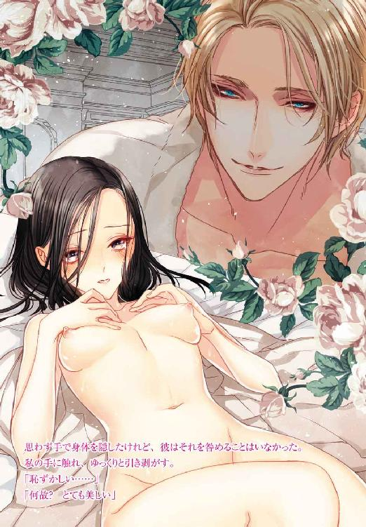
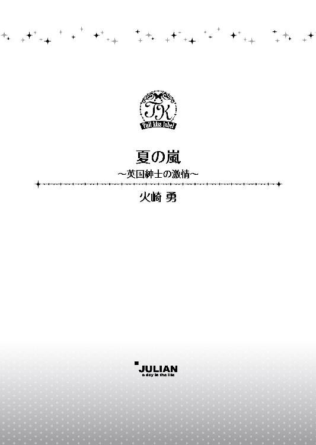
この物語はフィクションであり、実在の人物・団体・事件等とは、いっさい関係ありません。
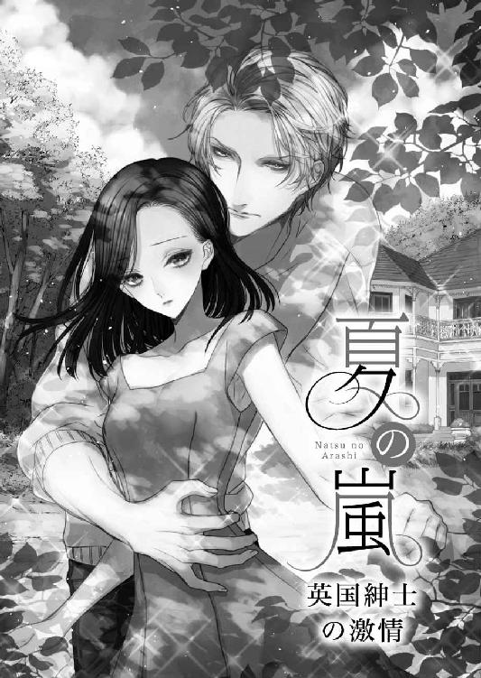
イラスト・旭炬
『夏に日本に行くから、一緒に過ごそう』
兄からの電話に、私は素直に喜んだ。
何せ、実の兄ながら、フレッドと夏を一緒に過ごすのは子供の時以来だったから。
私の名前は岸田舞亜。
でも、兄の名前はフレッド・アドリアン・キャベンディシュ・バークレー。
兄は、イギリスのバークレー家の跡取りで、キャベンディシュ家の一員でもある。
私にはよくわからないのだが、亡くなった兄の母が名門と言われるキャベンディシュ家の出身だったので、そちらの家の名も連ねているらしい。
父は伯爵で、ノーザンバラント伯爵。
兄が正式に父の跡を継ぐと、更にノーザンバラント伯爵という名称が付く。
とにかく、名門の家の人間なのだ。
日本で貴族だの伯爵だのというと、小説やマンガの中の話だけれど、イギリスにはまだその制度が残っている。
その『制度』が、私と兄の名を分けていた。
今から二十数年前、母の岸田洋子は仕事でイギリスへ渡った。
当時の母はアパレルの会社にデザイナー見習いとして就職したばかりで、イギリスは研修としての渡航だった。
そのイギリスで出会ったのが父だ。
父は当時既に爵位を継承し、伯爵を名乗っていた。
けれど、二十代の一般日本人女性の殆どがそうであるように、母は『伯爵』というものの意味をはっきりと知ることはなく、普通に恋に落ちた。
父が、広大な領地と会社を持っているとも知らず。
父はその時には既に兄の母である先妻を病気で亡くし、独身。もちろん母も未婚。だから、二人の結婚には何の問題もないはずだった。
はずだったのが...、結果から言うと母は結婚できなかった。
父の持つ爵位のせいで。
父の一族が、由緒あるバークレー家に外国人の血を入れることを拒んだからだ。
先妻の実家であるキャベンディシュ家も名門で、一族の血を引く兄の義母が外国人になることを拒んだ。
もし男の子が生まれて、相続問題でも起きたら、と考えたのかもしれない。
それでも父は随分と頑張ってくれて、母を城へ住まわせ、妻と同等の生活をさせてくれた。けれど、公式の場に妻として連れて歩くことはできず、結婚していないので永住権もない。
私という娘が生まれても、母はバークレー家の人間にはなれなかった。
そのことで母は精神的に疲弊し、病に倒れ、結局私が八歳の時、終に日本へ戻ることになってしまった。
日本へ戻っても、体調はよくならず、そのまま衰弱して亡くなった。
私が十歳の時だ。
日本へ戻ってからの私は、岸田の祖父母に育てられた。
幸い、岸田の家はそれなりに裕福だったし、祖父母は孫の私を愛してくれてたので、生活に不自由はなかったが、母が亡くなった時はショックだった。
祖父母は父を嫌い、母が入院したことも伝えず、亡くなった事すら伝えなかった。私が父や兄と共に暮らしたのは、生まれてから日本へ戻ってくるまでの八年間だけ。
その後、母が亡くなったことを知った父は私にイギリスへ遊びに来るようにと誘ってくれたのだが、祖父母がそれを許さなかった。
自分の大切な娘を病気にさせ、死なせた国に、大事な孫を送り出せるものか、と。
「親子の名乗りなんかさせませんよ。あの人はお前の父親でも何でもないんですからね」
「どの面さげてお前に会いたいなんて言うんだ。お前は岸田の娘だ。イギリス人じゃないんだからな」
それが祖父母の思いだった。
イギリスにいる父の親族が私を歓迎しないことも知っていたから、私も特に行きたいとは思えなかった。
家族は愛していたけれど、その周囲の人達は...。
親族のせいで、きっともう親子だと、兄妹だと名乗りあうことはないだろう。そのことだけは、祖父母と一緒で凄く悔しい。
財産だの肩書だのに興味はないけれど、両親が愛し合って、自分が生まれたのに。他人のせいで私達母子が『家族』から弾き出されるなんて。
父や兄が、離れて暮らす私にちゃんと愛情を示してくれていなければ、きっと私も父達を恨んでしまっただろう。
祖父母の手前、会うことはあまりできなかったが、電話やメールで連絡は取り合っていたし、誕生日のプレゼントやクリスマスカードも届いた。
そのお陰で、二人の愛情は信頼している。
どんなに遠く離れていても、私達はちゃんと家族のままなのだと信じさせてくれた。
直接父や兄と会えるのは、二人が日本を訪れた時だけ。
それも、祖父母には内緒でこっそりとだ。
なので、今回の兄からの誘いも、祖父母には秘密にすることにした。
部屋で受けていた電話を切ると、私は二階の自分の部屋から出て、階下の座敷へ向かった。
「おばあちゃん」
座敷には、おばあちゃんが一人でお茶を飲んでいた。
祖父は定年で会社を辞めてからも、望まれてまだ同じところで働いていた。まだ帰っていないところを見ると、きっと会社帰りに一杯飲んでるのだろう。
「何？ 夕飯にする？」
「ううん。まだいいわ。おじいちゃんが帰ってからで。それより夏休みのことなんだけど」
私が隣に座ると、祖母は黙ってお茶を淹れてくれた。
我が祖母ながら、齢を重ねてもほっそりとした美人のおばあちゃん。きっと若い頃はモテただろう。母も美人だったので、自分も顔には自信がないわけではない。
肩より少し長いところで切り揃えた真っすぐな黒髪、長い睫毛は母譲りだし。
「どこか行きたいの？」
「反対よ。お友達から誘われたの。お休み、友達の別荘に行ってきていい？」
「いいけど、お仕事は大丈夫なの？」
「夏休みだもの、大丈夫よ。それより、おばあちゃん達と別々になっちゃうんだけど...」
「そんなこと、気にしなくていいわよ」
祖母はけらけらと笑った。
「舞亜がいないなら、おじいちゃんと二人で旅行でも行くわ」
明るくて優しい祖母。
夫婦仲もとてもいい。だからこそ、父のことが許せないのだろう。
「お土産買ってくるわね」
「まだ先の話でしょう？ 今からそんなこと言うなんて、随分楽しみにしてるのね」
「そういうわけじゃないけど。...でも旅行は楽しみよ」
「早く彼氏と旅行、なんて色っぽい話をしてくれるといいんだけどね」
「彼氏は吟味して選ぶわ」
「そうしなさい。一目惚れして『運命だ』なんて言って、周りが見えなくなるのはダメよ。ちゃんと結婚してくれる人じゃないとね」
「ボーイフレンドとすぐに結婚の話なんかしないわよ」
「結婚の話はしなくても、相手のことは調べておけっていうの。あんたのお母さんみたいに、直前になって結婚できなかった、なんて悲劇はもう嫌ですからね」
「私が結婚するなら日本人よ。そんな心配しなくても大丈夫」
答えながら、やっぱりフレッドの別荘に行く、と祖父母には言えないと思った。
嘘をつくのは心苦しかったけれど、今、極めて一般的な生活を送っている自分にとって、夢の世界に住む兄からの誘いは魅力的だもの。
「恋愛なんて、『絶対』はないのよ」
「やあねぇ、おばあちゃん。心配しすぎよ」
今年の夏は、きっと楽しい夏になる。
今年の夏は、お姫様になれる。
そんな期待でいっぱいだった。
極めて一般的。
自分ではこの生活がそういうものだと思っている。
母と同じ道を歩んだわけではないけれど、私も大学を卒業して就職したのはアパレル関係の会社。
デザイナーではなく、事務職だったけれど将来はバイヤーになりたいと思っていた。
でも今はＯＬ。
毎日会社に行って、デスクワークで一日過ごし、時には同僚と飲みに行ったり、学生時代の友人と遊んだりするけれど、格別変わったことなどない。
それでも、兄さんの別荘に向かう一週間前の土曜日、私は兄さんへのお土産を選ぶために街へ向かった。もちろん、おばあちゃん達には友達への手土産を買う、と言って。
せっかく繁華街へ行くのだから、と明るい色のワンピースに身を包み、電車に乗る。
誰かにプレゼントを買う、というのは楽しいもの。それが自分の好きな人のためならば。
相手が喜んでくれる顔を想像するだけで、顔が綻んでしまう。
でもこの『相手が喜ぶ物』というのが、なかなか難しい。
フレッドはお金持ちで日本贔屓なので、大抵のものは自分で買えてしまうからだ。
かといって、チープなものを贈っても使ってはもらえない。
しかも、離れて暮らしているから、彼の趣味もよくわからないので、服や身の回りの品は選びにくいし、花や菓子などの消えものは旅行中の人間には渡せない。
でも、今日は最初から考えていたものがあった。
江戸切り子のグラスだ。
ネットで調べて、店もちゃんと決めていた。海外の人も訪れるという老舗。
最寄りの駅で降りると、私は真っすぐその店へ向かった。
格子戸を模した店構えは、いかにも高級そうで入るのに気後れしてしまう。
が、勇気を出して中へ入った。
店内は表から見るより広く、暗めの照明の中、黒い棚に飾られた切り子のグラスや皿や水差しの一点一点にライトが当てられている。
琴の音の流れる中には年配の方や外国人が多い。
見たところ、若い女性は私だけのようだ。
フレッドは目がグリーンだったから、緑のグラスがいいかしら？
見ていると、紺のスーツを着た女性の店員が声を掛けてきた。
「お手伝いいたしましょうか？ どういったものをお探しでしょうか？」
「ええと...。若い男性に贈るのですけれど...、グラスでいいのがあれば...」
「ショットグラスでしょうか？ それとも普通の」
「使い勝手のいいものがいいです」
「ではこちら等いかがでしょう？」
彼女が示したのは紫色のグラスだった。
紫も悪くないけれど、やっぱりグリーンがいい気がする。
こちらが気に入らなかったのを察したのか、彼女はすぐに別のものを示した。
「こちらはペアグラスですが、少し大きめのものになっております」
次に示されたのも、あまりピンとこない。
顎に手を当てて首を捻っていると、彼女は遠慮がちに微笑んだ。
「御用がありましたら、いつでもお声がけください。あちらに新作もございますので、どうぞごゆっくり」
こちらが案内を必要としない、と見るとすぐに引き下がる。
高級店の接客というのは、押し付けず、でしゃばらず、なのね。ずっと店員にくっつかれているよりこの方が好きだわ。
「ありがとう」
と応えて、私は彼女が示してくれた新作があるというところへ向かった。
グラス、ぐい呑み、花瓶、水差しに大皿。色々なものがキラキラと輝きを放っている。
麻の葉、剣菱星文様、魚子流し文様、四つ割玉文様、八角籠目。ガラスに彫り込まれた文様の名前も味わいがあった。
意味がわからなくても、その名前だけでも、素敵に思える。
色の付けられたガラスから削り出された透明の光。
綺麗だわ。
自分でも欲しくなってしまう。
この雰囲気に酔ってゆっくりと見て回っていると、一組のグラスに目が留まった。
細身で、淡いブルーから緑にグラデーションのかかった色合い。彫りの文様は『八角籠目文様』とある。色の残った部分が宝石をはめ込んだよう。竹などで編んだ籠の目を表しているのだろうけれど、それは大きな星のようにも見える。
シンプルだけれど、それだけに飽きのこない柄だわ。
私は思わずそのグラスに手を伸ばした。
と、同時に私の隣からも手が伸び、互いの指先が触れ合った。
「あ」
私より相手の手が先にグラスを握ったので、思わず声を漏らすと、相手は私を振り向いた。
背の高い、金髪の外国人男性。
彫の深い整った顔は、一瞬こちらを見て、にこっと笑った。
「あなたも、これをお望みですか？」
流暢な日本語。
「ええ。その色が欲しくて」
「ご自分でお使いになるなら、あちらのピンクの方がいいですよ」
「贈り物なんです」
どうしよう。
緑色のものはあまりなかったから、これが欲しいのに。
「ペアグラスということは、ご両親に？ お友達の結婚祝い？」
「いいえ」
「では、恋人と使うつもりなのかな。だったら、譲らないといけないかな」
贈るのは兄だけれど、彼が『恋人なら譲る』と言ったので、私はその話に乗った。
「ええ、素敵な記念になると思って」
「残念だ。あなたのように美しい女性にはいつも先約がある。このグラスも、素敵だから先約があったと思うことにしましょう」
彼はそう言うと、手にとっていたグラスを私に渡してくれた。
「よろしいんですか？」
「私は妹に贈るつもりなので、もう少し女性らしいものにします。そうだ、もしよかったら、女性の目線で妹の喜びそうなものを選んでくれませんか？ そうしたら、このグラスを喜んであなたに譲れる」
ナンパ...、のわけがないわね。
彼は女性に不自由するような容姿ではないもの。
前髪をソフトに立ち上げて後ろに流したオールバック。外国人だから当然なのかもしれないけれど、高く大きな鼻。目はブルーで、髪と同じ金色の睫毛がその青い宝石を縁取っている。
イケメン、という言葉が薄っぺらく感じるほど、整った顔立ち。
着ているスーツも、仕立てのよいもので、背が高くがっしりとした彼に合っている。これはきっとツルシじゃなくて、オーダーメードだわ。
「わかりました。お手伝いします。でも、これを他の人に取られると嫌なので、お会計を先にしてきてもよろしいですか？」
「もちろん。ではここで待っていましょう」
「ではすぐに」
私はカウンターを振り向いて、先程の女性店員を見た。
店員は目線だけですぐに気づいて近づき、「お決まりですか？」と問いかけてきた。
「ええ、これをお願いします。プレゼントで」
「かしこまりました。それではご用意するまでお待ちください」
グラスを彼女に渡し、男性に向き直る。
「妹さん、お幾つですか？」
「あなたと同じくらいです」
「それなら、いいのがありますわ。私も素敵だと思ったのが。でも、男性には似合わないので選ばなかったんです」
私はさっき目に留めていた桜の花の文様のグラスのところへ彼を連れていった。
淡いピンクから濃いピンクへのグラデーションの地に、桜の花の形の彫り込み。グラスの上の方が少し口広にカーブしていて、私が選んだグラスより更に細身なものだ。
「これなんか、女性だと喜ぶと思うんですが...。江戸切り子ということでお探しでしたら、もっと幾何学的な文様の方がいいのかしら？」
「そうなんですか？」
「私達日本人でも、切り子というとそういうものだと思ってますから。これは珍しい柄だと思います」
「日本人でも？」
「ええ」
「ふむ...」
彼はグラスを手にとって眺めた。
「妹さんは、日本贔屓なのですか？」
「まあまあね。私と共通の友人が日本贔屓で、それに感化された程度だけれど。もしあなたが自分の物として選ぶなら、これを選びますか？」
訊かれて、私はちょっと悩んだ。
このグラスは可愛いけれど、私には可愛すぎるので。
「私でしたら、あちらのぐい呑みにします」
「『グイノミ』？」
「日本のお酒を少し飲む時に使う小さなグラスで。ショットグラス、と言えばおわかりかしら？」
「ああ、ショットグラス」
また別のグラスの前に立ち、まるで自分が店員になったかのように、彼に説明する。
「この丸い感じが、手の中にすっぽり収まって、可愛らしいと思ったんです。文様もいいけれど、グラスの形も大切ですし」
「これは小さくて可愛い。メアリも最近日本酒を飲むようになったから、こっちの方がいいかな」
メアリ、というのが彼の妹さんの名前ね。
「これを買う予定は？ レディ」
「今日は贈り物を選びに来ただけですから」
「ではこれにしよう」
彼は手を上げ、店員を呼び、これを包むようにと頼んだ。
「今日は贈り物を選びに来ただけだと言いましたね」
「ええ」
「この後の予定はない？」
「ええ」
「それなら、お茶に付き合っていただけませんか？ ここの二階にティールームがある」
「でも...」
「もちろん、ステディがいる女性におかしな真似はしないと誓います。ただ妹のことを相談したいのです」
「妹さんの？」
「日本で遊びたいというのですが、どこを案内したらいいかわからなくて。あなたは年頃も近いし、趣味がいい。だから、あなたぐらいの年頃の女性が好む場所を教えてください」
ここが飲み屋だったら、私ももう少し警戒しただろう。
けれどここは高級店で、客層もいい。彼は最初から紳士的だったし、誘われたのはここの店の二階の喫茶室。
いいえ、そんなのは言い訳。ここで別れたら、多分二度と会うことすらないであろう素敵な彼の誘いを断るなんてできなかった。
「お茶だけなら」
ほんの少し謹みをもって、そう言うと、彼はにっこりと笑った。
「私は ジェイコブ・グリーン。ジャックと呼んでください」
「私は岸田舞亜です」
「マイア。可愛い名前だ」
最近では、『カワイイ』は外国でも通じる日本語になっているらしいから、彼がそれを口にするのは他意のないことなのだろう。
それでも、素敵な男性に微笑みながら言われると、ちょっとドキドキしてしまう。
お互いに買った品物を受け取ると、店の奥の階段を上って、二階の喫茶室へ。
落ち着いた和の雰囲気の店は、下の店と同じく年配の客が多かった。
係の人に案内されたのは窓際の席。座り心地のよいグリーンのソファに二人向かい合って座ると、切り子のグラスに注がれた水が運ばれてくる。
「何でもお好きなものをどうぞ。誘ったのは私ですから、おごりますよ」
「ありがとうございます。それじゃ、お言葉に甘えて」
とは言いつつも、会話するなら食べるものは不向きだろうと考え、焙じ茶オレを頼んだ。
彼はコーヒーを頼むと、正面から私を見てまたにこっと笑った。
やっぱり素敵だわ。下の店では照明が薄暗かったからよくわからなかったけれど、こうして陽の光の中で見ると、ブルーの瞳がとても綺麗。
こういうのを、ノーブルな顔立ちと言うのね。
外国人は子供の頃に見慣れていたけれど、彼は特別。まるでモデルのようだわ。
「改めて自己紹介します。私はイギリスから来ました。ジャック・グリーンです」
「まあ、イギリス」
「イギリス、好きですか？」
「ええ、とても。私は岸田...」
「舞亜」
覚えてるよ、というように彼が口にするから、私も微笑んだ。
「ええ、そうです」
「では、口説いているわけではないという証明に、妹の写真を見せよう」
おどけた口調で言うと、ジャックはスマートフォンを取り出し、こちらへ寄越した。
そこには、彼と同じ金色の髪の、少しソバカスのある可愛らしい女性の笑顔があった。
化粧をしていない顔、ラフなスタイル。とても好感のもてる女性だわ。
「きちんと化粧をすれば、もっと美人なんだ」
と彼は言ったけれど、素顔でも十分可愛い。
「妹さんって、私と同じくらいとおっしゃってましたけど、お幾つなんですか？」
スマホを戻しながら訊くと、彼は大事そうにそれをスーツの胸ポケットにしまった。
「今年大学を卒業したから二十一だ」
「それなら私より年下だわ」
「...学生じゃないのかい？」
「もう働いてます。オーエ...オフィス・ワーカーです」
いけない、いけない。ＯＬは和製英語だから外国人には通じなかったわ。
「それは失礼を。でもまだ若いんでしょう？」
「若いだなんて、二十三です。ジャックさんだって若いのでは？」
「私はもう二十八だ。すぐに三十に手が届く」
二十八。フレッドと同じくらいね。
彼がイギリス人だというのもあって、何となく親近感が湧く。
「でもそのくらいの男性って素敵ですわ。頼りがいが出る頃ですもの」
「彼もそのくらい？」
「...ええ、まあ」
今更嘘とは言えないので、曖昧に笑ってごまかす。日本人の悪い癖ね。
でも、あんな嘘つかなければよかった。そうしたら少しは興味を持ってもらえたかもしれないのに。
「妹さんとは随分齢が離れてらっしゃるのね」
「ああ。それに子供の頃から病弱でね。両親が忙しかったので、まるで娘みたいなものだ。卒業祝いに何でもしてやると言ったら日本に行きたいと言い出してね。私が仕事でよく日本に行くから、興味があったんだろう。それに、恋人も日本贔屓だし」
がっかりだわ。恋人がいるのね。
それとも、今のは妹の恋人って意味かしら？
「日本を好きになってくださる方が多いと嬉しいわ。妹さんは日本にいらっしゃるのは初めてなんですか？」
「ああ。だが日本語はペラペラだ」
「ジャックさんも素晴らしいわ。どちらで学ばれたんですか？」
「大学だ。日本文学を専攻した。ナツメをね」
「漱石ですか」
「ああ。結構詳しいぞ。...いや、詳しいですよ」
自慢するようにぽろりと零れたざっくばらんな言葉。
きっと普段はそういう喋り方をしているのね。それもまた親しみが湧く。
「そんなにかしこまらなくていいですわ。友人のように、で」
「いや、初対面のレディにはちゃんとした言葉を使わないとね」
それから、私達は色んな話をした。
まず、妹さんの行きたい場所を探すなら、彼女の趣味が知りたいというと、彼は雄弁に妹さんのことを語り始めた。
齢の離れた妹さんは、生まれた時に未熟児で、早産がたたりお母様も身体を壊された。
育児は乳母と彼が担い、そのせいで彼は妹は自分が守らなければ、という強い使命を抱いたらしい。
彼の身なりと態度から、上流社会の人間であることは察していたが、乳母という言葉がさらりと出てくると、やっぱりという気がする。
日本ではベビーシッターを雇う人はいても、ナニィを雇う人は珍しいもの。
未熟児で生まれたからか、妹さんは身体が弱く、何度も病気をした。
そのせいで、あまり外へ出ることもなく、学校も休みがち。だから、彼はずっと、妹さんの相手をして過ごしていた。
十五を過ぎてから何とか普通の生活を送れるようになったが、それでも心配でたまらないのは彼の言葉から察せられた。
妹さんは私と大差ない齢なのに、彼の話の中ではまだ小さな子供のように思えてしまう。
お母様が亡くなられると、その気持ちは益々強くなり、何でもしてあげたいと思うようになったようだ。
大切な妹。それがよく伝わってくる。
もしも、私がイギリスで父の元、フレッドと一緒に暮らしていたら、フレッドもこんなふうに思ってくれたかしら？
『兄さん』と呼べない関係が長く続いていたから、ジャックの妹さんへの気持ちは純粋に羨ましい。来週、別荘で会ったら甘えてしまいそう。
妹さんは絵を描くのが好きだというので、彼の希望としては、それに関する場所がいいということだった。
ただ、美術館はネットでも調べることができるので、等身大の若い女性が興味を持つ場所がいい。あまり安っぽい場所や、浮ついた場所はよくない。
どうやら、この保護者はちょっと過保護で、独善的なところもあるようだ。
ただそれも愛情故だと思うと、微笑ましい。
「妹さんに恋人ができたら大変ね」
と笑うと。
「メアリに恋人ができたらこの役目は相手に譲るさ」
と言ったけれど、どうかしら。
彼の義弟になる人は大変だわ。
私は、彼の妹のために、琥珀の工房や、小さなお寺を紹介した。
植物園や、流行のセレクトショップ。食品サンプルの店に日本人形の店も。
たっぷり二時間以上も、彼と話した私は、もうすっかり彼に心を奪われていた。
礼儀正しく、上品な男性だと思った。整った顔とスタイルで、観賞用として最上級の男性だわ、と。
けれど、話してみると過保護なほどの妹思いはシスコンと言ってもいいほどで、うちの妹はこうだと決めつけてる独りよがりなところもあるとわかった。
でも礼儀正しくあろうとする自制心や、喋り過ぎるとすぐに気づいて私の話を引き出そうとする。
彼は、すごく躾のいい子供みたいだった。
公式の席では王子様だけれど、きっと家では悪ガキみたいに強気なんだろうと思わせた。
もっと、この人のことが知りたい。
自分が感じた印象が本当かどうか確かめたい。
でも...。
この出会いが店を出たら終わるものなのはわかっていた。
彼の身なりや、言葉の端々から、自分とは違う世界の人なのだと気づいていたから。
父の元へ残っていたら、きっと親しくなれただろう。もっと深く付き合うこともできたかもしれない。私が、イギリスの貴族の娘だったら。
でも、私は岸田の家で育った普通の日本人のＯＬ。そのことに不満はない。
だから、『すっごくカッコイイ王子様みたいな人とお茶しちゃった、ラッキー』で終わらせなければ。
母と同じ悲しみを味わうことになる。
金銭や身分で人を差別はしないが、育った環境での『釣り合い』というものはあるのだ。
「君と話をするのはとても楽しかった。舞亜は頭のいい女性だ。それに慎み深い。もし君の恋人に失礼でないのなら、メールのアドレスだけでも交換してくれないか？」
なので、ジャックのその申し出に、私はちょっと戸惑った。
これで終わりにしないつもりなの？ と。
「妹に、知らないことを尋ねられた時、また頼りたい」
そんな都合のいいことはないわね。
「何でも答えられるお兄さんでいたいんですね？」
「兄としての威厳だ」
もう、ちょっと胸を張るようにしてそう言う偉そうな態度も可愛いと思ってしまう。
「じゃ、その威厳のために協力します。携帯電話のアドレスでよろしいですか？」
「いいとも。もし、今の彼と上手くいかなくなったら、すぐに連絡してくれ。私が慰めに行くから」
別れる、か。その手があるわね。
「ありがたいお申し出と思って、そうなったら一番に電話します」
支払いは、当然のように彼がした。
私は遠慮したのだけれど、相談に乗ってもらったのだからと譲らなかった。
店を出ると、車で送るという彼の誘いを断って、その場で別れることにした。いつまでも一緒にいると、もっと彼のことを好きになってしまいそうだったから。
「謹み深いな。それとも、恋人に気兼ね？」
「いいえ。この後にも買い物があるの」
「そうか。では、また再会できることを祈って」
差し出された手を握ると、彼はスッと近づいて頬に軽くキスをした。
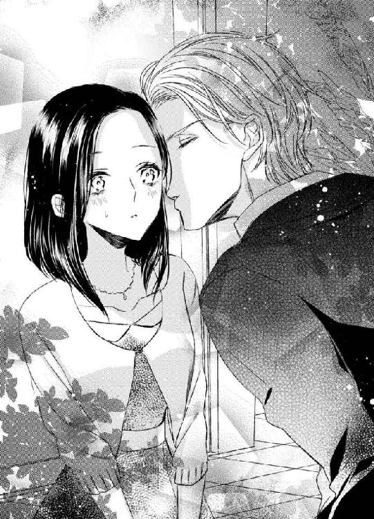
「これぐらいは許してくれ。挨拶だから」
彼はそう言ったけれど、キスに慣れていない私には、それだけでも胸が騒いだ。
「さよなら舞亜。また」
微かに残るコロンの香り。
微笑んで去ってゆく彼の姿を見送り、彼の唇が触れた頬に手をやる。
「嫌だわ...。挨拶なのに」
もう一度、会えるかしら？
そうしたら、あなたのことが忘れられなくて恋人とは別れたと言ってみようかしら？
...いいえ、期待なんかしちゃダメ。彼の今の優しさは、私への興味ではなく、大切な妹のため、紳士としての礼儀なのだから。
私はフレッドに贈るグラスの紙袋を手に、ジャックが去って行ったのとは反対の方向へ向かって歩きだした。
フレッドにだけプレゼントを贈ると、ヤキモチを焼くであろう父へのプレゼントを買うために。
夢のような時間から、現実に戻るために...。
消化しきれず持っていた有休を全部つぎ込んで、私は心を躍らせて軽井沢へ向かった。
一緒に過ごしてあげられないことを悔やんでいた祖父母は、何と私の休暇に合わせて祖父が休みを取り、夫婦二人で海外旅行をすることに決めていた。
「一度南の島でゆっくりしてみたかったんだ」
と、まるで新婚旅行のように、私より一日早く旅立って行った。
心残りもなくなり、気分上々で列車に乗る。軽井沢の駅で降りると、そこはいかにもな観光地となっていた。
フレッドが車で迎えに来てくれる約束なので、大きな荷物を抱えたまま駅前で彼を待つ。
高原で、気温は東京より低いけれど、夏の太陽は容赦なく降り注いだ。
やっぱりどこかの店で待ち合わせればよかったかしら？ でも、お互い店なんてわからないし、行き違わないためには駅前が一番だと思ったのだけれど...。
まだ昼過ぎだというのに、辺りは多くの観光客。昔は高級リゾートだったかもしれないけれど、今はカップルより家族連れの方が目立つ気がする。
別荘はここから車で向かう、旧軽井沢という場所で、あまり民家もないところだとか。
行く前に、お菓子でも買っていこうかしら？
目の前を、何台かの車が行き過ぎる。
立ってるだけだと待ちぼうけをくらってるみたいだから、電車の中で読んでいた観光案内の本でも読もうかしら、と思ったところに白い車が滑り込んできて目の前で停まった。
「舞亜」
これが白馬だったら、降りて来たのは王子様だわ。
「フレッド」
茶の髪にグリーンの瞳。優しそうな微笑み。
生なりの麻のシャツの似合う、背の高いその姿。
ここは日本で、人目もあるというのに、私達は強く抱き合って、頬へのキスを交わした。
「久しぶり」
「直接会うのは二年ぶりだな。元気だったか？」
「元気よ。フレッドは？」
「もちろん」
そしてまたキスを交わす。
「再会を楽しみたいが、ちょっと不味いことがあってね。悪いが、すぐ乗ってくれ」
「不味いこと？」
「車の中で説明するよ」
私のスーツケースを後部座席に入れ、助手席のドアを開ける。焦っている様子なので、何も言わず私はシートに身を滑らせた。
「どうしたの？」
シートベルトを付けるや否や、車が走りだす。
フレッドとは話したいことがいっぱいあった。
再会したらすぐに話が止まらないだろうと思っていたのに。
「マーガレット伯母さんが日本に来てるんだ」
「マーガレット伯母さんが？」
その名前に、私は眉をひそめた。
忘れられない名前だわ。私がまだイギリスにいた時、お母さんに散々厭味を言ってた伯母さんだもの。
「どうして伯母さんが？」
「偶然日本人の友人のところへ遊びに来たらしい。今夜は僕の別荘に泊まりたいって言うんだ。会えばお前が嫌な思いをするのはわかってるから、今夜だけ、ホテルに泊まってくれないか？」
「ホテルへ？」
「もう予約は入れてある。最高級のスイートだよ」
「......せっかく楽しみにしていたのに」
「僕もだ。明日の朝一番に伯母さんを送ったら、その足で迎えに行くよ」
「仕方ないわね」
「すまない」
「いいの、フレッドのせいじゃないし、私に気を遣ってくれてるのはわかるから」
「舞亜はいい娘に育ったな。岸田のおじい様達が大切に育ててくれたのがよくわかる」
「今度会いにくればいいのに」
「会ってくれるかな？」
「大丈夫だと思うわ。でも今はダメね。二人で旅行中なの」
「へえ、どちらへ？」
「タイ。南の島のリゾートに憧れてたんですって」
車は賑やかだった駅前を離れ、木々の間を抜ける一本道へ入った。
都会ほど車は走っていないと思っていたが、ポツポツと行き交う車もある。
「僕は一昨日到着したんだ。友人を連れてね」
「お友達？」
「今度日本で事業を始める。そのパートナーだよ。それと...、とても大切な人も後から来ることになってる」
「お父さん？」
「いや、そうじゃない。だが舞亜には会わせたいんだ。大事な話もしたい」
「意味深ね。で、私は何て紹介されるの？ 伯母さんが姿を見せてるんじゃ、妹とは言えないでしょう？」
フレッドのイギリスの友人で事業パートナー。きっとハイクラスの人だわ。そんな人に私を『妹』と紹介したと知ったら、マーガレット伯母さんならきっと目を吊り上げて怒るだろう。
籍にも入っていない娘を、どうしてバークレーの人間と名乗らせるのか、と。
「最初は友人でもいいかい？ 後で必ず妹だと言うから」
「ずっと友達でもいいわよ？」
「いや、それはダメだ。お前を妹と言わないのは、お前に不快な思いをさせないためであって、僕自身はどんな場所でも、誰にでも、舞亜が僕の妹だと紹介したいんだからね」
嬉しい。その言葉だけで、マーガレット伯母さんの不快な思い出も消えてゆく。
「舞亜は綺麗になったね」
「え？」
「真っすぐな黒髪に神秘的な黒い瞳。二年前に会った時よりずっと女性らしくなった。ボーイフレンドが出来たんじゃないのか？」
「...残念だけど、そういう報告はできないわ。働き始めたばかりで、まだそんな余裕もないのよ。そんなこと言い出すなんて、何かあるの？」
「それはまだ秘密だ。ああ、ここだよ」
車は本道を外れ、細い道を進んでいたが、その突き当たりに大きなホテルが建っていた。
シックな感じのリゾートホテルだ。
「素敵」
山荘のような造りは白い壁と濃い青の屋根のコントラストが周囲の森と合っていて、まるでスイスの山奥に来たよう。
「気に入ってもらえてよかった。今夜一晩だけだから、我慢しておくれ」
「我慢だなんて。しがないＯＬにとっては夢のような一泊よ」
きっと気にしているのだろう、わざと大袈裟に喜んで見せる。でも、わざと、ではなくともちょっとテンションの上がる佇まいだ。
フレッドは私の荷物を下ろすと、そのままホテルの中へ案内してくれた。
予約は入れてあるので、フロントで名前を言うとすぐに部屋へ案内される。
部屋は、本当にしがないＯＬにとっては夢のような部屋だった。だって、私しか泊まらないのに、部屋数は三つもあるのだもの。
窓の外には森が続き、眺めもよかった。
「僕はすぐに戻らなきゃならないが、明日の昼には迎えに来るよ。支払いは僕がするから、払っちゃダメだよ」
「きっと払えないわ。あ、待って」
私は慌てて帰ろうとしていたフレッドを呼び止めた。
「何だい？」
「お土産があるの」
明日渡してもよかったのだが、早く渡したくて我慢ができなかった私は、スーツケースの中からあの切り子のグラスの入った紙袋を取り出した。
「これ、お土産」
「僕に？」
「それから、こっちはお父さんに」
あの後文具のギャラリーで買ったガラスのペーパーウエイトが入った袋と一緒に渡す。
「気を遣わなくていいのに」
「気を遣ったわけじゃないわ。愛情よ」
「じゃ、こっちも父さんから預かったものを渡そう」
「お父さんから？」
「はい」
フレッドが無造作にポケットから取り出したのは、ベルベットの張られた小箱だった。
「これ...？」
「サイズが合わなかったら、直しに出してあげるよ」
「開けていい？」
「もちろん」
受け取って蓋を開けると、思った通りそれは指輪だった。
可愛らしいピンクの宝石がついたクラシックなデザインだ。台座の左右には小さな翼のデザインがあり、内側には、『Ｃ ｔｏ Ｍ ｗｉｔｈ ｌｏｖｅ』と彫られている。
Ｃは父さんの名前、チャールズの頭文字だ。
「こんな高価な物...。おばあちゃん達に怒られちゃうわ」
「目利きじゃなければピンクダイヤとはわからない。岸田のおばあ様達にはガラスだと言っておけばいいさ」
「ピンクダイヤ？ それって高いんでしょう？」
「娘への贈り物に金を惜しむ父親はいないよ。突き返されたらきっと悲しくて泣いてしまうだろうから、受け取っておくれ」
「わかったわ。とても喜んでいたと伝えて」
「お前が電話しなさい。部屋からすれば、電話料金は部屋づけになるから、長電話もできるだろう？ 今回来られなくてぼやいてたよ」
「仕事があるから無理でしょう」
「僕が事業を始めたら、僕の様子を見に行くという名目でちょくちょくこっちへ来るようになるだろうね。何だったら、僕の会社に転職するかい？ 社長秘書の座を空けておくよ？」
「考えておくわ」
指輪を取り出し右手の薬指に嵌める。宝石、というより父の愛情が嬉しかった。
「それじゃ、また明日」
「ええ。伯母さんに気を付けて」
「もう色々言われた後だ。それに、今回は友人が同席してるからいつもよりソフトだよ」
「お友達に感謝ね」
二人で顔を見合わせて笑う。
「じゃ、ゆっくりしなさい」
フレッドは軽くハグしてから、部屋を出て行った。
素敵な部屋。
でも少しだけ残念。
勤めてから初めてとった纏まった休暇は二週間。その全てをフレッドとのために使うつもりだったのに。
「でも、仕方ないわね。相手がマーガレット伯母さんじゃ」
明日には発つので、荷物はほどかず、部屋に用意されていた紅茶とお菓子を窓辺のテーブルに運び、ハイヒールを脱ぎ捨ててハイバックの椅子に身を沈める。
マーガレット伯母さんは、白くなった巻き毛に、金色のメガネをかけたイギリスの老婦人で、御祖父様のお姉様だ。
婚約者を亡くしてから結婚せずにずっと家にいらした方で、バークレー家では一番の年長者だった。
悪い人ではないのだけれど、旧時代の人で、貴族というものに対しての誇りがあり、いつも『ノーブルオブリゲーション』という言葉を口にした。
当時は何のことかよくわからなかったが、高貴な生まれの者には役割がある、というような意味らしい。
伯母は、バークレーという家に生まれたからには、この家を守る義務がある、と思っていたのだ。
ただの子供としての私には普通に接してくれたが、父の娘としての私は無視した。
彼女はバークレー家の財産である広大な土地が、イギリス人以外の人間の手に渡ることが許せなかったらしい。
もし、フレッドに何かあって、私が相続者になったら。日本人の血を引く私が日本人と結婚したら。それが許せなかったのだろう。
「『マイア、私はあなたが憎いわけではないのよ。でも、あなたにはあなたの場所があって、ここはあなたのいるべき場所ではないの』」
私は伯母さんの口癖を真似で呟いた。
一度、フレッドが学校の友人に私のことを妹だと紹介すると、彼女は飛んできてそれを否定した。
『言葉は正しく使いなさい、フレッド。彼女は妹のような、お客様のお嬢さんです』
そう言って。
伯母にとって、私達母子は最後まで客でしかなかったのだ。
「ああ、いや。思い出すと暗くなっちゃう。せっかく素敵な部屋に泊まれるんだもの、楽しまなくちゃ」
父からの指輪を外し、箱をスーツケースの奥へ大切にしまうと、バスルームに向かう。
伯母さんがいらしてるなら、不用意に外を歩かない方がいい。それなら、昼間からお風呂という贅沢を楽しもう。
「あ、ルージェラのバスソルト」
ブランドのアメニティに少し気分を高揚させ、蛇口を捻った。
ついでに、お風呂に入りながらお茶、という贅沢もしてみようと考えながら。
豪華で贅沢だけれど、一人きりの夕食も、広すぎる部屋もちょっと寂しかった。
そのせいもあって、父さんとの電話は本当に長くなってしまった。
翌朝、ルームサービスの朝食を終えると、早くフレッドと合流したくて、準備万端整えたまま、彼が来るのを待った。
フレッドはなかなか姿を見せず、このままだとお昼は一人で食べるようになるのかしら、と心配していると、フロントから電話でお迎えがいらっしゃいましたと連絡が入り、すぐにベルボーイが荷物を取りにやってくる。
荷物を預けてフロントへ向かうと、フレッドが待っていた。
「さあ、行こう」
荷物を持って、今度こそフレッドの別荘へ。
父さんが、日本に別荘を買ったのは、まだ母さんが生きている頃だった。
いつか、年を取ったら、二人で日本に『旅行』に行こうと思っていたらしい。
父さんは、いつか母と結婚できると信じていたのだ。と、同時に、母さんが日本へ『帰る』と言い出さないように、日本にはいつでも『行ける』ようにしておいたよ、という言い訳を作ったのではないかと思っている。
恋愛は二人でするもの。二人の気持ちが通い合えば、恋は出来る。
でも、結婚は違う。
もっと、色んな人の思惑やら何やらが絡みあって、簡単には行かないのだ。
それを、私は両親の恋で学んだ。
...嫌な『学び』だけど。
国道から続く細い道。
バークレーの別荘のためだけの道。
鬱蒼とした森のような入口は、すぐに整備された林になり、広大な芝生の庭に出る。
その先に、洋館風の造りの別荘が建っていた。
戦前にイギリスの貴族が建てた別荘を、その後日本人が買い取って手を加え、それをまたイギリス人の父が買い取った建物。
外から見ると、古い洋館だけれど、中は電気系統も水回りも最新のものになっている。
「ここは初めてかい？」
「ううん、前に一度、お父さんと来たわ。一晩だけだけど」
「一晩だけ？」
「友達の家へ泊まるって言って、高校の時に」
あの時は、アリバイ工作を頼んだ友人に、彼氏とお泊まりデートかとからかわれた。
「変わってないかしら？」
「全然。手を入れるのは好きじゃないからね。お前の部屋は二階の一番いい部屋だよ」
「バルコニーの付いてるところね。嬉しい」
喜んでフレッドに抱き着いた時、玄関ポーチに人が立っているのに気づいた。
「舞亜？」
柱に手を掛け、じっとこちらを見つめている金色の髪の男性。
「ああ、彼か。紹介するよ。僕のビジネスパートナーになる友人だ」
Ｖネックのサマーセーターを着た、少しウエーブのかかった前髪を後ろに撫でつけた、スカイブルーの瞳を持つ、背の高い男性。
私は彼を知っている。
でもまさか......。
「ジャック！ 彼女だよ」
江戸切り子の店で会った彼だわ。
ああ、もう二度と会えないと思ってたのに。
「フレッド、彼は？」
私は、ジャックに向かって手を振るフレッドのシャツを引っ張って問いかけた。
「昨日言っただろう？ 僕のビジネスパートナーだ。ジャック・グリーン」
やっぱり彼だわ。
喜びで、胸が高鳴り頬が熱くなる。
フレッドと同じハイクラスの人だと思った。同じイギリス人なのは聞いた。でも二人が知り合いだなんて、想像もしていなかった。
「行こう、紹介するよ」
「でも...」
フレッドは私の手を取ると、ジャックの方へ引っ張って行った。
ああ、やっぱり素敵。
でも、彼は店で会った時とは違っていた。
あの時には終始優しい笑みを浮かべていたのに、今は固い表情をしている。まるで怒っているみたいな。
「メアリの話し相手になればと思って呼んだんだ。こちらは岸田舞亜。舞亜、彼はジャック・グリーン」
紹介され、私は緊張した。
「先日は...」
と言いかけた私の言葉を打ち消すように、彼は「初めまして」と手を差し出した。
初めまして？
覚えていないのかしら？
「あの...、東京で......」
「フレッド、彼女の荷物をほったらかしにしていいのか？ 彼女は私が案内するから、荷物を持って来た方がいいんじゃないか？」
「ああ、そうだな。何か冷たいものでも出してやってくれ」
「いいとも。さ、どうぞ、ミス・舞亜」
言葉遣いは丁寧だけれど、やはり余所余所しい。
でもここで長話をする雰囲気ではないので、私はジャックに従って建物の中に入った。
「君が、フレッドの言っていた友人とはね」
「覚えていてくれたの？」
ああ、よかった。やはり忘れられていたわけではなかったのだわ。
「覚えていたさ。魅力的な女性だったからね。まさかフレッドのガールフレンドだとは思わなかった。いや、彼の恋人きどり、か？」
「え......？」
「昨日、駅で見かけた時、まさかと思った。似ているが別人だろうと」
「ジャック？ 私達、駅で会った？」
「偶然だ。来客の相手をすると言った彼に気を遣って、街へ出ていた。すると、客の相手をしているはずの彼が、君と...」
「突っ立ったままじゃなく、リビングへ案内してやれよ。舞亜に見とれてるのかい？」
玄関から、私の荷物を持ったフレッドが入ってきて、私達を奥へ促す。
「アイスティーでいいかい？」
「え？ ええ。いえ、私が淹れるわ」
「いいから座ってろ。お前はお客様なんだから。ジャック、彼女の相手を頼むよ。ちゃんとソファに座らせて、な」
「ああ」
ジャックは背を向けると、こちらにとも何も言わず、リビングへ向かった。
昨日駅で私とフレッドを見かけた？ 恋人気取り？
そこでハッと気づいた。
彼は、フレッドが私の恋人だと思ったのだわ。
東京の店で、私は恋人のためにあのグラスを買うのだと彼に言ってしまった。
それに、昨日駅前で私達は人目もはばからずハグしていた。兄さんと久々に会えたことを喜んで。
彼は誤解している。
でも...、それが誤解だと説明することはできなかった。
「掛けたまえ」
ソファを示され、腰を下ろすと、ジャックは冷たい目で私を見た。
「あの...」
「私達が初対面ではないことは、彼に言いたくない」
「どうして？」
「君がフレッドの恋人だなどという戯言を口にしていたと、彼に知らせたくないからだ」
「戯言？」
「そうだろう？ 恋人でもない男性のことを恋人だと思い込んでいる」
おかしいわ。彼は私とフレッドが恋人同士だと誤解してるんじゃないの？
「どうして私とフレッドが恋人じゃないと思うの？」
その疑問を口にすると、彼は鼻先で笑った。
「フレッドは近々私の妹と婚約する予定だ。君を相手にするはずがない」
「妹...、メアリさんと？」
驚いた。
そんなこと、一言も...。
いいえ、昨日大切な人がどうのとか、大事な話がしたいとか口にしていたわ。ひょっとして、あれはそのことだったの？
「知らなかったのか。でははっきり言ってあげよう。彼は君の手は取らない。君のことは友人としか思っていない。フレッドに近づくのは止めるんだな。さっさと帰った方がいい」
何となく、事態が飲み込めた。
ジャックの妹さんは、フレッドが好きなのだわ。
メアリとフレッドが本当に婚約するつもりなのかどうかはわからないけれど、ジャックはそうなると思っている。
なのに私が現れ、彼の知らないところで恋人気取りでいると思ってるんだわ。
妹想いのジャックにとって、私は邪魔者というわけね。
理解した途端、腹が立った。
この人は、私が妄想で他人を恋人に仕立てるような女と思ってるのだ、と。
「私はフレッドに招かれてここへ来てるの。あなたに帰れと言われる筋合いはないわ」
「下心がある女性をここに置くわけにはいかない」
「ここはフレッドの別荘よ。あなたにそんなことを言う権利はないわ」
「何だと？」
ムッとしたジャックが腰を浮かせた時、フレッドがアイスティーを持って部屋に入ってきたので、彼は渋々と腰をおろした。
「正式に紹介しなくても、話は弾んでいるかい？」
険悪なムードに気づくことなく、フレッドはそう言って私の隣に腰を下ろした。
「フレッド、その女性がどういう女性なのか、ちゃんと紹介してくれないか？」
「いいとも、名前はさっき教えたね」
「君との関係を知りたい」
フレッドは私を見て『いいね？』という顔をした。
妹、とは言えないのはわかってる。イギリスの社交界では、私達母子はバークレー家の一員ではないのだ。
「彼女は僕と父の大切な友人だ。今回は君の妹のメアリも来るから、女性一人じゃ居心地が悪いだろうと思って呼んだんだ。舞亜は頭もいいし、礼儀も心得ているレディだから、メアリとはきっと仲良くなれると思うよ」
その言葉を受けて、ジャックはにやりと笑った。
わかってるわ。彼の笑みは『恋人と紹介はしなかったぞ』という笑みだ。
彼に心を傾けていただけに、その態度はムカつく。
「フレッド、私にもこの方を紹介して。そのメアリさんって方のことも」
だから、意趣返しとばかりにこちらも訊いた。
「ああ。彼は僕の大学の時の友人で、今度ビジネスパートナーになる。メアリというのは彼の妹で、舞亜より年下だ。今回、ジャックに付いて日本に来てるんだが、今は東京の方で観光してる。明日か明後日にはここへ到着するだろう」
ほうら、フレッドは彼女を婚約者とは言わなかったわよ、という顔で反撃する。
「メアリが来たら、四人で夏を楽しもう」
さっきまでなら、その意見に賛同しただろう。
けれど、今となってはどうなるか。
「フレッド。もしよかったら、私に彼女をエスコートさせてくれるか？ 大変魅力的な女性だし、この近くを散策させてあげたい。君は昼食の買い物へ行くんだろう？」
「昼食？ お料理は誰が作るの？」
ジャックの誘いを無視する形になってしまったが、その質問は大切なことだった。
フレッドにしても、ジャックにしても、あまり料理ができるようには見えない。第一、失礼ながらイギリス人の料理は......。
「近くのホテルで買ってくるんだ。何だったら、いいレストランも...」
「とんでもない。それなら私が作るわ」
「舞亜が？」
「私の手料理、食べたいでしょう？」
「それはもちろん」
「それじゃ、私が彼女と一緒に買い物に行こう。いいだろう？」
ジャックはあくまで私とフレッドの邪魔をしたいらしい。
「いいよ。二人で行っておいで。僕はその間にワインを選んでおくよ」
「到着したばかりで悪いが、それでは私と一緒に出掛けよう。何を買ったらいいのか、作る人間にしかわからないからな」
腹立たしいわ。
私とフレッドの仲を裂こうとしているだけだとわかってるのに、変な誤解で私のことを悪く思っている人なのに、ジャックと二人きりで出掛けられることを嬉しいと感じるなんて。
「いいわ。じゃあ荷物を部屋へ置いてくるから、ちょっと待ってて」
「案内するよ」
「いいわ。二階の奥でしょう。スーツケースを置いてくるだけだから」
フレッドの申し出を断り、私は荷物を持って階段へ向かった。
この休暇に、波乱の予感を覚えながら。
荷物を置いてすぐに戻ってくると、ジャックは玄関先で待っていた。
「身支度に時間がかかると思ってたよ」
「荷物を置いて来るだけと言ったでしょう。フレッドは？」
「彼はワインを取りに行ったよ。出掛けるのは、私と君だけだ」
「お店の場所はわかるの？」
「もう三日もここにいるからね。来たまえ」
店では紳士然として接してくれていたのに。
もう彼にとって私は敵なのかしら。
外へ出ると、さっきは気づかなかったが白いフレッドの車とは別の青い車が停まっている。
ジャックはドアを開け、どうぞと助手席を示した。
乗り込むと、車はすぐにスタートした。
動く密室。
誰にも見られることも、聞かれることもない場所として彼は車を選び、買い物に付いてきたのだとわかっていた。
「フレッドは君を恋人とは言わなかった」
「だから何？」
「君にとって彼は相応しい相手ではない」
その言い方にムッとする。
「それは私が一般人で、彼が貴族だとか、国が違うということ？」
母が投げ付けられた言葉が思い出されて、怒りに近い感情が湧き上がる。
彼は私の言いたいことがわかったのか、少し語調を和らげた。
「彼が貴族だと知っているのか？」
「知ってるわ」
「そうか。だがそういうつもりで言ったのではない。私も貴族じゃない。私が言いたいのは、彼には決まった相手がいるという意味でだ。地位や貧富の差や国の違いなど、本人の気持ちがしっかりしていれば些細なことだ」
よかった。彼は口うるさい親族達とは違うようだ。
「君はとても魅力的な女性だ。フレッド以外にも恋の相手ならいくらでもいるだろう」
「褒めてくれてありがとう」
「褒めているわけじゃない、真実だ。だから、すぐにここから戻って、彼のことは忘れろ」
「いやよ」
ジャックの整った横顔が歪む。
「フレッドが帰れと言わない限り、私に帰る理由はないわ」
彼の気持ちはわかるけれど、私にだって都合がある。
フレッドと過ごせる機会は少ないのだ。
兄さんと過ごす大切な時間を、どれたけ心待ちにしたか。フレッドがイギリスへ戻ってしまったら、また会えない日々が続く。
せっかく休みを取ってまでやって来たのに、それを棒に振ることはできない。
「もし私を帰らせたいなら、フレッドにそう言って。彼がそう言ったら、帰ってもいいわ」
「彼は優しい男だ。自分が招いた客を早々に帰すことはできないだろう」
「じゃあこの話し合いは無駄よ。私はフレッドの客であって、あなたの客じゃないもの」
「強情だな」
「その言葉、そっくりお返しするわ」
「何だと？」
「あなたも強情だと言ってるのよ。私はフレッドの客、だからあなたに何も言う権利はないと言ってるのに、こうしてコソコソと帰れと言うなんて」
「コソコソだと？」
「そうよ。フレッドから言われたら帰ると言ったのに、彼にそう言うことはできないのでしょう？ 私を連れ出してこっそり脅すことしかできないんだわ」
「こっそりではない」
「だったら、この話はこれで終わりよ。ちゃんと運転して」
「...気の強い女だ」
こんなはずじゃなかったのに。
この夏は、フレッドと楽しく過ごす筈だった。
ジャックを見た時は、それに素敵な彼が同席すると思って胸を躍らせた。
なのに結果は、誤解を解くこともできず、彼とこんな言い合いをしている。
ジャックに、フレッドに言ってと焚き付けるのは、そうすればフレッドが自分の口で私のことを説明してくれるのではないかと思ったからだ。
フレッドがちゃんと説明してくれれば、この誤解は簡単に解ける。
私から言ってもいいのだけれど、この人はきっと信じてはくれないだろう。彼の中で、私は勝手にフレッドの恋人を名乗る女にされているから、今度は勝手に妹を名乗ってるだけだと思われるに決まっている。
だから、これ以上会話を続けたくなかった。
その後、車内は沈黙が続き、車は大型スーパーに入った。
買い物の間も、殆ど口をきくことはなく、彼は黙って私の後ろをついて来るだけだった。
口を開いたのは、私が「パスタでもいい？」と問いかけた時だけ。
「食べられるものが出ればいい」
と、憎らしい返事をしただけ。
料理の腕には自信があるのよ。絶対に美味しいと言わせてあげるから。
別荘へ戻ると、私は男二人を追い出して、キッチンを占領した。
ジャックの言葉だと、三日前からここに来ていたはずなのに、キッチンにはあまり料理をした形跡がない。
きっと、三日間外食かケータリングだったのね。朝食にはパンとスープだけとか。
でも、今日からはそれを許さないわよ。
大好きな兄のために、ジャックの鼻をあかすために。
「はい、どうぞ」
ベーコンとキャベツのクリームパスタにお豆腐を使ったミモザサラダ。スープは野菜ジュースを使ったガスパチョ。
「すごいな、こんなに早くできるなんて」
「見た目は美味そうだな」
褒めてくれたのはフレッド、後の余計なセリフはジャック。
けれど、二人とも一口食べると同じ反応を示した。
「美味しい」
「美味い」
フレッドが褒めてくれるのはわかっていたけれど、意外なことにジャックも素直に褒めてくれた。
「パスタの茹で加減もいいし、味も悪くない。働いてるのは、調理関係？」
「いいえ。事務職よ」
私のことは気に入らないはずなのに、料理の評価は公正なのね。
「舞亜はずっと料理を作ってるのかい？」
やらされてるんじゃないだろうな、というようにフレッドが訊くから、私は笑った。
「おばあちゃんが作る時もあるけど、私もよく作るわ。夕飯も期待してて」
二十歳も過ぎていれば、これくらいは当たり前だと思うのだけれど、心配してるのね。
「いや、夕飯は食べに出よう。舞亜の歓迎会をしたいからね。近くにとても美味しいレストランがあるんだ」
「でも歓迎会なら、ジャックの妹さんが来てからの方が...」
遠慮したけれど、ジャックもフレッドに賛同した。
「メアリが来たら、その時にもまたやればいい。君の歓迎会は君のためだ」
買い物の時は失礼だわ、と思ったけれど基本は公正な人なのだわ。
「食事が終わったら、荷物を解いてゆっくりするといい。夕方までは自由にしていていいよ。僕達は仕事の話をしているから」
「何の仕事を始めるの？」
「不動産だよ。ジャックはイギリスで不動産の仕事をしているんだ。うちの土地の一部も任せている」
「まあ」
「最近は日本へ旅行するイギリス人も多いからね。二人でＢ＆Ｂみたいなホテルをやろうかと思ってるんだ」
Ｂ＆Ｂとは、ベッドとブレクファストの略で、寝る場所と朝食だけを提供する安い宿のこと。イギリスでは定番のものだ。
「フレッドがホテルをやるなんて、意外だわ。今、図書館に勤めてるんでしょう？」
「勤めている、というか運営してたんだけどね。もしこの事業を始めたら、図書館の方は他の者に任せるつもりだ」
「フレッドは細やかな気配りができる人間だから、本よりも人を相手にした方がいい。経営は私がやる」
「舞亜は優秀だから、いつこっちに転職してもいいんだよ？」
またフレッドったら。
「仕事の才能もわからないのに、誘いをかけるのはやめろ」
...ジャックってば。
「彼女は優秀だよ。それに美人だろう？」
「美人なのは認めるが、それも能力には関係ない」
「人と接するなら、美人の方がいいじゃないか」
「彼女に接客をさせるつもりなのか？ 事務職にさせるつもりなのか？」
「接客はダメだな。でも社内に綺麗な女性がいるというのは...」
「二人共、私の意見を無視して会話をしないで。私は今の仕事が好きで今の会社に入ったの。まだ勤めて二年よ？ 辞められるわけがないでしょう」
「二年目だから、まだ辞められる。舞亜は、自分のイメージを表現したいから、アパレルに行ったんじゃないのかい？ デザイナーじゃないなら、そのイメージをホテルの内装などに使うのも悪くないと思うよ」
フレッドの言葉は、胸に響いた。
ただの身内贔屓で誘ってるだけかと思ったけれど、兄さんはちゃんと私に仕事をさせようと思って誘ってくれているのだ。
でも、フレッドの言葉はジャックには不快だったらしい。彼の顔は表情をなくし、目の端で私を睨みつけている。
「夕飯の時、明日どこへ行くかを決めよう。舞亜は遊びに来たんだからね。ああ、ジャック、メアリが明日来るようだったら教えてくれ。予定を変えなきゃならないから」
「ああ。夕飯までに確認しておく」
メアリはきっと明日来るわね。ジャックは、私という邪魔者を排除するのに、一番効果的な方法、つまり本人を投入するはずだから。
フレッドはメアリをどう思ってるのかしら？
肝心のそのことを訊いてないわ。
「フレッド、食後に二人で話をしたいんだけど...」
「残念だが、彼は私と仕事の話がある。君は荷物を解いてゆっくり休んだ方がいい」
でも、ジャックがいる限り、それはできないかも。
「ごめんね」
「謝る必要はないさ、フレッド。彼女は聡明な女性だから、ビジネスの大切さはわかってるはずだ」
...本当に憎らしい。
ここでの出会いが初めてだったら、きっと嫌いになってたわ。
東京で出会って、くだらない誤解などしなければ彼はいい人なのだと、知ってさえいなければケンカくらいしてあげたのに。
「後片付けは私達でやろう。作らせて片付けさせてでは申し訳ない」
ほら、こういうところが憎みきれないのよ。
「ありがとう。では二人に任せるわ。油ものはちゃんと洗剤を使って洗ってね。すすぎは丹念にして」
「わかったよ。心配なら後でチェックするといい」
前途多難。
そんな言葉が頭に浮かんだ。
与えられた部屋へ戻って荷物を解くと、特にすることはないので、私は庭に散歩に出た。
気持ちのいい高原の風に髪をなびかせ、芝生の上をゆっくりと歩く。
フレッドと懐かしい話をするのを楽しみにしていたのに、予定が少し狂ったわ。
フレッドは、必ず私のことをちゃんと紹介すると言ってくれたのだから、ジャックの誤解は長く続かないだろうと信じたい。
でも、その時までは彼の冷たい態度はつづくということだ。
ジャックと、もう一度会いたいと思っていた。
あの時限りで、もう会うこともないとわかっていたのに、メールのアドレスを交換したから、別れてから今日まで、何度も携帯をチェックしていた。
もしかして、妹さんと三人で食事でもどうか、なんて誘いが来るのではないかと。
けれど、彼からのメールがないまま三日が過ぎると、アドレスの交換なんて社交辞令だったのだわ、と諦めた。
二度と会えない人。
だからこそ、夢物語の王子様のように彼に思いを馳せていた。
もしもう一度会えたら、失恋したわと慰めてもらってもいいかも、とか。フレッドを恋人だと思っている彼には、その手が使えなくなってしまったけれど。
彼はとても妹想いだった。
その想いの強さの分、彼は私を嫌うだろう。
妹さんをとても大切にしていたもの。妹の幸せを邪魔する女性のことなど、振り向いてくれないだろう。
あの時、あんな嘘をつかなければよかった。
恋人じゃなく、お世話になった恩人のための贈り物だと言っておけばよかった。
そうしたら...。
「建物から見えないところへ行くと、熊が出るかも知れないぞ」
突然声が響いて、私は顔を上げた。
ジャックだ。
「熊なんか出ないわ」
「管理人が出るかもしれないと言っていた」
近くの木によりかかって彼を見上げる。
ジャックは少し距離を置いたままじっと私を見ていた。
「何か用？」
「外へ行くのが見えたから、二人きりで話そうと思ってね」
「私が話をしたいのはフレッドよ」
「彼は今、本国の人間と仕事の話をしている」
「ホテルの？」
「いや、図書館のだ。君は彼のことをよく知っている。彼も君のことをよく知っているようだ。それなりに付き合いはあるんだな」
『それなり』だなんて。私とフレッドは家族よ、兄妹なのよ。
「私はフレッドと長く付き合っているが、君の話は聞いたことがない」
「それはあなたが思っているよりもフレッドと親しくなかったということじゃなくて？」
彼の目が険しくなる。
「失礼だが、私は君よりもフレッドと長く付き合っている」
「でも、あなたは私のことを知らないのでしょう？」
「君が私に紹介するほどの女性ではない、ということじゃないか？」
ああ言えばこう言うわね。
でも...。
この人が、私が本当はフレッドの妹だと知ったら、どういう顔をするかしら？
根は真面目で礼儀正しい人だもの、きっと驚いて、自分の言動を恥じて顔を赤くし、謝罪するのではないかしら？
それはちょっと面白いかもしれない。
「何を笑ってる」
「いいえ。別に。あなたはフレッドのいる前では私に出て行けとは言わないのね」
「彼が招いた客だ。そんなことを言えば彼に恥をかかせることになる」
「私にならかまわないの？」
「君は嘘つきだからな」
「嘘つき？」
「フレッドの恋人だと嘘をついている」
確かにそうね。認めるわけにはいかないけれど。
「嘘だなんて、あなたにはわからないはずよ」
「わかるさ。彼はメアリと婚約する」
「彼は私にそんなことは言っていないわ」
多分、これから言うのだろうけれど。
「もしも、フレッドと別れることで経済的な被害をこうむると思っているなら、その分を私が出してやっても...」
「あなたは私が彼と金銭的に付き合ってると思っているの！」
非礼なセリフは、最後まで言わせなかった。
「『もしも』だ。そんなことは思っていない。...悪かった」
ここで謝ってしまう人だから、憎めない。
「だが、私は君のために言ってるんだ。メアリが来れば、君は自分の立場がわかるだろう。その前に、出て行った方がいい」
「立場なんて言わないで。その言葉は大嫌い。私は自分の意思でここに残るわ。あなたの妹さんが来たからって、何とも思わないわ。きっと仲良くなれるでしょう」
「君のことは、しっかりした女性だと思っていたが、強情な女性でもあるようだな」
「あなたは紳士だと思っていたけれど、暴君でもあるようね」
ジャックはむすっとした顔で私を睨むと、背を向けた。
「陽が落ちるとここは冷える。外にいたい理由がないのなら、部屋へ入った方がいい」
冷たくしてくれれば嫌いになれるのに、優しくされるから心が残る。
「もう少し散歩してから戻るわ。......心配してくれてありがとう」
戻ってゆく、広い背中。
あなたの言う通り、あれは嘘なの。私はフレッドの妹なの、と言ってしまいたかった。
でも、それはフレッドが自分のタイミングで言うことだから、私からは言えない。マーガレット伯母さんも日本に来ているし、不用意なことはできない。
フレッドに相談しようにも、二人きりになるチャンスもない。
「何とか、フレッドに相談しなくちゃ」
このもやもやを解消するためには、それしかないだろう。
だって、私はジャックに嫌われたくない。
彼に背中を向けられたことが、酷く寂しかったから...。
夕飯は、フレッドが予約を入れた近くのレストランに食事に出た。
隠れ家風のイタリアンレストランはシックで、二人のハンサムな外国人男性と同席しての夕食は素晴らしいものだった。
ジャックはフレッドの前では私に対して何かを言うことはなく、軽快な会話を楽しんだ。
「ジャックは僕にとって大切な友人だ。同時にとても優秀な経営者でもある。だから彼と事業をする気になったんだ」
遊びでやるんじゃない。思いつきでやるのでもない。フレッドは、何故自分が畑違いのホテルの経営に乗り出すのかを説明してくれた。
それはジャックの人となりを説明をすることでもあった。
どちらかというと文学青年のフレッドと違って、ジャックは運動神経もよく、快活で人付き合いも多いとか。不動産の会社は親から譲られたものではなく自分で立ち上げたものだとか。
豪胆な性格だが、素直なところもあって、それが友情を長く続け、ビジネスでもパートナーになろうと決めた理由だとか。
少し強引だが、礼儀正しいとかも。
私の第一印象と同じだわ。
彼は、男性にとっても、魅力的な人物なのね。
私にも、きっと仲良くやれるだろうと言われた時には、何と返事をするべきか迷ってしまった。もしそうならいいと思うけれど、今のままでは微妙だわ。
ジャックも困った顔をするだろうと思っていたのに、彼はもちろん仲良くやるさと答えた。
明日は三人で近くの美術館へ行く予定で、ジャックの妹は明日の夜に到着する。
「メアリのことは舞亜も気に入るよ」
「メアリはどんな女性なの？」
「とても穏やかで優しい女性だよ。身体が弱いけれど、ボランティア等をやっていて、僕の管理する図書館によく訪れていた。そこで出会ったんだ」
ジャックの妹だと知ったのは、知り合った後だったらしい。
「真面目なお嬢さんでね。穏やかな性格だ。日本文化に興味があるから日本語も堪能だ」
メアリの話をする時、フレッドの表情は柔らかいものになった。
婚約するかどうかは別として、兄さんが彼女を気に入っているのが私にもわかった。
ジャックが見せてくれた写真の女性はどんな人なのだろう？
フレッドが気に入ってるというなら、きっと素敵な女性ね。
ジャックは、私と妹さんを比べているかしら？
日本贔屓だというけれど、彼女は日本人の私をどう見るのかしら？
ジャックは、偏見のない人だった。
出会った時から私に親切だったし、気さくに話してくれた。
妹さんのことがなければ、ここでもきっと親しくしてくれただろう。
ああ、本当に。悪いことをしてるわけではないのに、自分のことをちゃんと説明できないなんて。
夕飯を終えて別荘へ戻ると、レディファーストだからと、二人は私に先にバスを使うようにと言ってくれた。
身内ではない若い男性がいるところでお風呂を使うのは気が引けたが、フレッドがいるので心配はないだろう。
別にジャックを意識しているわけじゃないけれど、つい念入りに身体を洗い、お風呂を出ると部屋着ではなくレモンイエローのサマードレスに着替えた。
だって、仕方ないわ。
フレッドだけなら部屋着でもいいけれど、ジャックは他人なんだもの。おしゃれしたいとか、綺麗に見せたいというのではなく、これは礼儀よ。
二人はリビングでお酒を飲んでいた。
レストランへは車で行ったので、アルコールを口にすることができなかったからだろう。
「お風呂。あがりました」
ひょこっと顔を出すと、フレッドが立ち上がって私を迎える。その向こうで、ジャックはじっと私を睨んでいた。
フレッドが私に近づくのが嫌なのね。
「風呂上がりは色っぽいね」
フレッドの目が笑ってるから、からかわれてるのがわかる。
「何言ってるの。お風呂空きましたからどうぞ」
「僕は後にしよう。ジャック、先にどうぞ」
「湯上がりの女性を独り占めかい？ 私も舞亜と話をさせてくれよ」
こちらも、私とフレッドを二人きりにしたくないためのセリフだとすぐわかる。
「じゃあ、僕達は飲んだ後に入ることにするよ」
「ダメよ。お酒を飲んでお風呂に入るのは危ないわ」
「酔うほど飲まないよ」
「それでもダメ。危ないことはしないで。今入らないなら、朝にして」
「わかった、わかった。じゃ、僕は朝に入るよ。君は？ ジャック」
「私もそうしよう」
残念だわ。
ジャックがお風呂に入ってる間なら、二人きりで話ができると思ったのに。
「舞亜はお酒飲める？」
「少しだけ。そんなに強くないの」
「じゃ、グラスに一杯だけだ。...そうだ、ちょっと待っておいで」
フレッドは私をソファに座らせると、一旦席を外した。
ジャックと二人きりになるのは、何となく居心地が悪い。
彼の視線は、私を落ち着かなくさせるのだ。
「化粧をしない方が綺麗だ」
「お世辞を言わなくてもいいわ」
「世辞じゃない。日本に来て、髪を染めてる女性が多いことに驚いた。だが、舞亜は綺麗な黒髪だな。初めて会った時もそう思った。そういうのを『古来カラスの濡れ羽色』と言うんだろう？」
本気で褒められて、ちょっと頬が熱くなる。
でも風呂上がりだからきっと気づかれないわね。
「日本語に詳しいのね」
「もっと伸ばせばいいのに」
こちらへ向けるため身体を捻って背もたれに肘を載せる彼の姿に色気を感じる。本人には言えないけれど。
色気があるから、いつも彼にドキドキしてしまうのだわ。
私の周囲にはいないタイプの男性だから。
「髪？ 働くのに邪魔だから」
「働く時は結べばいいだろう？ メアリも伸ばしてる」
妹さんのことを口にされて、ときめいていた心が急速に萎んでしまう。
彼はやっぱり私と妹さんを比べるのね。
どうしてだか、それが少し寂しくて。
「妹さんは学生でしょう？ 働くのとは違うわ」
そんな意地悪を言ってしまうのはそのせいね。
「確かに、彼女は働くことはないだろう」
「大学を卒業したら何をさせるの？」
「何も。結婚の準備でもさせるさ」
「でも、ボランティアをやったり、活動的な人なのでしょう？ だったら、どこかに働きに出てもいいんじゃない？ それとも、女性が働くのはお嫌い？」
ジャックの大きな手。
ワイングラスを持つ指先に目が行ってしまう。
節のある長い指もセクシーだわ。
「男性でも、女性でも、働くことはいいことだと思っている。だが、メアリは身体が弱いからな。働くことはよいことだと思えない」
「彼女は？」
「何？」
「メアリ本人は働きたくないと言っているの？」
「訊いたことがないが、多分そうだろう」
あきれた。それは妹想いじゃなくて、過保護だわ。
「彼女は働きたいと言うかもしれないわよ？」
「言わせないさ。何なら大学院に進んでもいいが、働くのはだめだ。働くというのは責任のあることで、もし具合が悪くなっても、勝手に休むこともできない。メアリは真面目だから、それで無理をして身体を壊しても困る」
...過保護すぎるわ。
「あなたは、妹さんの人生を自分が握っているつもり？」
「何だと？」
「メアリが望むか望まないかわからないことを、先回りしてあなたが決めるのはいいことだと思えないわ。彼女はあなたのペットじゃないのよ？」
「当たり前だ」
「じゃ、彼女の希望をきいてあげることね。私だったら、兄に何もかも決められるのは嫌。自分のことは自分で考えたいわ」
「君とメアリは違う」
「あなたもメアリじゃないわ」
ジャックがじろりと私を睨みつける。
こんな会話がしたかったわけじゃないのに。
「話が弾んでる？」
呑気なフレッドが戻ってきてくれてよかった。
でなければ、きっと私達はもっと酷い口論を繰り広げていただろう。
「メアリの話をしていたの。ジャックはちょっと妹さんに過保護なようね」
フレッドは友人に目をやってから私を見た。
「兄というものは、すべからく過保護なものさ。妹は自分が守らなきゃって思うしね」
ジャックは我が意を得たりという顔で頷いた。
フレッドはあなたの味方をしたわけじゃないのよ。その言葉は、『兄』としての彼の言葉なのよ、と言ってやりたい。
「ほら、これでワインを飲むといい」
フレッドは持ってきた新しいグラスに、テーブルに置いてあったワインを注いだ。
差し出されたそのグラスを見て、私もジャックもハッとする。
それはあの、私が贈った切り子のグラスだったから。
「フレッド、それは...」
ジャックも気づいている。当然よね、彼もこれを買おうとしていたのだもの。
「綺麗だろう？ 特別な人から貰ったんだ」
何も知らないから、フレッドは私に向かってウインクした。
ああ、もう。どうしてこう話をややこしくするのよ。私から贈られたとはっきり言ってくれた方がまだマシだわ。
『特別な人』とか言うから、またジャックの顔が険しくなるじゃない。
「特別な人って？」
「それはまだ秘密さ」
「秘密？」
「近々、君にも紹介するよ。だが、時が来るまで待っていてくれ」
「......紹介」
そんなに睨んでも、それは私のせいじゃないわよ。
「私...、お部屋でいただくことにするわ。お風呂に入ったらもう疲れちゃって。飲んだらすぐに寝てしまうと思うから」
「そうかい？ じゃ、持って行くといい」
「朝食は何時がいい？」
「何時でも。お前が起きるまで待つよ」
差し出されたグラスを受け取り、私は立ち上がった。
私がいなくなってから、二人が何を話し合うのか気にはなったけれど、これ以上ジャックの鋭い視線を受けていたくなかった。
「おやすみなさい」
彼に冷たくされるのは嫌だった。
初めて会った時の、あの優しい微笑みを、胸の中から消し去りたくなかったから。
あの微笑みを、もう一度取り戻したかったから......。
しばしば、イギリスの食事は不味いと言われる。
というか、それが定説。
内臓のパイとか、酢漬けの魚とか、日本人に馴染みがないというだけでなく、イギリス人自身もイギリスの食事は美味しくはないと認めている。
有名な話で、日本人が『イギリスのソーセージに小麦粉が入ってるって本当ですか？』とジョークで訊いたら、『何を言う。小麦粉以外入ってない』と返されたというのがある。
真偽のほどはわからないけれど、ベーシックなソーセージでさえ、混ぜ物を入れて不味くするということらしい。
収穫したてのフレッシュな桃をわざわざ不味く煮て出す、なんてことも言われる。
そんな中、イギリスで美味しいと言われるのが、朝食と焼き菓子と中華料理とインド料理。
ヨーロッパの中では、イギリスの朝食はボリュームがあって美味しいと言われるそうだし、焼き菓子はティータイムの花。
中華料理は中国人が作るわけだから、本国の味として安心できるし。インド料理は移民で渡英したインドの人が作るから、これも本場の味に近い。
子供の頃、母さんの作る料理に、父さんはメロメロだった。
というわけで、朝食のハードルは夕食よりも高い気がする。
私一人ならトーストとスムージーくらいでもいいけれど、男二人だからしっかりしたものを作らないと。
朝、目覚めると、まずキッチンへ行きお湯を沸かす。
男性陣は二人とも遅くまで飲んでいたようで、姿は見えない。
「さて、何を作ろうかしら？」
典型的な和朝食はジャックが好きかどうかわからないので、取り敢えずは洋食だ。
ポリッジという穀物のお粥も定番だけれど、フレッドはそれが嫌いだった。
キッパーと呼ばれる魚の酢漬けは私が好きじゃないし、冷蔵庫に入ってなかったので、これもパス。
イングリッシュブレクファストとしては、ソーセージ、ポテト、焼きトマトにベイクビーンズとトーストね。
でも、せっかくだから私らしいものにしたい。
幸い、調理道具は一通り最新のものが揃えられているし、問題はないだろう。
「おはよう、早いな」
冷蔵庫から食材を出していると、ジャックの声が聞こえ、慌てて振り向く。
白いコットンシャツに黒いパンツというあっさりとした格好だけれど、やっぱり素敵。
素材がいいと、何を着てもカッコイイのね。
「...おはよう」
「昨夜は......」
「先に言っておくわ。朝食の前に不穏な話題を持ち出したら、あなたの食事は最悪なものになるわよ」
彼はキョトンとした顔をしたけれど、当然よ。
朝から嫌な気分にはなりたくないもの。
「シェフを怒らせるな、ということか。いいだろう。フレッドは昨夜本国と色々やりとりをしていたようだから、まだ寝ているだろう。細腕のシェフの手伝いは私だけだが、いいか？」
「手伝う？ あなたが？ 料理を？」
「学生時代は一人暮らしだった。最低限のことはできる」
「でも、キッチンを使った様子はなかったわ？」
「食べに行く先があるのに、わざわざ自分の不味い料理を食べる必要はない」
「不味いの？」
「イギリス人だからね」
彼が笑うから、つられて私も笑う。
「朝食はパンでいい？」
「いいとも。バケットがある。私が切ろう」
「お願いするわ」
よかった。
恋愛の話題が出なければ、彼とは上手くできる気がする。
私はパンを彼に任せ、ジャガイモをラップにくるんで電子レンジにかけた。細かく刻んで小判型にしてハッシュドポテトを作るためだ。
トマトを厚めにスライスして、ハーブの塩をふり、これは後で焼く。
「卵は目玉焼き？ スクランブル？ オムレツ？」
「目玉焼きでいい。中身がとろっとしてるのが作れるかい？」
「ええ。それがいいなら。パンはそのまま？ チーズを載せると重いかしら？」
「チーズは好きだ。じゃチーズも切っておこう」
「そのまま食べるのじゃなく、一つはチーズトーストにしましょうか？」
「ご両親のために料理をしてあげてるのかい？」
何げない彼の質問に、一瞬言葉が詰まる。
「舞亜？」
「両親はいないの。私は祖父母と暮らしてるの」
「...失礼」
「気にしないで。もう昔の話だし」
本当に気にしなくていいと思って言ったのに、彼はまた複雑そうな顔をした。『昔の話』と言ってしまったからかしら？
「祖父母は君によくしてくれてるかい？ それとも、その...、子供に食事の支度をさせるような人だった？」
「誤解のないように言っておくわ。祖父母は私を愛して育ててくれた。だから私が自発的に二人のために何かをしたくて料理を覚えたの。祖母は丁寧に料理を教えてくれて、一緒に作ることは楽しみだったわ」
「それはよかった」
「あなたの家では...」
朝食はお母様が？ と言いかけて止めた。
彼の母親は妹さんを産んだ後に亡くなったと聞いていたから。
「実家ではシェフが作る。だが私は今は一人暮らしでね、もっぱら外食だ」
「じゃ、私の料理は物足りないかもしれないわね」
「そんなことはない。期待してるさ。昨日の昼食も美味しかった」
社交辞令とわかっていても、期待してるなんて言われると腕をふるいたくなってしまう。
でも朝食じゃ、凝ったことはできないわね...。
コンビーフとスライスしたタマネギを炒め、それをバケットに塗って上からチーズを載せて焼いたチーズトースト。
ハッシュドポテトに焼きトマト。
スープはミキサーで簡単に作った冷製のポテトスープ。
彼の希望の目玉焼きにはカリカリに焼いたベーコンを添えた。
テーブルの上にはジャムとバターとオリーブオイル。チーズトーストにしたのは一つだけで、残りのパンはそのままバスケットに盛る。
「知ってるかい？ イギリスではママレードは朝食でしか食べちゃいけないんだ」
「知ってるわ」
「イギリスに来たことがあるんだな？」
「実は向こうで生まれたの」
これくらいなら言ってもいいわね。
「その時に会いたかったな」
「小さい頃よ」
ついてしまった嘘や、まだ隠しておかなければならない秘密に触れずに交わす会話は軽快で、楽しい。
「イギリスで一番紅茶の美味しい店を知ってるかい？」
「ロンドン塔の前のスタンドだと聞いたわ」
「それは間違いだ。私が淹れる方が美味しい」
「まあ。でも今日は私が淹れるので許して」
すっかり用意が調ってから、最後は紅茶を淹れるだけ。
アイスティーにした方がよかったかしら、と考えながらポットにお湯を注いでいたら、目測を誤ってポットの口に当たった湯が跳ねて手に当たった。
「熱っ」
大した量のお湯ではなかった。反射的に大きな声を上げてしまっただけだった。
なのに、ジャックは慌てて私の腕を掴むと、シンクに連れて行って冷水をかけた。
「気を付けろ！ 跡が残ったらどうする」
背後から抱かれるように腕を掴まれ、すっぽりと胸に抱かれる。
心配してくれているのはわかるけれど、薄い夏服を通して感じる彼の体温に胸の鼓動が早くなる。
「大丈夫よ、ちょっと跳ねただけだから」
「火傷を軽く見てはいけない」
「火傷ってほどじゃないわ」
腕を掴んでいた彼の手に力が籠もる。あんなに私という存在に怒っていたのに、本当に心配してくれているのだわ。
「舞亜」
くるりと私の身体を返し、ジャックが正面から私を睨みつける。
「何をしてるんだ？」
抱き締められるかと思った。
けれどフレッドの声で、彼はすぐに私から離れてしまった。
「ああ、丁度いい。フレッド、薬箱を持ってきてくれ」
「薬箱？ 切ったのか？」
フレッドがジャックを押しのけるようにして私に近づく。
「ちょっとお湯が跳ねただけなの。大袈裟なのよ」
「何言ってる。おいで、すぐに手当しなきゃ」
フレッドは心配そうに言うと、私をその場から連れ出した。
「本当に大丈夫だって」
紳士であると言えば聞こえはいいけれど、うちの男性二人はシスコンだわ。
「フレッド」
「薬を塗って、包帯を巻こう」
「包帯は止めて。薬も自分で塗るわ」
「舞亜」
「せっかく朝食を用意したのよ？ 温かいうちに食べて欲しいの。ジャック、悪いけれど、紅茶はあなたに...」
キッチンからついて来ていた彼を振り向き、代わってお茶を淹れて欲しいと頼もうとしたのだが、その険しい表情に言葉が途中で止まった。
ああ、また彼は誤解している。誤解して、怒っている。
フレッドの兄としての心配を、違う意味に取っている。
「紅茶は私が淹れよう。君はおとなしく手当をしてもらいたまえ」
ふいっと背中を向け、彼がキッチンへ戻ってゆく。
ああ、もう。
どうして上手く行かないの？ せっかく和やかな雰囲気だったのに。
「女の子なんだから、痕が残ったら大変だ」
「油が跳ねたわけじゃないわ。お湯よ？ ちょっと熱かっただけよ」
「火傷を甘く見てはいけないよ」
「フレッド、私にあまり執着しないで。優しくしてくれるのは嬉しいけど、ジャックが誤解するわ」
「誤解？」
「その......、付き合ってるんじゃないかって」
こっちの心配を他所に、彼は嬉しそうに笑った。
「いいね。僕とお前が恋人同士って？」
「笑いごとじゃないわ。ねぇ、彼とは親しいんでしょう？ 私を妹だと言ってはだめなの？」
「だめじゃないさ。でも、今はまだだよ」
「どうして？」
「実は彼とは一度マーガレット伯母さんのパーティに出る約束なんだ。会わせたら、彼の事を気に入ってね。ジャックは正義感が強くて頭が固いところがある。もしもお前が不当な扱いを受けたことを知ったら、伯母さんとケンカしかねない。だから、伯母さんとの会合が終わるまでは秘密だ」
「伯母さんと会うの？」
「今、京都にいるが、日本を発つ前に東京に戻る。その時にね。大丈夫、顔見せ程度で泊まりではないからお前はメアリとここで待ってればいいさ」
それはそうするけれど、まだこの状態が続くのはがっかりだわ。
でも...、ジャックが真実を知ったら、確かに私への扱いに憤ってくれるだろう。
彼は真っすぐな人で、感情的でもありそうだ。その上シスターコンプレックスと言ってもいい妹想い。自分の妹と私を重ねてしまえば、伯母さんにケンカくらい売るだろう。
もしそうなったら、日本で起業する予定の兄にとって、一族の中でも発言権の強い伯母さんの機嫌を損ねるのはよろしくない。
彼女が帰国するまで穏便に済ませたいというのは理解できる。
「約束する、休暇の最終日には最高の気分にしてあげるよ」
「そうね。終わりよければ全てよしとするわ」
フレッドは、そう言って私の頬にキスして誓った。
伯母さんが帰国するまでのことなら、もう少しだけ我慢しよう。
フレッドが私に悪いようにするわけはないのだし。
「火傷の手当は終わったのか？」
冷たいジャックの視線。
これもあと少しのことと思うようにしよう。
「ああ。包帯はやめてくれと言われたから、薬を塗っただけだがね」
「朝食の支度がまだ途中だったわ。二人とも座って。すぐに持って来るから」
私はフレッドの側から離れると、キッチンへ戻り、朝食の支度を続けた。
もう少し。
もう少ししたら、ジャックと新たな関係を結べるとわかっているなら、結末が良好だとわかっているなら、我慢してもいいだろう。
大切な兄のためだもの、これくらい仕方がないわ。
料理を載せたトレイを手にダイニングに向かいながら、気持ちを切り替えた。
いずれわかることなら、ジャックの誤解を楽しむことにしよう、と。
「お待たせ」
朝食を終えると、それぞれ外出の準備を整えて集合。
私は朝食の時とは違い、明るい色のワンピースに身を包んだ。
大きく広がったスカートが可愛らしくて買ったのだけれど、可愛らし過ぎて東京ではあまり着る機会のなかった服だ。でもここでなら、ぴったりだろう。
ツバの広い帽子を被って、籐の小さなバッグを持てば、すっかりリゾート気分。
「やあ、可愛らしい格好だな」
とフレッドも褒めてくれた。
「...派手過ぎるだろう」
ジャックには不評なようだけれど。
「そんなことはないさ、バカンスなんだ。それにオシャレしてくれた方が連れ歩く男性としては鼻が高い」
妹に甘いフレッドが褒めてくれるのは想像していた。だから、ジャックの『派手すぎる』という言葉が胸に刺さる。気を遣わない彼の言葉の方が真実のような気がして。
カーディガンか何かを羽織った方がよかったかしらと項垂れていると、フレッドが車のキーを取りに行っている間にジャックが私の腕を取った。
「気にしたのか？」
「え？」
突然向けられるすまなさそうな瞳。
「悪かった。意地悪を言った」
「...自分でも、少し可愛らしすぎるかしらと思っていたから、本当のことを言ってくれてよかったわ。何か羽織るものを......」
「そのままでいい。よく似合ってる」
「でも、派手なんでしょう？」
ジャックはちょっとムスッとした顔をした。
「似合い過ぎるからだ。メアリも魅力的だが、君がその上を行くのは困る。妹のライバルを褒めたくなかっただけだ。だが、それは君に失礼だった」
まあ......。子供みたいな意地悪を。
「訂正する。とてもよく似合う」
けれどすぐに謝罪してしまうくらい正直ではあるのね。私がガッカリしてしまったから、気にかけてくれたんだわ。
憎たらしいけど、憎みきれない。
日本の男性はこんなに簡単に謝ってなどくれないから、この潔さには心惹かれてしまうわ。
「だが上着は持ってきた方がいい。胸元が開き過ぎてる。私を誘惑するつもりでないなら、慎ましい方がいい」
一言多いけど。
「そんなに開いてないわ」
「私やフレッドの身長では、上から覗き込めることに気づいていないのか？ 柔らかな果実の甘い香りさえしそうだ」
わざと胸元を覗き込むようなポーズを取られ、慌てて胸を押さえる。
「...彼に待ってるように言って」
確かに二人とも背が高いし、ワンピースの布地は少し硬めで胸元が浮いているから、そういう危険はあるだろう。
でもあんな注意の仕方ってないわ。
部屋まで戻って薄物のショールを手にする。
「日に焼けるのが嫌だから持って行くだけよ」
ジャックの言葉に翻弄される自分がバカみたいで、鏡に映った自分に向けて言い訳する。
仕方ないじゃない。どんなに意地悪でも、最初の印象が良すぎたのよ。
その上、非の打ち所のないほどイケメンだし、素直なところもあるし。
彼のことを好き、と思うのは当然だわ。
でも今はまだダメ。この気持ちを育てるのは、彼の誤解が解けてからよ。
フレッドの運転で、三人一緒の車に乗る。
助手席には、ジャックが陣取った。
「女性にはゆったりさせてあげた方がいい」
とは言ったけれど、私がフレッドの隣に座るのが嫌だったのだろう。
でも後ろからジャックをじっくりと見られるのは悪くない。彼と顔を合わせれば憎まれ口ばかりだけれど、彼の顔をもっとよく見たいという気もあったのだ。
「連れて行きたいところがあるんだ」
「美術館？」
「いや、それは明日にしよう。メアリも行きたがっていたから。まずはホテルへ行く」
「ホテル？ 今日はそっちへ泊まるの？」
「いいや。別荘の管理人に聞いたんだが、ホテルの一角に石でできた素晴らしい教会があるらしい。宿泊客でなくとも、使ってなければ見学できるそうだ」
「使うって...」
「結婚式さ。もし使われていたら、遠目から式を見学しよう」
「高原での結婚式だなんて、素敵ね」
「憧れるかい？」
「それは女の子ですもの」
前と後ろで交わされる私とフレッドの会話に、ジャックが割り込んで来る。
「日本の女性はキモノで式を挙げるんだろう？ 君の母親もそうだったんじゃないか？」
彼に悪気がなくても、辛い質問だわ。
特にフレッドにとっては。
母は結婚式に憧れながらも、最後まで花嫁にはなれなかったから。
「わからないわ。私が生まれてない頃の話だもの。でも、私はドレスがいいわ」
だから、適当にはぐらかした。
「それより、そのホテルにはケーキの美味しいカフェがあるかしら？ 今はそっちの方が興味があるわね」
「舞亜は色気より食い気かい？」
フレッドも結婚の話は避けたかったのか、私の話に乗ってくる。
「すぐに結婚式を挙げるわけじゃありませんからね。食い気優先でいいのよ。それに、甘いものは女の子の大好物だもの。今日到着するメアリもきっとケーキは喜ぶと思うわ」
「確かに、メアリも甘いものは好きだな」
ジャックはふむ、という顔で頷いた。
憎らしい。
彼は妹さんのことになると穏やかな表情になる。私に向けるのとは全然違うわ。
「じゃ、何か焼き菓子でも売ってたらお土産に買おう」
フレッドはメアリが好き。
ジャックが二人は恋人だと言っていただけでなく、彼女の話題が出るとフレッドも嬉しそうにするからすぐにわかる。
ジャックは言うまでもなく妹一番。
今夜、メアリが到着したら、二人の目は彼女にだけ注がれて、私は居場所がなくなってしまうんじゃないかしら？
二人を独占できるのは、きっと今日だけね。
メアリと仲良くなれればいいんだけれど、もし上手くいかなかったらどうしよう。
「私、メアリと友達になれるかしら？」
「もちろんさ」
フレッドは即答したけれど、ジャックは振り向いて険しい視線を向けた。メアリと仲良くなるつもりか、という目だ。
フレッドを取り合っている相手と親しくなろうだなんて、厚かましいと思っているのね。
「じゃあお友達になるわ」
でも気にしないわ。すぐに解ける誤解だもの。
先のことや過去のことを気にしても仕方がない。今を楽しまなくちゃ。
連れて行かれたホテルは、その『今』を楽しむには十分な場所だった。
「素敵」
「これは確かにすごいな」
「見る価値はあったな」
三人三様に漏らす称賛の言葉。
だって、ホテルというから四角い建物かと思っていたのに、森の中に建つ姿は北欧の別荘のようだった。
件の教会は、今日は使用されていないということで、見学させてもらえたのだけれど、そこもまた素晴らしかった。
石の教会という言葉から、ヨーロッパの片田舎にあるようなレンガ造りのものを想像していたけれど、アーチが幾重にも連なった、洒落た洞窟のよう。
座席も、石段みたいだったし、何よりホテルから教会までの道程が、また素敵だった。
自然との調和がなされた建物。
こんな中で結婚式を挙げられたら。女の子なら絶対にそう思う。
「写真を撮るべきだな」
と言ったのはジャックで、私もそれに倣った。
宿泊客じゃなくても自由に入れるとはいえ、自分一人で来たら絶対にこんな豪華なホテルの敷地内に足を踏み入れるなんて、気後れしちゃって考えられないもの。
この機会に堪能しなくちゃ。
「日本で式を挙げるなら、ここでするといい思い出になるな」
ポツリと、フレッドが呟いた。
「式、挙げるの？」
と訊くと、彼は笑ってごまかした。
「挙げるなら、だよ」
「ふぅん......」
でも具体案がないわけではなさそうね。
これはやっぱり、ジャックの妹さんが私の義姉さんになる可能性は高いわ。
「舞亜、こっちへおいで。並んで写真を撮ろう。ジャック、悪いが撮ってくれないか」
フレッドは私を隣に立たせ、ジャックを見た。
「......未婚の女性と教会で写真を撮るのは賛成しないな」
「ただの写真さ。頼むよ」
フレッドが悪意なく頼むものだから、渋々とジャックもそれに従う。
ジャックが離れると、フレッドは私の耳元で囁いた。
「父さんに見せて自慢してやる」
「いつか、日本に来てくれればいいけど」
「来るさ。僕の仕事が成功したらね」
「じゃ、成功を祈らないと」
「フレッド、舞亜を独り占めしないで、私にも写真を撮らせてくれ」
「いいとも」
カメラマンとモデルが替わり、ジャックが隣に立つ。
彼は断りもなく私の腰に手を回し、グイッと引き寄せた。
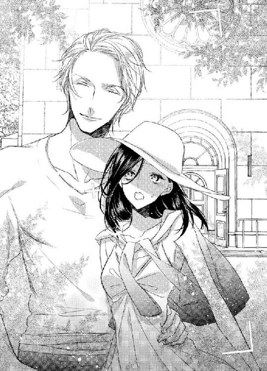
文句を言おうと思ったけれど、フレッドが「笑って」と言うから、そのチャンスを失う。
写真を撮り終えると、彼はすぐに離れてしまったが、手を回された場所が熱かった。
「さあ、それじゃラウンジへ行こう。我らのお姫様にスイーツを献上しなくちゃな」
教会を堪能すると、ホテルへ戻ってティーラウンジに入った。
ここもまた普通と違って、開放的なテラス席からは森が一望でき、風が抜けてゆく。
もちろん、スイーツも満足のいくものだった。朝食を食べたばかりなのに、食欲が湧いてしまう。
男性二人もケーキを頼み、ゆったりとしたティータイム。
ソファ席の座りは、男性二人が並び、私は一人。
これが一番問題のない座りね。
今見たばかりの教会の感想を口にし、明日からメアリを連れて案内する場所を話し合う。
騙し絵の飾ってある美術館があるとか、手作りのジャムを売っている店があるとか、二人は色々と調べているようだった。
「何せ、女性二人を案内するんだからね、退屈させないようにしないと」
「別荘でゆっくりするだけでも楽しいわよ？」
「せっかく休みをとって来たのに？」
「せっかくのお休みだから、ゆっくりしたいの」
「出歩くのは嫌？」
「いいえ、とても楽しいわ。でも、何げない日常を一緒に過ごすのも楽しいと思うの。そんな機会は少ないし」
メアリが来たら、私より彼女を優先させるでしょう？ とは言えなかった。色々語弊がありそうで。
「メアリがあちこち見て回りたいというのなら、それもいいけど。彼女だって長旅で疲れてるでしょうから、今夜はゆっくりさせてあげた方がいいわ。だから、もしよかったら、午後は夕飯の買いだしを......」
言いかけた時、携帯の着信音が響いた。
「失礼、私だ」
ジャックが片手を上げ、携帯電話を取り出す。
すぐに耳に当てないとこをみると、メールらしい。
自然に目を落とした画面を読み進めてゆくうちに、彼の顔が険しく歪む。
「どうした？」
隣に座っていたフレッドが覗き込もうとした時、今度はフレッドの携帯電話が鳴った。
「...っと、今度はこっちか」
フレッドの方は通話で、彼は立ち上がりながら電話に出た。
「アロウ、...マーガレット」
相手は伯母さんだわ。
会話がラウンジの邪魔になると察して、フレッドは会話しながらテラスの外へ出て行った。
「あなたの方は何だったの？ 困った顔をしてるわ」
残された私は、ジャックに声をかけた。
「メアリからだ」
「何時に着くか、連絡してきたの？」
「いや、一緒にいた友人が体調を崩したので、一人にできないから今夜は東京に泊まるらしい。到着は明日になると言ってきた」
「お友達って、イギリスの方？」
「ああ」
「それじゃ病院に行くのも大変ね」
「メアリは私達のように流暢に日本語が話せるわけじゃない。まだ少し不自由なんだ。もちろん、そこらのイギリス人よりはずっと上手く喋るが」
「心配なのね？」
「ああ」
「それじゃ、すぐに行ってあげないと」
心配して言ったのに、彼はキッとこちらを睨んだ。
「私がいない間にフレッドに甘えるつもりか」
「メアリを心配して言ったのよ。それに、私がフレッドとどうしたってあなたには関係ないでしょう」
善意を曲解されてムッとする。
「君とフレッドは似合わない」
「そういう話は止めて。今はメアリのことを話してるのよ」
「君がメアリの心配をする理由はないし、必要もない」
「あなたの妹さんで、フレッドの友人でしょう。それに、私達、これからお友達になるかもしれないわ」
「ではフレッドを諦める決心がついたということか？」
「ジャック」
「ああ、メアリは心細く思っていることだろう。フレッドに来て欲しいと思っているはずだ。私の代わりに彼にメアリのところへ行ってもらってもいいかも......」
「すまない、舞亜。午後は一人で過ごしてもらうことになるかもしれない」
またジャックと口論しなければならないのかとウンザリしていた時、電話で席を外していたフレッドが慌てた様子で戻ってきた。
「どうしたの？ フレッド」
「伯母さんが明日帰るから今日中に会いに来て欲しいと言うんだ。前に言ったろう？ ジャックにも挨拶したいから連れて来いと言うんだが......」
フレッドはちらりとジャックを見た。
「もちろん、突然のことだ。君には断る権利があるよ、ジャック」
彼は我が意を得たりという顔でにっこりと笑った。
「もちろん行くさ。伯母上は君にとって大切な方だろう？ 呼ばれたら挨拶に行くと約束していたじゃないか」
「ありがとう。......舞亜」
友人の許諾を受け、今度は私を見る。
「わかってるわ。いいのよ、行って来て。それに、今ジャックのところにメアリから連絡が入ったの。一緒にいたお友達が病気になったんですって。丁度いいから、伯母さんに会った後、彼女を見舞ってきたら？」
ジャックに先に言われるのがシャクだという気持ちもあったが、恋人であろう二人のためにはそれが一番いいと思ったから、私がそれを口にした。
「メアリか？ 彼女は大丈夫なのか？」
私がそれを口にしたことに驚いたのか、ジャックは少し困惑した表情だった。それがフレッドの不安を煽ったらしい。
「彼女も病気なのか？」
「いや......、メアリは大丈夫だが、友人は熱が出て、ホテルで休んでいるらしい。病人を置いてはいけないから、今日こちらへ来ることはできないという連絡だ」
「外国人が見知らぬ土地で病院に行くのは心細いと思うわ。二人が付いていてあげれば、きっと安心すると思うの」
「......そうだな」
「君も一緒に来るのか、舞亜？」
私が積極的に『行け』と言うので、ジャックは付いてくるつもりかと思ったのだろう。
「いいえ、私は行かないわ」
「本当に一人でここに残るつもりか」
「もう大人だもの。一晩一人で過ごすぐらい何でもないわ」
「付いて来たらいいじゃないか。東京には家があるのだろうし、ホテルを取ってもいい」
さっきはあんなに嫌な言い方をしてたのに、急に心配するようなことを言う。
やっぱり彼は本質的な優しい人なんだわ。
「ありがとう、ジャック。でも私は行かないわ」
「舞亜、すまない。なるべく早くに戻ってくるよ」
伯母さんからの呼び出しと、メアリの窮状で少しパニクっていたのか、そこにジャックがいるというのにフレッドは屈み込んで私の頬にキスした。
もちろん、それは妹に対する謝罪のキスだ。
でもジャックはそうは思わなかっただろう。
「いいのよ。そうと決まったら、ぐずぐずしてないですぐに別荘に戻りましょう。車で行くより電車で行った方が早いわね。丁度いいわ、ここで電車の時刻表を見せてもらいましょう。大きなホテルだから常備してると思うし、説明したらコンシェルジュが最適な方法を考えてくれるはずよ」
「そうだね。ここで待っててくれ。僕が訊いてくる」
フレッドはもう一度私にキスすると、すぐにフロントへ向かった。
「敵に手を差し伸べるのか？」
「メアリは敵じゃないわ」
フレッドがいなくなると、また彼がケンカを売る。今のキスを見られたからには、きっと何か言われるだろうと思っていたけど、ケンカなどしたくないのに。
「敵にならないと言うのか？」
「いい加減にして。外国で心細い思いをしている女性に必要なことをするのは当然でしょう。そんなひねくれた考え方をしないで」
「ひねくれた、だと？」
「そうでしょう。あなたの妹さんは今不安でいっぱいのはずよ。それなのに兄であるあなたに『すぐ来て』と言わないくらいの心遣いある、立派な女性よ。私が彼女に敬意をはらって、彼女に必要なものを贈るだけのことでしょう」
「君はどうするんだ？」
「私は残るわ。言っておくけど、あなたの妹さんに会いたくないとか、意地を張ってるわけじゃないわよ」
「ではどうして来ない？ フレッドの側を離れたくないんじゃないのか？」
「理由があるのよ。それに、行っても足手まといだわ」
あの広い別荘に一人で取り残されるのは、確かにちょっと心細い。
でも東京に一緒に行って伯母さんに会う危険はおかせない。
伯母さんに色々言われるのも嫌だったし、フレッドの立場も悪くなる。
でもこの面会が終われば、フレッドは安心して彼に私を妹だと紹介してくれるだろう。今まで言えなかった理由も含めて。
だとしたら、今日一日だけの我慢で済ませる方がいい。
「フレッドが来いと言わなかったからか？」
「彼は言わないわ」
「何故？ 私なら、恋人を山奥に一人残すなんて薄情なことはできない」
「フレッドは薄情なんかじゃないわ。事情があるって言ってるでしょう」
恋人でもないのよ。
「舞亜、ジャック。電車の時間を聞いてきた。すぐに戻ろう」
「フレッド、私が言うことではないかも知れないが、舞亜も東京に連れて行くべきじゃないのか？ 伯母上には、我々の友人だと紹介すれば同席もさせられるだろう」
「ジャック」
「でなければ、メアリのホテルで待たせていてもいい。東京の彼女の家に戻しても」
優しい人。でもその優しさを見せるタイミングが悪い。
「舞亜、どうする？」
「お祖父ちゃん達は旅行中よ。家には誰もいないわ。それに、せっかく軽井沢に来たのに、戻りたくないわ。どうせ明日にはメアリを連れて戻って来るでしょう？ トンボ帰りなら、別荘でゆっくり過ごしてる方が楽よ」
フレッドは、私の真意がわかっている。
東京で、万が一にも伯母さんに会ってしまったら、いいことは何もない。
フレッドが日本で仕事をすることにも文句を付けられるだろうし、もしかしたら私が彼をそそのかしたと思うかも知れない。
『滞在する客ならば歓迎するが、この家の財産を分けてもらえるとは思わないで』と母に言った人だもの。フレッドからお金を引き出そうとしてるとか、妹として認めさせるために工作してると勘ぐられるかも。
それを、ジャックの目の前で言われるのも嫌だった。
彼にそんな女とみられたくはないし、正義感の強い彼がもしもそのことで伯母さんとケンカになったら、事はもっと大きくなってしまう。
「わかった。夜には戻るよ。それまで一人で出歩いちゃいけないよ。携帯電話も肌身離さず持ってるんだよ。連絡入れるから」
「もう子供じゃないのよ」
「お前が大切だから言ってるんだ。僕の言うことは聞きなさい」
「......はい」
「さあ行こう、ジャック。メアリに、今日中にそちらへ行くとメールしてあげてくれ。それと、ホテルの場所も詳しく聞いて」
「ああ、聞いてある」
電車のことを聞きに行ったついでに会計も済ませていたのか、フレッドは私達の先に立って車へ向かった。
ジャックが軽口を叩けないほど真剣な面持ちで......。
別荘へ私を送り届けると、二人はスーツに着替えて出て行った。
フレッドは私を一人残すことが心苦しいのか、もうすっかりジャックの存在を忘れて私を抱き締め、何度も気を付けるようにと言った。
その背後で、彼がどんな顔をしているかも気づかずに。
慌ただしく二人が出て行くと、広い別荘に一人。
急に外を渡る風の音さえ気持ちいいものではなくなってしまい、すぐにここへ残ると言ったことを後悔していた。
「熊......、出ないわよね？」
やっぱり東京へ付いて行けばよかったかしら？
誰もいなくても、自宅の方が安心できる。
でももう遅いわ。
一人でここを出て行けば、それもまたフレッドを心配させることになるだろう。
まず家中のカギを掛け、気分を変えるために昼間からバスを使った。
陽の光の差し込むバスルームで、花の香りのするお湯にゆったり浸かると、幾らか気分はよくなった。
クヨクヨしても仕方がない。
きっと夜には二人は戻ってくるだろうし、それまで一人を満喫すればいいだけよ。
......本当に夜に戻って来るかしら？
メアリは大丈夫だとしても、彼女は病気のお友達を置いてこられるかしら？ そんな彼女を、二人は置いてこられるかしら？
いいえ、大丈夫よ。
お友達は病院へ入院させてもいいし、ジャックが残ればフレッドは帰ってこられるわ。
でも、彼が私とフレッドを二人きりにさせないかもしれない。
だとしたら......。
「考えても仕方がないわ。なるようになる、よ」
いまさら言っても仕方がないけれど、伯母さんが日本にさえ来ていなければ、このバカンスはもっと楽しいものになっていただろう。
フレッドは私をちゃんと妹だと紹介してくれて、彼に辛く当たられることもなかった。
いいえ、彼等を呼び出したりしなければ、今日にも説明してくれていたかもしれない。
メアリのところにも一緒に行って、東京の夜を楽しむこともできたかも。
人を恨むのはいけないことだけれど、ちょっとだけ恨んでしまう。
東京なら、時間を潰すものはいっぱいあった。けれど山奥の山荘では......。
私は別荘の中を歩き回って、何とか暇を潰せそうなものを探した。
書庫には本があったけれど、全部英語。読めないわけではないけれど、読みたいという気持ちは起こさせない。
幸いアルバムがあったので、それを取り出して広げた。
でも、仲良さそうに写る父と兄だけの写真は、寂しさを募らせるだけだった。
家族の写真なのに、私はここに入れない。母さんが生きていたら、ここには四人が笑って写っていたはずなのに、という思いが湧いて。
テレビを点けてもみたが、広い部屋が空しく感じるだけだった。
実家では、必ず祖父か祖母がいた。一人暮らしをしたことはなかったので、『孤独』というものを持て余してしまう。
結局、私はキッチンに立った。
メアリが来るのなら、歓迎の意を込めて料理でもてなそうと思って。
万が一彼女が今夜やって来なかったとしてもいいように、煮込み料理にした。
家の中にあった食材で、チキンのクリーム煮込みだ。
バターをたっぷり使って、レモンを利かせた母の得意料理だったこれなら、きっとフレッドも喜ぶだろう。
作りながら自分の昼食をつまみ食いで済ませ、夜を待った。
みんながこの別荘に戻ってきて、全てが明らかになってから迎える楽しい時間を。
だが......。
料理を終え、ついでにと作ったデザート用のケーキも作り終えてしまった時、私の悪い予感が的中してしまった。
『メアリの友人は盲腸だったよ。手術をすることになったんで、日本の知り合いを呼ぶことになった。今夜は東京に泊まるよ』
というフレッドの電話で。
『もし不安だったらタクシーを呼んで東京に戻ってきなさい』
「いいえ、大丈夫よ。それで？ メアリは？」
『彼女も驚いていたが、私達が来て安心したようだ。お友達の家族には昨日連絡を入れていて、明日には母親が到着する。そうしたら戻るよ』
それは何時頃？ 訊きたかったけれど、訊いたら待ち望んでいると知られてしまうから。
「じゃ、明日を楽しみにしてるわ」
『舞亜。こんなことになって本当にすまない』
「いいのよ。バカンスは明日からやり直せばいいだけよ。それにメアリはフレッドにとって大切な人なんでしょう？」
フレッドは一瞬間を置いてから、静かに言った。
『愛してる。だが、お前と比べることはできないよ、わかるだろう？ 二人とも大切だ』
母さんと家の板挟みになった父さん。
家族と恋人を選び切れなかった父さん。
『僕は二人とも手に入れたいんだ』
「欲張りね」
『お前が僕を必要としないと言ったら、手を放すさ。それまでは二人とも同等だ』
「はい、はい。でも今はメアリのことだけ考えていていいわ。私が許すから」
『そうするよ。また後で電話を......』
「私のことはいいの。もうきっと寝てしまうから」
『わかった。じゃ、おやすみ』
「おやすみなさい」
電話を切ると、静寂がまたのしかかって来る。
一人きりで過ごさねばならないということと、せっかく会えた兄さんが、もう他の女性のものになってしまうという寂しさが、より孤独感を募らせた。
「......寂しいな」
と声に出してしまうほど。
夕飯も終えてしまうと、何もすることがないので本当に早く寝ることにした。
ドレスのようなネグリジェは、兄とはいえ殿方のいる場所で眠るなら、見られてもいいものをと選んだブルーのものだった。
人前に出る時用にガウンも持っては来たけれど、今夜は必要ないだろう。
与えられた二階の部屋には大きな窓があったので、ホットミルクにハチミツとショウガを入れたものを部屋に持って行き、眠くなるまで星を眺めて過ごす。
東京の空は、夜になっても雲がある日は夕焼けみたいにぼんやりと赤かった。
中学の時友達に言ったら、都心のネオンが反射しているのだと教えられた。省エネ、省エネってうるさいのに、空が明るくなるほど明かりを点けるってバカみたいと思ったものだ。
カフェや喫茶店のクーラーにしてもそうだわ。
かき氷を出すのに、座ってるだけで鳥肌が立つほど寒くしてどうするのかしら？
でもそういう齟齬で、世界は成り立っているのよ。傍から見ればバカみたいと思うことや、どうしてもっといい方法を選ばないのかということで。
わかんないけど、多分。
見上げる空は真っ暗で、月が明るく輝いていた。
星は小さなダイヤモンドをちりばめたよう。
星が瞬いて見えるのは、大気の屈折のせいだと聞いたことがあるけれど、そんな科学的なことなどどうでもいいと思うくらい美しかった。
夜は、暗く静かなものなのだわ。
怖いけれどとても、とても美しいもの。
そんなことを考えていると、車のエンジン音が聞こえてきた。
こんなところに車？
いいえ、こんなところだから車なのかも知れないけれど、こんな時間に？ 近くの別荘の住人かしら？
私はカップを置いて、玄関が見える方の窓へ向かった。
「タクシーだわ」
車のライトの上にボンボリが見える。
「うちに来る」
エンジン音は光と共にどんどん近づき、国道を離れて真っすぐにこちらへ近づいて来ると、玄関の前で停車した。
玄関の明かりの中、一人の男性の姿が見える。
その髪は、明かりに透けて茶に見えた。日本人の髪の色ではない。
「フレッドだわ！」
大丈夫だと言ったのに、一人で戻ってきてくれたんだわ。
私は必要ないと思っていたガウンを羽織り、慌てて部屋を出た。
嬉しい、よかった。
帰って来なくてもいいと言ったけれど、心細かったの。寂しかったの。
階段を駆け降り、カギを開けようとする音が聞こえる玄関の扉を内側から開ける。
「フレッド！ 帰って......」
喜びに抱き着こうとしていた私は、そこに立っていた人物を見て身体を硬くした。
「フレッドでなくて悪かったな」
「......どうしてあなたが」
帰って来たのはフレッドではなかった。
ジャックの方だった。
「残念そうだな」
「メアリは？ 妹さんを一人で置いてきたの？ 二人は後から来るの？」
タクシーから降りた人物は一人に見えたけれど、後ろにいるのかと、彼の肩越しに暗闇を覗き込む。
けれど人影などなかった。
彼を運んできたタクシーも、もう赤いテールランプすら見えない。
「メアリはどうしても抜けられない用事ができたからと、フレッドに頼んできた。今夜は二人で東京だ」
「抜けられない用事って......」
もしかして、私を心配してくれたのかと、淡い期待を抱いた。
だが彼の目はそうではないことを物語っていた。
「君と、フレッド抜きで話をしたかったんだ」
「ジャック......」
「とにかく、家に入れてくれ熱いコーヒーの一杯も淹れてくれるとありがたいな」
「あ、ごめんなさい。入って」
私は扉から離れ、キッチンに向かった。
コーヒーメーカーのスイッチを入れ、カップの用意をしている間に、ジャックはキッチンへやってきた。
「今持って行くわ」
「時間がもったいない。話を始めよう」
「......いいわ」
「君はフレッドとは結婚できない」
突然何を言い出すのかと彼を見ると、ジャックは腕を組み、戸口によりかかってこちらを見ていた。
ネクタイを取り、くつろぐためにワイシャツのボタンを一つ二つ外し襟を開いた姿はセクシーだった。
でも今は彼の色気を堪能している場合ではない。
「フレッドの伯母上とお会いして、君達のことがわかった」
「......え？」
「マダムマーガレットが君の名を口にした」
「伯母さんが？」
あの人は...、身内ではないジャックの前でも私を悪し様に言ったの？
「そう。全てわかったのね」
そうか。だからフレッドは妹のためにジャックを寄越してくれたのね。
「いや、全てではない。会話が少し聞こえた程度だ。マダムマーガレットは君に会うなと言っていた。つまり、君は彼の身内から結婚の反対を受けているんだ」
言いながら、彼は近づいてきた。
「だから東京行きを拒んだのだろう？ 伯母上に顔を見られたら、フレッドが困ると思って」
それは半分正しいけれど、半分間違っている。
「家族の反対を受けた結婚は幸福ではない。彼の家は貴族で、イギリスではまだ貴族という名に縛られる者も多い。フレッドはそんなことを気にする男ではないが、伯母上は違う。骨董品的なお考えをお持ちのようだ。外国の、身分も何も持たない女性を受け入れることは許さないだろう」
見当違いのその言葉が、母を思い出させる。
確かにその通りだったわ。伯母さんはそういう人だった。そのせいで母は私を連れて日本へ戻らなければならなかった。
「図星のようだな」
私の見せた暗い顔を誤解して、彼は言った。
「フレッドとは別れるんだ。それが君のためでもある」
「違うわ」
「違わない。伯母上の言葉に逆らえないから、君は逃げ回っているんだろう」
「逃げるだなんて」
「じゃあ何故東京に来なかった」
「それは......」
もう言っていいの？
それともまだ言ってはいけないの？
伯母さんとの面談は終わったけれど、まだ伯母さんは東京にいる。その微妙な状況が、私に説明をためらわせた。
「フレッドにはメアリの方がお似合いだ。フレッドは家を捨てられない。君のことはすぐに忘れる」
「フレッドはそんな人じゃないわ」
一族に反対されても、こうして私に会いに来てくれる兄を侮辱された気がして、強く反発する。それがまた誤解を生むと考えずに。
「君とフレッドが電話をしているのも聞いた」
「あなたは盗み聞きの名人ね」
「何だと？」
「もう私達のことに口を出さないで。明日フレッドが戻ってきたら、全てわかるわ。後でわかることを今話しても仕方がないでしょう」
「君がフレッドの手を放せば、彼は君と別れると言っていた。君が彼を縛ってるんだ」
「そんな言い方しないで」
コーヒーメーカーから出来上がりを告げる音が響く。
「コーヒーが入ったわ。リビングで待ってて」
彼に背を向け、コーヒーを注ぎ、自分の分と一緒にトレイに載せてリビングに運ぶ。
先にリビングへ行った彼は、コーヒーを頼んだくせに、手にウイスキーのグラスを持っていた。ホームバーから持ってきたらしい。
しかもてっきりテーブルを挟んで向かい側に座ると思ったのに、彼はソファに腰を下ろした私の隣に座った。
「どうしてこちらに座るの」
「真剣な話し合いだからだ」
「お酒はやめて。話をするなら」
「いいだろう」
彼はウイスキーの入ったグラスを置き、コーヒーのカップに手を伸ばすと、口だけつけてすぐにカップを置き、こちらに向き直った。
真っすぐな視線を受け、自分が夜着にガウンだけの格好であることを思い出し、慌てて前をしっかりと合わせる。
「フレッドならば、そんな格好でもいいと思っていたわけだ」
「話は、明日フレッドが戻ってからにしましょう。今夜はコーヒーを飲んだら、お互い自分の部屋へ戻って休むのよ」
その説明も含めて、明日にしたかった。
「いいや、フレッドが戻る前に決着をつけたい」
「フレッドがいなければ話はできないわ」
「どうして彼がいいんだ？ 友人ながら、彼が女性に二股をかけるような人間とは思わなかった。誠実で、メアリに好意を寄せていると信じていた。だが、一方で、君という存在を大切にして憚らない。もしも私が......、もし私だったら、恋人にそんな態度は取らない」
「フレッドを悪く言わないで」
「まだ彼をかばうのか？」
「かばうとか、そういう問題じゃないの。私達はあなたが思っているような関係じゃないわ」
「君は東京で、あのグラスを恋人に贈ると言った。そしてそれを受け取ったのはフレッドだ。そして私の前で、大切な人からの贈り物だと言った」
「あれは......。恋人に贈るといえばあなたが譲ってくれると思ったから」
言い訳した途端、彼の目がきつくなる。
「やはりあのグラスは君からの贈り物だったんだな」
引っかけられたと思ったが、ジャックはあのグラスを手にとって見てるのだから、ここで嘘を言っても仕方がない。
「ええ、そうよ。でも......」
「彼とは恋人ではない、と」
「......ええ」
「では愛人か？」
飛び出したあまりの言葉に声を失う。
愛人？
この人は私がそんな女だと思っているの？
「結婚はできないから、彼から金銭だけでも引き出そうというのか？」
「失礼なこと言わないで！」
「だったら、フレッド以外の男にしろ」
彼は突然私の腕を掴んだ。
「ジャック！」
「君が彼から受け取ろうとしていたものを、私がやろう。だから彼とは別れるんだ」
「やめて、手を放して」
「東京で出会った時の君は、もっと堂々としていた。快活で、聡明で。だがここへ来てからは、フレッドに媚び、隠し事をしている。それはフレッドのせいだろう」
「媚び......」
「彼はノーブルな男だ。だがそれだけに道を外すことはできない。君の存在は彼を苦しめるだけになるだろう」
「酷いわ...！」
認められなかった私達母子。
ジャックが言っているのは私がフレッドの恋人として、という意味なのに、母さんと私のことが重なってしまう。
私という妹がいたら、フレッドの重荷になるのだと言われたようで、思わず涙が滲む。
だがジャックは私の涙などおかまいなしに言葉を続けた。
「君も彼といると不幸になるだけだ。君は彼と別れて、別の人生を見つけるべきだ」
「もうやめて」
腕を振り払い声を上げる。
「私とフレッドのことに口出ししないで。あなたには関係ないでしょう。私達はずっと上手くやっていたし、これからもずっと家族よ」
「認められないのに家族か？」
わかっている。
彼が、私をフレッドの愛人だと思い込んでの一言なのだと。頭では理解している。
けれど、その言葉は私の心を引き裂いた。
『認められないのに家族か』という言葉が、深く胸に刺さった。
言葉をなくし、ついに涙を零してしまった私に、彼はその表情を和らげた。
「可哀想に......」
大きな手が、頬に触れる。
「あの店で出会った時の君は輝いていた。そんな涙を流すことなど考えられないくらいに」
この涙はあなたが流させているのよ。
私の心の傷を抉り、私を悪い女と扱うあなたが。
見ず知らずの人の言葉なら、きっとここまで響かなかった。自分の中に、ジャックに気に入られたい、彼が好きと思う気持ちがあるから、言葉の刃が私を苦しめるのよ。
「フレッドのことは忘れるんだ」
ジャックは私を強く抱き締めた。
「君を泣かせる男のことなど忘れろ。彼はメアリの恋人だ」
「そんなこと......」
わかってるわ、でもこの涙とは関係ないことよ。
「フレッドは...私にとって......」
しゃくりあげながら、できる限りの説明をしようとしたが、近づいてくるジャックの顔に動きが止まる。
「私にすればいい」
彼の青い瞳が私を見つめる。
「私を相手にすれば、メアリはフレッドを手に入れられるし、君は安定した生活を手に入れられる。私は自分の恋人を隠したりしない。君も、男と二人きりだというのにそんな格好のままで、私を誘惑したいんだろう？」
彼の言葉が、優しさか暴言か、考える暇もなく、その唇が唇に重なる。
唇が私の唇を塞いだ。
「......ン」
腕を捕らえたまま、彼は私をソファへ押し倒した。
言葉を取り上げたキスはそのまま深い口づけに変わり、彼の舌が私の口の中にさし入れられる。
力強いが乱暴ではない動きで、舌が口腔を探る。
キスは、したことがあった。
学生時代のボーイフレンドと。
でもそれはこんな深く激しいものではなかった。求められるだけで身体が熱くなるような、こんなキスではなかった。
「や......、いや...、やめて...っ！」
必死に彼を押し戻し、抵抗の声を上げる。
けれど、大きな彼の身体の前で、私の抵抗など微々たるもの。
手首を捕らえられ、縫い留められるようにソファに押し付けられ。
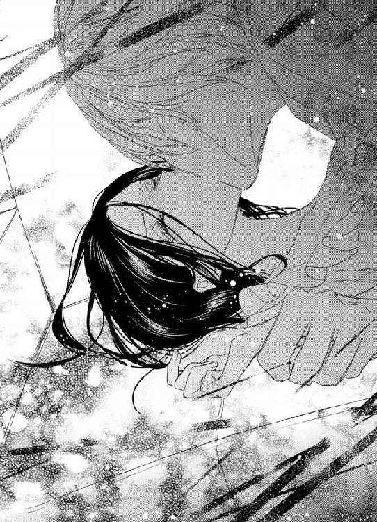
「ジャック！」
青い瞳。
一瞬、東京で出会った時の優しい彼の笑顔が過る。現実には、怖いくらい真剣で、険しい眼差しをした顔なのに。
「フレッドはメアリを選ぶ」
キスの後に言うのは私への気持ちではないのに、ジャックのキスだと思うと嫌悪だけではないものが生まれ、心を軋ませる。
「君がフレッドを手放すから」
彼のことは、信頼していた。
フレッドが友人に、共同経営者に選んだ人だ。出会った時の礼儀正しさと、私のことを嫌っていても根本的なところで冷たくしきれない。
夜着にガウン一枚で迎えに出たのはフレッドだと思ったからだが、そのまま部屋に下がらず彼と二人でいたのは、そんな人だから間違いはないと信じていたからだ。
「君は美しい」
だが、彼は私の信頼を裏切った。
『男』の目をして......。
初めて出会った時から、ジャックには心惹かれていた。
外見がよいというだけではない。もしそれだけなら、目を留めるだけで、すぐに忘れてしまっただろう。まるで雑誌でも眺めたように。
でも彼が声をかけてきたから、話をして、彼の内面を知ったから、強く心に残ってしまった。
もう二度と会うはずのない人だから、忘れなければと努力するほどに。
この別荘へやってきて、彼と再会した時、私は心から喜んだ。
切れたと思った糸が繋がったことに、素直に感動した。
彼が私のことを誤解していると知っても、妹のライバルと思って冷たく接するようになっても。
何者でもない私に見せた顔こそが本物で、冷たくしきれない彼が真実の姿なのだろう。だから、事実がわかればきっとこの酷い仕打ちは終わる、それまでの辛抱だ。
きっと事実を知れば、彼は恐縮して非礼を詫びてくれるだろう。
だが、もう戻らない。
襲いかかってきた彼にそれを強く感じた。
「やめて......」
押し倒してキスしただけなら、まだジョークと笑える。驚かさないでと怒ることができる。それほど子供ではないから、人生の一大事とまでは言わずに済む。
でも、彼の手は私のガウンに触れた。
前を開け、薄い夜着の上から、私の胸を掴んだ。
「彼の前では下着も付けないのか」
一人でいた。
もう休むつもりだった。
だから、夜着の下には何も付けていなかった。
掴んだ感触で、それを知った彼は、胸を包むように捕らえ、指で小さな突起を探り当てた。
「や...っ」
触れられて、羞恥に顔が熱くなる。
そんなところを他人に触られるなんて、初めてだった。
指が、小さく膨らんだ場所の中心を、輪を描くように押し込んで来る。
認めたくないのに、ゾクリとした快感が足から這い上る。
単なる暴漢ならば、これは暴力としか思わなかっただろう。でも相手はジャックなのだ。自分が、仄かに心を寄せていた相手なのだ。
好意があるから、身体が応えてしまう。
それを悟られたくなくて、身体を捩ってその手から逃れようとする。
だが、彼は逃してくれなかった。
「やめて......、お願い。あなたは間違ってる」
このまま暴行を受けるくらいなら、『言えなかった』事情を含めて彼に全てを打ち明けてしまった方がいい。
そう判断して、私は終にそれを語ることにした。
「あなたは間違ってるのよ」
ジャックは私の言葉を受けて、胸に置いていた手を離し、身体を起こした。
よかった、思いとどまってくれた。
彼はやはり聞く耳を持つ人なのだわ。
そんな安堵はつかの間だった。
「酒には弱いんだったな」
彼はテーブルの上に置いてあった飲みかけのウイスキーのグラスを取ると、それを口に含んでふたたび私のうえに重なった。
「...や...っ、ン...グ...ッ」
合わせた唇の間から、濃いアルコールの味が口いっぱいに広がる。
お酒なんて、ワインをたしなむ程度の私にとって、ストレートのウイスキーは、辛いだけのもの。
味などわからぬうちに、喉を焼くような熱が流し込まれてくる。
飲むものか、と思っても、キスで唇を塞がれたままで呼吸もできず、暫くすると仕方なく嚥下してしまう。
途端に、喉から胃まで、ウイスキーが通った道が熱く焼ける。
「...ゴホッ...」
咳き込んで力が抜けた隙に、彼はまた私の身体に手を伸ばした。
前開きのネグリジェのボタンが外される。
「やめて......！」
その手を掴んで止めようとしたけれど、彼は私の手などものともせずにどんどん外していってしまう。
お腹のあたりまでボタンが外されると、今度は止めようとしていた私の手を掴み、指を組むようにして動きを封じた。
恋人繋ぎ。二人の間に恋があれば嬉しくなる繋ぎ方だが、今はただ動きを封じるためのものでしかない。
でもこれで手が使えないのなら、と思っていたら、彼は私の胸に顔を埋め、ネグリジェの端を口で咥えた。
「いやっ！」
獣のように、布の端を咥えて彼が首を振ると胸が大きく開く。
「綺麗な胸だ。確かに、魅了されるな」
「あ......っ！」
言うなり、彼は私の胸に口づけた。
熱い舌が乳房の周囲を舐める。
柔らかな丘は仰向けになっているせいで崩れていたが、それでもまだ十分な膨らみを保っていた。
その丘を、舌が上ってゆく。
生き物が這ってゆくようにゆるゆると動いて、頂点を咥える。
「あ......」
ピリッ、と痺れが走り、鳥肌が立った。
口の中で、舌が先を転がす。もう一方の胸も、指が先を弄び、撫で、揉む。その度に身体から力が抜けてゆく。
脚の間、女性の中心が疼く。
彼の指に煽られる。
さっき飲まされたアルコールが身体を熱くしていたが、彼の愛撫が更に身体を熱くする。
目眩がした。
全身の神経が過敏になり、肌が痛い。
だめ、このままでは押し流されてしまう。暴力に負けた上、彼に応えてしまうふしだらな女にされてしまう。
「やめて...、あなたは誤解して......」
「誤解などしていない。本気で君がフレッドの金を狙っているとは思ってない」
ああ、違うの。
それじゃないの。
「だが、それも魅力の一つだろう？」
「違......」
絡んでいた指が離れる。
離れれば指が不埒なことをするとわかっているから、解けないように握り締める。
舌が胸を濡らし、快感が力を奪い、彼の手が自由になってしまう。
長いネグリジェの裾をたくしあげ、手は脚に触れた。
ふくらはぎを持ち上げ、私を完全にソファの上へ横たえようとする。
彼を蹴ってでも阻もうとしたのに、内腿を撫で上げられただけで、また力が抜ける。
彼を遠ざけるか、脚を閉じるか、迷っている間に手が奥へ進む。
「いや...っ！」
下着の上から、彼が私の秘部に触れた。
指の感触が、布の上からそこを撫でる。
そして、下着の横合いから中へ指が入り込む。
ヒクッと、自分の意思ではなく、そこが痙攣する。
「や......、あ...っ」
指は襞を探り、中心に当てる。
「ひ...っ」
だが奥まで差し込むことはせず、そこから溢れる蜜を確かめただけだった。撫でるように湿った場所を彷徨う。
強い力ではなく、そっと撫でるようなその動きは恐怖だけでなくゾクゾクする快感も生み出した。
溢れてしまう。
身体の中から、彼のための露が湧いてくる。
はしたないことだとわかっているのに、自分の上にいるのがジャックだと思うと、拒み切れない。
彼が......、好きだから。
初めて出会った時から『無理』とか『あり得ない』という言葉でごまかし続けた気持ちが、身体に触れられて溢れ出てしまう。
優しかった彼も、意地の悪い彼も、ずっと私の気持ちを惹きつけていた。
ええ、認めるわ。もうとっくに私はジャックに心を奪われていた。
彼がどんなに意地悪を言っても、憎むことは出来なかった。いい人だと、正直で優しい人だと、何度も言い訳した。
誤解が解ければ、またあの魅力的な笑みを向けてもらえるだろうと、その時を待っていた。
彼が熱っぽい目で私を見てくれる日を夢見ていた。
私は、彼に抱かれたかった。その気持ちを僅かながら抱いていた。
でもこんな形ではなかった。
「いや......」
好きな人に触れられて、身体が反応する。
凶行に走る男を押しのける一方で、恋した人の手に身体が燃える。
ジャックは、女性の身体を扱うことに慣れているようだった。でも私は男の人に触れられるは初めてだった。
あっと言う間に籠絡されて、力がどんどん抜けてゆく。
「あ......、や...っ」
胸は既に彼の玩具と化していた。大きな手に弄ばれ、膨らみを揉みしだかれる。
舌は胸の先だけを嬲り、下に伸びた手は下生えを探って小さな蕾に到達した。
「あ......っ！」
指で強く押され、声が上がる。
「いや、そこは...っ」
今までとは違う感覚。
性的な痺れと快感が一瞬にして全身を走り抜ける。
「気持ちいいか？」
酷い人。
「もう蜜が溢れている」
私を身持ちの悪い女のように言う。
あなただから、という真実も知らないで。
「ジャック...、ジャック......。フレッドは...」
「今その名を聞きたくない」
説明しようとすると、彼は私の乳首を甘く噛んだ。
「い...っ」
でも言わなければ、真実を告げないと彼は私を手に入れてしまう。
私の望まない形で。
「フレッドは、彼は私の兄なの...。私達兄妹なのよ......」
快楽に負けないように必死にその言葉を口にした。
ここに伯母さんはいないのだもの。もう言ってしまってもいいわ、と。事実を知れば、彼は手を止めてくる。謝罪してくれる。そうしたら新たな関係を築くことができる。
けれど、彼は私の目を見て唇を歪めるように笑っただけだった。
「日本人の君がどうやって彼の妹になれるんだい？ ヘタな嘘だ」
信じてもらえなかった。
ショックで、抵抗の力が抜ける。
彼の行動を止める最後の手立ては消えてしまったのだ。
「......あッ！」
指が、中に入る。
「もうくだらないことを口にしなくていい」
中で動き、十分な潤いがあることを確かめると引き抜かれた。
「いや...っ」
露になった胸を、また彼が撫で、キスする。
ゴソゴソと音がして、ジャックは前を開けた。
ズボンの中から、彼の性器が取り出される。
現れた男性器を目にし、寒気がした。見たことのないグロテスクなものから目を逸らし、
「やめて」と繰り返す。
「おとなしくしておいで」
言いながら彼は私の脚を持ち上げた。
「いやっ」
彼が何をしようとしているかがわかって、私は脚をバタつかせた。
「それはいやっ！ 私は...ン......」
キスが唇を塞ぐ。
手が、下へ伸びる。
下着を脱がされていなかった。だからまだ安心していた。なのに彼は私の脚を抱えると、下着を横へずらし、身につけさせたまま取り出したばかりのものをあてがった。
「ンン...やぁ......」
「君は魅力的だ。フレッドにはもったいないほど」
どんなに優しい言葉を投げかけられても、恐怖は消えなかった。
「いやよ、いや。絶対にいや...っ！」
ジャクの逞しい胸を拳で叩き、狂ったように暴れる私に彼は身体を進めた。
「いやぁ......ぁ...っ。イッ...痛......」
多少受け入れる心があっても、十分に濡らされても、痛みはあった。私は初めてで、身体の大きな彼はそれを知らず、これが合意の行為ではなかったから。
「い......」
涙が溢れる。
快感よりも先に痛みが走る。
身体の痛みじゃない、心の痛み。その痛みが、私から抵抗を奪った。暴れるのを止め、腕はだらりと垂れる。
彼は、私を汚すことを目的にしている。私が欲しいわけでも、愛しているわけでもない。彼にとって、私はフレッドの愛人で、妹の恋のための障害で、これはそれを取り除くための行為でしかない。
それが悔しくて悲しい。
「私を受け入れる気になったね？」
彼は私の態度をそんなふうに受け取った。
「私も悪くはない。私を相手に選んでもいいと思うようになるさ」
ジャックは何度も突き上げ、無理に自分を収めさせようとした。
その度身体がずり上がってゆく。
感じることもできたが、私は唇を噛んでそれに耐えた。
とても難しいことだったけれど......。
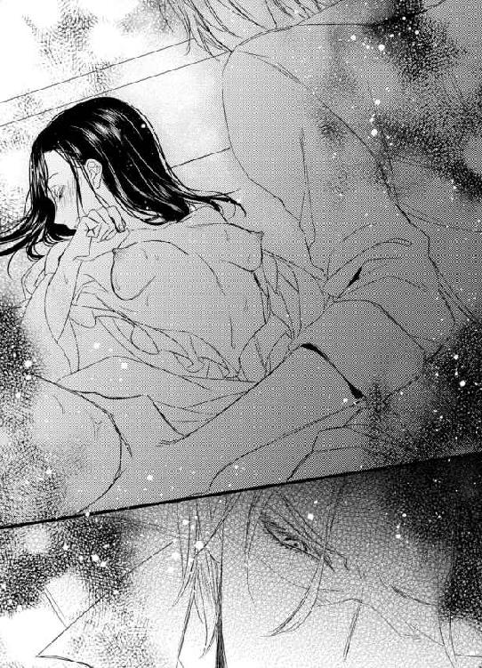
勝ち誇った笑みを浮かべ、彼が繋がったまま私の髪を撫でた。
痛みと悔しさと悲しみで何も言えず、ただぼんやりと彼の目を見つめる。この人は、本当にそうなると思っているのかしら。こんなことをして私が彼を選ぶと。
「感じてるね、よく濡れてる。気持ちが変わるのは別に悪いことでは......」
艶めいて笑っていたジャックがギクリとした様子で顔を強ばらせた。私の髪を撫でた彼の指が赤く染まっていたから。
「何だこれは...、君はどこか怪我を...」
彼は驚いたように身体を起こし、私達が繋がっている場所を見た。
「痛...ッ」
中に残ったまま動かれて、痛みが走る。
「舞亜、君は......。フレッドはまだ君に......」
困惑した表情。
彼は、破瓜の血で私が処女であることを知ったのだ。彼がいい気になって『濡れている』と言ったものの正体が、私の純潔を奪った血だと。
「舞亜」
何も言えずにいる私を、彼は強く抱き締めた。そのせいでまた痛みが走る。
「君は......」
優しく頬にキスをくれたけれど、それは私の涙も痛みも止めることはできなかった。
「離して......」
これで彼の凶行が止まる。
これ以上のことはされない。
でも、『これ以上』って、私に何が残っているの？
はしたない女だと思われて、力ずくで貫かれた。愛もなく踏み躙られた心と身体。もうボロボロだわ。
「私から離れて......。もう満足したでしょう？ それともまだするの？ 私はもう痛みしか感じないのに......」
「舞亜」
「それでもいいなら好きにするといいわ......」
ジャックは眉間に皺を寄せ、そっと私から離れた。
繋がっていた場所から、ずるりと彼が引き抜かれる。
それから、彼は私を抱き上げた。
「放って...おいて......」
はだけたガウンで私の身体を包んで抱き上げると、そのままバスルームへ走った。
人形のようにぐったりとする私から服も下着も取り去り、空っぽのバスタブへ横たえた。
「すまない。君が...、初めてとは知らなかった。もし知っていればこんな愚かなことはしなかった、誓って」
でももうしてしまったわ。
時間は巻き戻すことはできない。
私はもう愛する人と初めての夜を過ごすことはできないのだ。
自分の服を整え、ぬるいお湯を張り、彼はもう一度私を抱き締めた。
「痛むか？ 湯は熱くないか？」
心から心配してくれてるのがわかっても、虚ろな心には響かない。
「行って......」
「舞亜」
「もう行って、私に触らないで。もう......」
口を開くと涙が零れる。
裸を見られているのに、隠す気にもなれない。
「舞亜」
「行って」
慰めようと伸びた手に向かってもう一度言うと、彼は黙って立ち上がり、バスルームから出て行った。
「シット...」
舌打ちする彼の声が聞こえる。
失敗した、と思ってるのね。力ずくで私を抱いて、私が応えて彼に鞍替えして、フレッドはメアリの手を取る。
本当にそうなると思っていたという証拠。
「う......、うぅ......」
涙が止まらなかった。
最低のバカンスだわ。
そして、最低の恋だわ、と......。
長く湯に浸かり、痛みが和らいでから、バスルームを出た。
下着もネグリジェも血塗れというほどではないけれど、それとわかるほど汚れていたので、バスタオルを巻いただけで部屋へ戻った。
汚れたものはそこに置いてはおけないので、丸めて部屋へ持って戻った。洗濯をするべきなのだろうけれど、その気力もなくて、服を持ってきた圧縮袋の中に突っ込んでトランクの一番下へ隠した。
新しいネグリジェと下着に着替えベッドに入ると、お酒も入っていたせいですぐに眠ってしまった。
起きていたくなかった。
何も考えたくなかった。
そんなもの、後でいいわ。考えなきゃならないのはわかっているけれど、今考えると心が潰れてしまいそう。
今夜、もう彼は何もしてこないだろう。もしこれ以上何かしようとするような卑劣な人だったら、その方がいい。彼を心から嫌いになれる。
私が処女だと知って、すぐに離れてくれたことが、ジャックを嫌いにさせてくれなかった。
よくは知らないけれど、その最中の男性が行為を中断するには努力が必要らしい。なのに彼はそれを即座に実行し、私をバスルームへ運んでくれたのだ。
私を奈落の底へ落としこむくせに、必死にそこから助け出す。
いい人なの？
悪い人なの？
わからない。わかっているのは、彼は私より妹さんの方が大切ってことだけ。
ただ涙だけがとめどなく溢れて、流れてゆく。涙腺が壊れたみたいに。
眠りは浅く、何度か目が覚めた。
まだ、彼が自分の上にいるような気がして、身体の中に彼が残っているようで。枕元の暗闇の中、ジャックが私を心配そうに見下ろしている夢も見た。
時にはそれが亡くなった母になることもあった。
泥のように眠り、しっかりと目が覚めたのは、目覚まし時計の音でだ。
毎朝朝食を作るつもりだったので、ケータイのアラームをセットしていたのだ。
でも私はベッドから起きなかった。
食欲もなかったし、ジャックのために朝食を作ってあげる気持ちにはなれなかった。どんな顔をして彼に会えばいいのかもわからない。
ぐずぐずとベッドの中で寝返りを打っていると、ノックの音がした。
ジャックだわ。
でも私はそれには応えず、眠ったふりをしていた。するとドアが開き、彼が入って来た。
目を閉じ、心臓が口から出そうなくらい緊張していると、彼は枕元のテーブルに何かを置いてそっと出て行った。
温かいミルクティーと、チーズトースト。
放っておいてくれればいいのに。憎むことさえさせてくれないなんて、酷い。
気遣ってくれる優しさがあるのなら、どうしてあんなことをしたの？ 初めてでなけば何をしてもいいと思ったの？
あんな人が作った朝食なんて食べるものかと思ったけれど、紅茶のいい香りに誘われてベッドの中で、ミルクティーにだけ口をつけた。
甘く温かい飲み物は、疲れた心に染みる。
飲んでいる間に、フレッドからメールが入った。
『昼過ぎにそちらに到着する。もしジャックが先に到着しても、昼食は待っていてくれ。四人で食べよう。メアリも君に会うのを楽しみにしてるよ』
ちょっと考えた後、私はこう返信した。
『ジャックが先に到着したらって？ 彼は一緒じゃないの？』
『ジャックは仕事の都合で別行動なんだ。直接そっちへ戻ると言ってたよ』
何てこと。彼はフレッドに嘘をついてまで、昨夜戻ってきたのだわ。
それが私を心配して、だったらよかったのに。
『今日は朝から体調が悪いので、出掛けるのは無理みたい。よかったら彼を呼び出して三人で食事をして』
と送ると、メールは電話に変わった。
『体調が悪いって、どういうことだ？』
「心配しないで。その...、一人だったんで少しお酒を飲んだら二日酔いなの」
『二日酔い？』
「多分。今までなったことがないからわからないけど。......メールにあったけど、ジャックは一緒じゃないの？」
『ああ。昨夜どうしても外せない緊急な用件が入って、出て行ったよ。戻るのが夜中になるから、直接別荘へ戻るって』
「仕事？」
『ああ』
フレッドは明るく答えた。
兄さんは知らないんだわ、彼がここにいることを。微塵も疑ってない。
『二日酔いなら昼食までには治るだろう。水をいっぱい飲むといい。だが出掛けるのはやめて、何かテイクアウトを持って帰るよ。おとなしく寝ておいで』
「そうね」
明るく楽しげな声。
フレッドはこの旅行を楽しんでいる。
『今、もし何だったら自分が作るとメアリが言ってるよ』
そして恋人のことを愛している。
ジャックの妹を。
「是非、と言いたいけど、色々あって疲れているんじゃないかしら？ それは明日にした方がいいと思うわ。夜までにはどこかへ出掛けられるように整えておくから」
『わかった。それじゃ、ジャックに早く戻るように連絡しておくよ。昨夜、舞亜を一人にするのは危険だと心配してたから、きっと早くに戻ってくれるだろう。彼が側にいれば、お前も心強いだろう』
彼はもうここにいるわ。
ここにいて、私に最低なことをして、最悪の気分にしてくれたわ。
「朝から恋人を放って長電話もないでしょう。もう切るわ。後は戻ってからね」
『ああ。じゃまた』
電話を切ると、脱力感に襲われた。
あんな酷いことをされたのに、私にはこの悔しさや悲しみを訴える先がない。
祖父母や友人はもちろん、フレッドにも。
フレッドがこの事実を知ったら、きっと苦しむわ。
親友で、仕事相手で、恋人の兄を、罵ることはできないだろう。これから先上手くいくはずだった全てのことにヒビが入ってしまう。
少し冷めたミルクティーを飲みながら、ため息をついた。
私が我慢すればいいの？
なかったことにして、笑っていれば全て丸く収まるの？
そんなの、許せないわ。フレッドには言わなくても、ジャックに怒る権利はある。ただ、今じゃないだけ。
今すぐではなくて、フレッドのことが落ち着いてから、ジャックに言うべきね。
これは私達二人の問題だから。
トーストには手を付けず、私はまたベッドに潜り込んだ。
部屋を出れば彼がいる。まだ顔は合わせたくない。
だから、頭まで布団を被って、爽やかな高原の朝に背を向けた。
じわりと溢れそうになる涙を堪えて。
「初めまして、メアリ・グリーンです」
午後になってフレッドが連れて戻ったのは、童話の中の少女のような女性だった。
長いウェーブのかかった髪、茶がかった金髪に青い瞳、白い肌にソバカス、手足はひょろっとして長いけど、笑顔がとても素敵。
チェックのワンピースも、とてもよく似合っている。
「初めまして、マイア・キシダです」
「どぞ、ヨロシクお願いします」
フレッドやジャックに比べると、まだ日本語はたどたどしかったが、それがまた可愛い。
私は一目で彼女が好きになった。
「お会いするのを楽しみにしてました。今まで女一人で肩身が狭かったけど、これからは二人になるから嬉しいわ」
手を差し出すと、柔らかくて細い手がしっかりと握り返す。
「私も。こんなにステキな方とゴ一緒できて、嬉しいデス」
にこっと笑ったメアリの顔が、また別の笑顔になって私の背後に向けられる。
「兄さん」
彼女は私の手を離すと、嬉しそうにそちらに向かった。
「メアリ」
ジャックが、私には向けることがないであろう甘やかしたような笑顔で細い妹の身体を抱き締める。
「大丈夫か？ 疲れてないか？」
「昨日も訊いたわ。大丈夫、疲れてません。私、元気です」
「荷物は私とフレッドが運ぶから、舞亜と先に中へ入っていなさい」
「はい」
彼女を放し、私を見る。
「メアリを部屋へ案内してやってくれ」
彼の表情も声も硬い。
「行きましょう、メアリ」
私はジャックと目を合わせたくなくて、ふいっと視線を切って彼女の手を取った。
「ランチ、外行くだめなのでしたので、私作ります」
「メアリが？」
「フレッドが、あなたはとてもお料理上手と聞きました。私、あまり上手くないので、よかったら手伝ってください」
くったくなくにっこり笑う顔。
本当に可愛らしい人だわ。
「じゃあサンドイッチにしましょう。簡単だし」
「はい」
「でもまずお部屋ね。私の隣の部屋をどうぞ」
「はい」
タクシーから彼女のトランクを下ろす男性達を尻目に、私達は別荘の中に入り、階段を上った。
メアリとは仲良くやれそう。それはこの状況でたった一つの救いだった。
部屋に案内すると、彼女はとても喜び、すぐに窓を開けて外の風を入れた。
「海外に出るのは、これが初めてなんです。日本、とても素敵です」
「はじめて？」
「はい。あの...、あまり身体が元気ではなくて」
病弱なのだ、だから心配なのだと言っていたジャックの言葉を思い出す。
「でも今はそう見えないわ」
「頑張りました」
彼女はガッツポーズのように腕を上げ、拳を握った。
メアリも、フレッドから私の説明は受けていないだろう。恋人が連れてきた見も知らない女が、楽しみにしていたバカンスに同行する。それは決して快いものではないはずだ。
でも彼女からはこれっぽっちも敵意は感じなかった。
「私、日本憧れてました。舞亜、着物着ますか？」
「着物？ ええ、時々」
「私、着物とても好きです。今回も、着物を見に京都行きました。何枚か買いました」
「まあ、素敵。後で見せてくれる？」
「はい。でも私着るできません。舞亜着るできますか？」
「着付けね。ええ、できるわ」
「嬉しい。是非着てください」
「私が？ メアリが着るんじゃなくて？」
彼女の素敵な笑顔が少し曇った。
「私、痩せっぽちです。着物似合いません」
こんなに可愛らしいのに。自分の容姿に自信がないのね。
「大丈夫、私が着付けてあげるわ。きっと素敵よ」
私より一つ下だと思うから、妹みたいなものね。
フレッドという兄はいるけれど、自分より年下の人間は初めてで、ちょっと嬉しい。
「荷物を持ってきたよ」
フレッド達が開けたままだったドアをノックして入って来る。
ここでも、私はジャックと目を合わせないようにした。
「メアリと私で食事を作ることにしたの。男性達はどうぞお部屋でくつろいでいて」
「二日酔いは治ったのかい？」
優しく向けられるフレッドの視線も痛い。
「意地悪言わないで」
兄さんの隣に立つ、絶大な信頼を抱いてる友人が、私に酷いことをしたのだと言ってしまいたくなって。
「さあ、行きましょうメアリ。荷物を解くにはランチの後にすればいいわ。時間はたっぷりあるのだから」
「ええ」
メアリが私の手を取るから、手を繋いで部屋から出る。
「やれやれ、男は邪魔者みたいだな」
と笑うフレッドの声が聞こえた。
邪魔者は私。
ここに私がいなければ、このバカンスは幸福一色だっただろう。でも私の暗い気持ちがここに影を落とすのだ。
「イギリスのサンドイッチよりボリュームのあるものを作るのよ。お腹がいっぱいになるような」
それをしてはいけないから、笑った。
料理が上手くないとは言ったけれど、彼女の手際は決して悪いものではなかった。
謙遜、というより、イギリス人だから、ということなのかもしれない。もしくは、彼女の家の料理人よりは、ということかも。
「紅茶は上手いのよ」
「......あなたのお兄さんもそう言ってたわ」
「母が紅茶を淹れるのが上手かったんですって。それで私達、頑張ったの」
彼女の過去を知ると、彼女に暗いところが微塵もないのはすばらしいことだった。
両親が揃っていない、というのは今時はよくあること。けれど、彼女はそれに加えて本人の身体のこともある。きっと苦労をしてきただろう。
それに、女の子に女親がいないというのは、女性特有の悩みを相談する相手がいないということだもの。
メアリがにっこり笑い掛けてくる度、ジャックがこの笑顔を守るためにどれだけ努力をしてきたかがわかる。
想像すると、ちょっと嫉妬してしまう。そんな権利もないのに。
少し遅くなった昼食は、ダイニングではなく庭でとった。
庭には、鉄製のガーデン用のテーブルセットが置かれていたが、雨ざらしでどろどろだった。それを私達が料理している間に、フレッド達が磨き上げてくれたのだ。
風が吹き抜ける場所での食事は、とても楽しいものだった。
私とジャックの秘密を抜きにすれば。
簡単なサンドイッチとスープ、それにたっぷりのお菓子。
会話は主にメアリ主体だった。彼女の日本旅行の感想と疑問。
「日本の家は木と紙でできていると聞いたけれど、嘘と思ってたわ。もし真実でも、それは昔の話だろうと。でも京都で本当に木で出来てる家を見ました。美しかった」
というような。
「日本はどうして建築材に石を選ばなかったのかしら？」
「地震が多いからよ。石で積んだだけでは簡単に崩れてしまうの。だから木材で複雑に組み合わせながら、揺れに耐性をつけたのよ。...だと思うわ。私も専門家じゃないけど」
「舞亜はイギリス、好き？」
「ええ。好きよ。だから、メアリも日本を好きになってくれると嬉しいわ」
「私、日本来たい。住んでみたい。...だめかしら、兄さん」
メアリは兄の様子を窺った。
彼女が何かをする時には彼の許可が必要なのね。
「いいんじゃないか？ 私もずっと日本にいるつもりだし。家を買ってもいい」
「まあ、本当に？ 私、兄さんは時々こっちへ来るだけかと思ってたわ」
「考えが変わった。こちらで事業を展開するなら、ちゃんとした足場が必要だ。フレッドもこっちに家を構えると言っていたし」
ジャックの言葉に、私は兄を見た。
「本当に？」
「ジャック、まだそれは考え中だと言っただろう」
「......秘密だったのか？」
私が驚いたことに、ジャックが驚いていた。
「そうか、私にだけ伝えていたんだな。悪いことをした」
そして私がそんな大事なことを知らなかったことに、また勝利感を得ている。
ああ嫌だ。一々こんなふうに彼の態度を勘ぐらなくちゃならないなんて。
「男性二人は食後にワインはいかが？ 私とメアリはお茶にするわ。メアリが持ってきてくれたお菓子があるし。今用意するわ」
席を外したくて立ち上がると、メアリも立ち上がろうとした。
「私も手伝うわ」
止めたのはジャックだ。
「お前は座っておいで。来たばかりなんだから。手伝いは私がしよう」
「結構よ」
「ワインとお茶のセットを女性一人で持ってくるのは大変だろう」
あなたの顔を見たくないから、席を立つのに。
「さあ、行こう」
ジャックは席を立つと、私の背に腕を回し、建物の方へ促した。
手が背に触れた時、無意識に身体が硬くなったのがわかっただろうに、彼はそんなことを気にもかけず、強引に押しやった。
フレッドが見てるから、メアリも見てるから、ここで彼の手を払うわけにはいかない。でも、建物の中へ入ると、すぐに私は彼から離れた。
「舞亜」
「近づかないで。ワインを用意するならどうぞご勝手に」
キッチンへ向かう私の後を追ってジャックも付いてくる。
「ワインはリビングにあるでしょう。どうして付いてくるの」
「身体は？」
訊かれて、頭に血がのぼり、振り向き様に彼に手を上げる。けれど手は彼の頬を叩く代わりに、彼に捕らえられてしまった。
「離して」
「舞亜」
「デリカシーがないにもほどがあるわ」
「ずっと、目を伏せていたから体調が悪いのかと思ったんだ。『二日酔い』なんだろう？」
「あなたをかばったわけじゃないわ」
「フレッドに後ろめたい...、か」
笑った？
今、この人は笑ったの？ 私にあんなことをしておきながら。
「直接メアリを見てどうだった？ お似合いだっただろう？」
「あなたとは口をききたくないわ。もう話しかけないで」
掴まれた手を振りほどく。
「舞亜」
「あなたは愛もなく私を抱いたのよ。本当なら、一分一秒だってあなたと同じ空気を吸っていたくないわ。でも、フレッドのためにここに残るのよ。彼を不快にさせたくないから」
「愛があればいいのか」
「愛があれば......！ 愛がある人なら、あんなことはしないわ。初めて出会った時のあなたは紳士だった。とても素敵な人だった。でも今のあなたは最低よ」
「最低だと？」
「性欲の塊と話す気はないわ」
「舞亜」
怒った彼の声に、言い過ぎたと思った。私がそうしたように、彼も私に手を上げるかもと。
だから彼の腕が伸びてきた時、思わず目を閉じて身を竦めてしまった。
けれど、私に与えられたのは暴力ではなく、キスだった。
「......ン」
舌を使った深いキス。
壁に押し付けられ、逃れられないまま長く口づけられる。
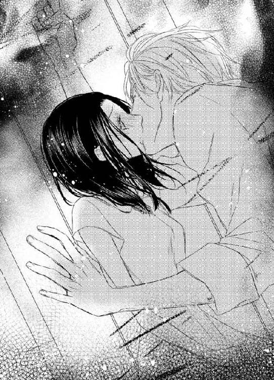
何故今するの？
嫌がらせならもう十分でしょう。
それとも...、他の気持ちがあるの？
唇を離すと、彼は私の目を見て言った。
「もし私が性欲の塊だったら、ここで君の服を引き裂いてるところだ。私は理性の塊だ。今のキスで...ッ」
もう一度振り上げた私の手は、今度こそ目的を遂げた。
不埒な男の頬を鳴らして。
「二度と近寄らないで。二人の前ではいつも通りにしてあげるけど、私はあなたがしたことを一生許さないから」
捕まる前にキッチンへ行き、私はペティナイフを手にした。
アイスティーに入れるオレンジを切るためだけれど、彼を脅すためでもあった。
「行って」
ナイフを見ると、ジャックは諦めてくれた。
両手をあげ、降参のポーズを取ると、「グラスは一緒に持ってきてくれ」と言って出て行ってくれた。
悔しい。
素敵なキスだった。激しくて、腰もくだけるような。
優しく抱き締められ、甘い愛の言葉を囁かれてから受けていれば、きっと悦びで満たされただろう。
でもそうではない。
フレッドに顔向けできないですって？
それはあなたのことでしょう。私のことを誤解しているのなら、どうして友人の恋人にあんなことができるの？
「シスコンなんだわ。妹のために日本に家を買う？ 本当に愛してるのね」
悔しい。
悔しいのは、彼の一途な愛情を受けてるのが自分ではなくメアリだということ。あんなことをされたのに、まだ彼に愛があればなんて能天気に考えてる自分。
キスに感じてしまったこと......。
メアリが恋敵だったら、まだ救われた。正々堂々と戦えるから。でも彼女は戦う相手ではない。愛すべき人だ。
オレンジスライスを浮かべ、オレンジジュースで割ったアイスティーを持って戻ると、三人は楽しげに話していた。
「お待たせ」
「オレンジジュース？」
「アイスティーをオレンジジュースで割ったの。私、アイスティーを淹れるのがヘタで、どうしても濁ってしまうの。だからオレンジジュースでごまかしてるのよ。次はメアリに入れてもらうわ」
「甘い。美味しいわ」
彼女は一口飲んでそう言ってくれた。
「作り方を教えて。知りたいです」
「簡単よ、濃く入れたアイスティーとジュースを半分づつグラスに入れるだけ。グレープフルーツでも何でもいいの。柑橘系の方が爽やかね」
私はジャックにもフレッドにも目を向けなかった。
わずらわしいことを考えるのがもう面倒になっていた。
可愛らしいメアリと、他愛のない話をしている方がずっといいわ。
「熱いうちに氷を入れるダメです。少し冷ましてからにしないと」
「そうなの？」
「嬉しい、私にも教えることがありそうだわ」
「いっぱいあるわ。私、料理はできるけれどお菓子は作れないの。メアリ、お菓子を作る？」
「ええ。焼き菓子、よく焼きます」
彼女の笑顔を見ていると安らぐ。
きっとフレッドも彼女のこういうところに惹かれたのね。
「そうだわ、着物を見せてくれると言ったでしょう？ 早速着てみない？」
「ええ、是非」
「男の人は入って来ちゃダメよ。女性だけの時間ですからね」
「花が無くなる」
フレッドは文句を言ったけれど、今回は私の意見を通させてもらうことにした。
「仕事の話でもしてればいいわ。夕飯の席では仕事の話は禁止にするから」
二人から離れる丁度いい口実を見つけ、室内へ戻る。
メアリの荷物を解きながら、彼女の買った着物を見せてもらった。
着物はどれも美しかったが、残念なことに着付けをするには足りないものが幾つかあった。
「浴衣ならすぐにでも着られるのだけど、これは正式な着物だから、腰紐や伊達締め、帯紐が必要なの」
「着物と帯だけ、だめ？」
「ええ」
「ここではその必要なものは買えないかしら？」
「街へ出れば売ってると思うわ」
「遠いのね？ 車は出して...、もらえないわね」
「どうして？」
メアリは困ったように笑った。
「私、子供のころ身体が弱かったの。それで兄があまりあちこち出歩いてはいけないって」
「でも、ボランティアをしてるんでしょう？」
「文字の読めないお年寄りに本を朗読してあげてるだけ。今回の旅行も、お友達が一緒だったし、フレッドが誘ってくれたから許してくれたの」
「フレッドが？」
「ええ。特別な旅行だから、今回はいいだろうって。二人で会社をやる話、聞いた？」
「聞いたわ。ジャックはイギリスで結構なやり手だそうね」
ベッドに並んで座り、私達は話を続けた。
「フレッドのお家の土地を扱ってるの。前の不動産屋が悪いことをして、他の人間を探すことにしたから、兄がその仕事を手に入れたのよ」
「悪いことを？ それは知らなかったわ」
父さん達はそんなこと、話してくれなかった。
私が心配すると思ったのね。
「それを機会に、兄は大きく仕事を広げたわ。だから、とてもフレッドに感謝してる」
「二人は友人だから、当然よ。いいわ、お兄さんの手前、言い出しにくいなら私が言ってあげる。夕食まではまだまだ時間があるんだから、少し買い物をしましょう。街で降ろしてもらって、私達二人だけで」
「兄さん達は？」
「どうしても付いてきたいと言うなら、遠くから眺めているように言うわ」
彼女はふっと視線を私に向けた。
「舞亜はとても素敵な女性ね」
「褒められて嬉しいわ。メアリもとても可愛らしい女性ね」
「心からそう思うわ。強くて、美しくて、羨ましいぐらい」
「私なんかを羨むことはないわ。平凡な女ですもの。私の方こそ、メアリが羨ましい」
「お互いさまって言うんでしょう？ こういうの」
「そうね」
私達は見交わしてふふっと笑った。
「さあ、今日は忙しいわね。すぐに買い物よ、行きましょう」
彼女を連れて、まだ庭に戻ると、メアリが心配した通りジャックは今から出掛けたいというと反対した。
東京からの移動で疲れているだろうから休むべきだというのだ。
けれど私はそれに反対した。
「動く時はまとめて動いた方がいいのよ。それで明日はどこにも出掛けず休めばいいんだわ。それに、街へ買い物に行くのにどれほど疲れるって言うの？」
「君も買い物がしたいのか？」
「ええ。色々買いたいわ」
ジャックと言葉を交わすとケンカになるから、私はフレッドに向かって言った。
「お願い、車を出して」
「......お前に『お願い』と言われると弱いな」
フレッドが私に甘いことを知っているからだ。
「二人がワインを飲んでしまったから、タクシーを呼ばなきゃ。二台ね。私はフレッドと乗るわ。メアリはお兄さんと車に乗るべきね。その方がくつろげるでしょう？」
誤解されることを、もう心配などしなかった。
誤解したければすればいい。私はどうしてもフレッドと二人きりになりたかったのだ。
ジャックは不満げな顔をした。でも関係ないわ。
メアリの心配そうな表情は気にかかったけれど、彼女にはきっと幸福な結末が待っているだろうから、ここは少し我慢してもらわないと。
乗るのはタクシーだから、二人きりではない。変な心配もしないで済むでしょう。
どんなふうに勘ぐられても、彼等の存在のない場所で、私はどうしてもフレッドに言わなければならないことがあったのだ。
すぐにやってきた車に分乗して街へ向かう途中、私はフレッドに切り出した。
「フレッド、悪いけど、私東京へ戻らなくちゃならなくなったの」
これを言うために、二人きりになりたかったのだ。
後部座席、並んで座るフレッドは私を見た。
「帰る？ 何時？」
もちろん驚いた顔で。
「今日じゃないわ。せっかくメアリが来たばかりなのに、すぐにいなくなったら気分が悪いでしょう？」
「どうして、って訊いたら答えるかい？」
「仕事の都合よ。昨夜会社からメールが入ったの。私が担当している取引先と、ちょっとトラブルが起きてるらしくて......」
そんなのは、もちろん嘘だった。
会社からメールなんて来ていないし、取引先とトラブルにもなっていない。私にはたっぷりとした休暇がある。
ただここにいたくなかった。
ジャックの側にいたくなかった。
彼が私を妹のライバルとしか見ていないことが辛い。あの夜を思い出すのが怖いから。
「せっかく会えたのに」
「ええ、私もすごく残念。でも仕事は大切なの、わかって」
「そのトラブルが終わったら、また来るかい？」
「それはわからないわ。その......いつまでかかるかはっきりしないから。怒った？」
「怒ったりしないさ」
とは言ったけれど、彼の顔に笑顔はなかった。
「今回はトラブル続きだったな」
「......え？」
フレッドの言葉にギクリとする。
まさかジャックが何か言ったの？
「伯母さんの来日、メアリの友人の病気。結局ゆっくりできたのは一日だけだったな」
よかった、そっちね。
「仕方ないわ。そういうタイミングだったのよ。間が悪い時ってあるものだわ。二人には、私が帰ることは言わないで」
「何故？」
「仕事が終わったらまた来られるかもしれないし、嫌な気分にさせたくないの。ちょっと出掛けたくらいに言って」
「メアリは気に入った？」
「とても。可愛い人だわ。お兄さんが過保護にしなければ、きっともっと快活になるんじゃないかしら」
「ジャックは心配なんだよ。子供の頃はよく医者にかかってたらしいから」
「子供の頃は子供の頃よ。今はもう立派な大人でしょう？」
私はチラリとフレッドを見た。
「そろそろ、彼女はお兄さん以外の保護者を探すべきだと思うわ」
視線に気づいてフレッドは肩を竦め、私の頭を小突いた。
「お前も着物が欲しかったら、買ってあげるよ？」
「私は何もいらないわ。着て行く先もないもの」
「舞亜はいつも無欲だな」
「いつかすっごいおねだりをするかもよ？」
「そしたら、父さんと二人、財布を引っ繰り返してでも応えてあげるよ」
「ありがとう。その言葉を聞けただけでも来た甲斐があるわ」
兄に会いに来た。
それだけでいいだろう。
ジャックのことなど忘れてしまえばいい。彼とは会う予定ではなかった。東京で偶然会っただけ。ここでのことは全て忘れて、あの時のことだけ覚えていればいいわ。
「私、兄さんが好きよ。離れていても大切な家族だと思ってるわ」
「僕もだよ。だから......」
「だから？」
問い返すと、彼は笑ってごまかした。
「いや、後で話すよ。それじゃ、今夜は出掛けずに、家で過ごそう。四人で水入らずの方がいい。お前が来る前に頼んでいたケータリングの店があるから、二人が買い物している間にそちらを頼んでおくよ」
「そうね。出掛けるより、家の方がいいわ」
フレッドは、私の肩に手を回し、抱き寄せた。
バックミラーに映るジャックの車。
彼等から、この様子は見えるかしら？ これはまた誤解を生むかしら？
でも私は兄の手を払わなかった。
家族の優しさが、今は必要だったから。
これから一人になる寂しさを埋めるために。
街の古い呉服屋で、着物に必要なものを全て買い揃えた後、ついでに近くのショッピングモールにも足を伸ばした。
すぐにいなくなってしまう後ろめたさもあって、メアリと楽しい時間を過ごしたかった。
彼女には、私が気分を害して出て行ったと思われたくなかった。
フレッドはショッピングモールに私達三人を置いて、一旦ケータリングの店へ向かった。
でも残ったジャックも、買い物にはついて来ず、モールの中のカフェでおとなしく待っていた。
女二人の買い物は楽しくて、あちこち回って随分と買い物した。
「舞亜は買わないの？」
「私はそんなにお金に余裕がないの。でも、気にしないで、本当に欲しいものがあったら買うから」
メアリは気遣いのできるいい女性だ。
「私が贈りたいと言ったら失礼？」
驕りもない。
「いいえ、嬉しい申し出よ。欲しいものがあったら言うわ」
「でも欲しいものはない、と言うのでしょう？」
察しもいい。
私は、彼女に嘘をつきたくなかった。
「男性達には言わないで欲しいのだけれど、フレッドやジャックがお金を持っていても、私には関係のないことだと思ってるわ。自分のお金で買い物をするなら慎重に買い物をしないといけないの。メアリはせっかく日本へ来たのだから、日本でしか買えないものを買えばいいわ。それを浪費だとは思わない。私も、海外へ行ったらきっと色々買うでしょうから。それとも、私が買い物をしないと気にかかる？」
「いいえ。自分の買い物を他人のせいにはしないわ。それぞれの事情があるでしょうから。私が舞亜が好きで、舞亜に贈り物をすることが嫌でないなら、それでいいわ」
「それは歓迎するわ」
しっかりした女性だ。
見かけは子供のようにふわふわしているけれど、考え方は芯がある。
「もうそろそろ兄さんも痺れを切らせてるわね」
「女の買い物は長いものよ。ジャックは少し忍耐を覚えればいいわ」
「まあ、兄さんが忍耐？」
彼女は笑った。
「おかしい？」
「兄にそんなことを言った女性は初めてだわ。女性はみんな私より兄の意見を優先させる人が多かったから」
ジャックに気に入られたいと思う女性達は、そんなふうにメアリを利用したのね。
そしてそういう女性はきっと少なくなかったのだろう。
「でも戻りましょう。私も喉が渇いたわ」
「メアリが望むなら、そうしましょうか」
私も誘惑に負けてワンピースを一枚買い、メアリからの贈り物で揃いのバッグを手に入れた。
ジャックの待っているカフェの近くまで行くと、彼は苛立たしげにコーヒーを飲んでいた。きっと、女性の買い物を待つなんて、彼はあまりしたことがないのね。
メアリも彼に気づき、手を振る。
いっぱいの紙袋を持って手を振る姿は、何だか微笑ましかった。
「私、どうして舞亜が一緒にいるのか、不思議だったわ」
「え？」
「フレッドは、あなたのことを大切な人だとしか教えてくれてなかったの。正直、もしかしたら彼の恋人なのじゃないかと思ったわ」
「それは違うわ」
私は慌てて否定した。
彼女にまで誤解されては大変。でもそれは杞憂だった。
「そうね。フレッドがあなたを見る目は、兄が私を見る目に似てるもの」
メアリは微笑んだままだった。
女性の方が恋に敏感なせいか、真実に気づくのかもしれない。
「でも、だからこそ不思議だったの。女の人を一人だけ説明もせずに招待するのはどうしてなのかしらって。でも今はわかるわ」
まさか、私がフレッドの妹だと、そこまで気づいたの？
驚きと共に彼女を見返すと、メアリは納得顔で頷いた。
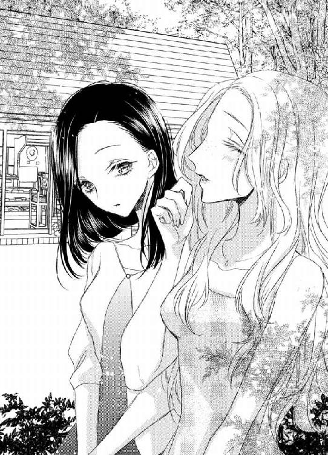
「きっと兄のためね」
「ジャック？」
「ええ。だって、兄さんはずっとあなたを見てるもの。あんなに熱っぽい目で女性追いかける、初めて。私より舞亜のことが気になって仕方がないみたい。兄さんのパートナーとして呼んだんだわ」
メアリが観察眼のある女性だということは認めよう。
彼女はフレッドの本質を見抜いていた。でもジャックに関しては間違っている。
彼が私を見るのは、あなたの邪魔になる者を睨みつけてるだけなのよ。
「舞亜は兄さんが嫌い？」
素直に訊かれて、苦笑するしかない。
「......いいえ。素敵な人だと思うわ。でも、彼は私を相手になどしないわ」
「どうして？ 舞亜はこんなに素敵な女性なのに」
「私、彼に嫌われてるの」
「まあ、そんなことないわ。それは誤解よ」
もしそうだったらどんなによかっただろう。『誤解』は私ではなく彼にあり、それは決定的な結末を迎えてしまったのだ。
「ううん、本当よ」
「嫌ってなかったら？」
「もう遅いわ。......この話はやめましょう」
彼女は残念そうな顔をしたが、会話はそこで終わりにしてくれた。
まだこちらを見ているジャックの元へ行くと、彼は私ではなく妹に声をかけた。
「あそこで何を話してたんだ？」
「兄さんは少し女性を待つという忍耐を覚えた方がいいって話」
「そんなことを言ったのは舞亜だな？」
ジャックが私に視線を向ける時は、いつも険しいものばかり。
「ええ、そうよ」
だから私も睨み返してしまう。
「さっきフレッドから連絡が入った。ケータリングを待つのに先に別荘へ戻るそうだ。お前達の買い物が済んだのなら、このまま帰るぞ。それとも、他にまだ買うものがあるのか？」
「いいえ。ないわ」
ジャックは何も言わずメアリの荷物を持った。
「兄さん、舞亜のも持ってあげて」
「いいのよ、私のは軽いから」
彼は無言で手を差し出したが、私はそれに気づかないふりをして紙袋を手にしたまま駐車場へ向かって歩きだした。
バカね。彼が私の荷物を持とうとしなかったことぐらいで傷つくなんて。わかりきってることなのに。
「暗くなる前に戻りましょう。フレッドが一人で寂しがるわ」
でもこの苦しみもすぐに終わる。
明日、私が帰ってしまえば全て終わり。
始まることすらできなかったこの恋も、終わってしまうのだわ。
傷だらけのまま......。
別荘へ戻ると、ホテルの名前の入ったミニバンが二台も停まっていて、フレッドが頼んだケータリングが宅配のピザなんかではないことを教えた。
彼等にはこれが当たり前なのかと思ったら、メアリもジャックも驚いていた。
「随分豪華なのね」
素直に喜びの声を上げるメアリに、ジャックも同意した。
「四人分にしては多そうだ」
それから私をちらっと見て、こう続けた。
「お前を歓迎してるんだろう」
君が到着した夜は、近くのレストランへ行っただけだったが、メアリはこんなに歓待してるんだぞ、と言われた気がする。
「ただいま」
家の中に入ると、リビングはすっかりパーティ様式だった。
ガラスのテーブルには白いレースのクロスがかかり、真ん中には大きなバラの花のアレンジ、シャンパンも用意されている。
「凄いわ、フレッド。何の記念日？」
「それは後で発表するよ。メアリも舞亜もドレスは持ってきてるかい？」
「私は一応」
三人の視線がこちらに向くから、正直に答えた。
「私はパーティドレスとは無縁の生活よ。持って来いとも言われなかったし。今日買ったワンピースが今の最高の装いね」
「じゃあ、こちらで用意したドレスに着替えなさい」
「用意した？」
「お前用のドレスだよ。ここに、置いてあるんだ」
「私のために？」
フレッドの言葉は、嬉しかった。
兄が私のためにドレスを用意してくれていたなんて。ずっと私のことを考えてくれていた、という証しだもの。
でも、ジャックの視線は痛かった。
「フレッド、『お前』ってあまりいい言葉違うでしょう？ どうして舞亜を『お前』呼ぶの？失礼だわ」
メアリの疑問も胸に痛い。
「それも後だ、二人とも美しくしておいで。ジャック、君もスーツに着替えてくるんだ」
「......何が始まるんだ？ 私にも教えてくれないのか？」
ジャックも知らないのね。
「知りたかったら、用意しておいで。僕達四人にとって重大な発表をするから」
「私達四人？」
「そうだ。さあ、早く。料理が冷めないうちに集合だ。舞亜、お前はこっちだ」
私だけフレッドに呼ばれ、彼の部屋へ向かう。
「何をするの？」
「まだ秘密だ。多分大丈夫だと思うが、もしダメなら、仕事のことも考えないといけない」
「そんな重大なこと？」
「ああ」
何だろう......。
もしかして、イギリスから今回の起業に反対する人が出たとか？ 伯母さんがジャックを気に入らなかったとか？
私が訊いても答えなさそうね。共同経営者のジャックにも秘密なのだから。
「ほら、これを着るといい」
てっきりフレッドの部屋へ行くのだと思ったが、連れて行かれたのは父さんの書斎だった。
クローゼットの中には父のスーツやガウンがかかっていたが、その奥から彼は古い箱を取り出した。
綺麗ではあるけれど、相当古い気がする。
「サイズが合うといいんだが」
「これ、私のドレスじゃないわね？」
「説明しないとわからないかい？ 父さんの部屋に置いてあるドレスの持ち主のこと」
もちろん、説明などいらなかった。
「母さんのね！」
「その通り」
私はすぐに箱を開けた。
胸元と裾にビーズを刺しゅうした白いドレス。古風だけれど、アールデコなデザインで、ボディはタイトで裾がたっぷりのフレアになっている。
「素敵」
「お前にあげようと思って、今回持ってきたんだ。イギリスで義母さんが着たものだ」
「すぐに着替えるわ」
「そうしなさい。僕はリビングで待ってるから」
母さんのドレス。
母はイギリスから戻る時、何一つバークレーの家のものを持ち帰って来なかった。お金が目当てだったと言われるのが嫌だったので。私の服さえ、全て置いてきていた。
だから、イギリス時代の母の思い出の品が手に入るなんて、夢のようだった。
部屋へ戻ると、すぐに着替え、鏡に映してみる。
私にはちょっと大人っぽい気がするけれど、サイズはぴったりだった。
今夜を、最後の夜にするつもりだった。明日の朝一番にここを出るつもりだった。だとしたら、今夜が最後の夜になる。
私という邪魔者がいなくなれば、ジャックは私のことなど忘れるだろう。ならば最後に、美しく着飾った私を見て欲しい。
いつか、彼は私がフレッドの妹だと知るだろう。その時に思い出す姿を、綺麗だったと思って欲しい。
「女の意地、かしら...？」
肩までの真っすぐな髪を念入りにブラッシングして、化粧も全部やり直して、少し濃いめにルージュを引く。
大人っぽいドレスに合うように。
岸田の家の女とイギリス人はきっと相性が悪いんだわ。恋をしても上手くいかないのよ。
でも母がそうであったように、私も最後まで顔を上げていよう。やましいことは何一つない、悪いこともしていない。
メアリのためにも、この夜は美しい思い出にしよう。
身支度を終えて部屋を出ると、メアリも丁度出てきたところだった。
「素敵、映画スターみたい」
彼女はピンクに藤色の淡い花の描かれた、可愛らしいドレスだった。
ウエーブのかかった髪には白に近いピンクのコサージュが飾ってある。
「メアリはお姫様みたいだわ」
二人、顔を見合わせてクリスと笑う。
「何のアニバーサリーか、舞亜もわからないですか？」
相変わらず、微妙におかしい日本語で彼女は尋ねた。慣れるとそれすら可愛らしい。
「ええ、仕事に関係があるみたい」
話しながら階段を下りてゆくと、リビングにはスーツ姿の二人が立って待っていた。
フレッドは、上品な貴族の子弟という感じだけれど、ジャックは......。きっちりとしたスーツを着ているというのに、どこかワイルドなオーラを放っていた。
金色の髪が王冠のようだわ。彼は、自らの力で全てを勝ち取る王者のよう。
青く冴えた瞳も、美しい。
見とれてしまいそうになって、私はフレッドに視線を移した。
「どう？ 似合う？」
フレッドはどこか遠くを見る目で私を見つめていた。
母さんを見てるんだわ。
私にはこのドレスの記憶はないけれど、フレッドは私より年上だから、きっとこの姿を覚えているのだろう。
「予想以上に似合うよ」
兄さんは両手を広げて私を軽く抱き締めた。
「綺麗だ。ウェディングドレスのようで、心配になる」
「フレッド、そろそろ何のパーティだか、教えてくれないか？」
私達の邪魔をするように、ジャックが声をかける。フレッドは慌てた様子もなく私を放すと、手を取って近くのソファに座らせた。
それから、メアリを見ると穏やかに微笑んだ。
「妖精のように可愛らしい」
「舞亜に比べると子供っぽいわね」
彼女も、目の前で私を抱き締めた姿を見て、少し不安になったらしい。目を伏せるその顔に笑みはない。
「舞亜のが少し年上だし、働いているからね」
「そうね」
曖昧な同意。
フレッドは彼女の気持ちを暗くさせてしまった理由に気づいていないのかしら？
「僕はこれからジャックと日本で会社を経営する予定だ。経営者になるためには、身を固め、家庭を持つべきだと思う。だから......」
フレッドはコホンと咳払いをすると、スーツのポケットから何かを取り出し、メアリの前に跪いた。
「メアリ。どうか僕の妻となって、一緒に日本で暮らしてくれないか？」
彼が取り出したのは、指輪の箱だった。
蓋を開け、彼女の瞳と同じ青い宝石を差し出す。
「返事は？」
メアリは驚き、そして子供みたいにポロポロと涙を流した。
「イエス、イエス、イエスよ！」
フレッドに抱き着き、彼のキスを受け、まだ「イエス」を繰り返していた。
「手を」
ずっと計画していたのね。指輪はメアリの指にぴったりだった。
まるで我がことのように嬉しくて、思わず私も涙ぐんでしまう。
「残念だったな」
背後でジャックの声がする。
でも私は振り向かなかったし、返事もしなかった。
「おめでとう、フレッド。お似合いだわ」
彼を置いて一歩前へ出ると、二人の頬にキスを贈る。
これで、すっきりして明日旅立てる。
「でもどうして仕事のことだなんて言ったの？ 私達騙されたわ」
「もしプロポーズを断られたら、ジャックと一緒に仕事をするのは気まずいだろうと思ったんだ。仕事とプライベートは別でもショックが大きいからね」
「心配性ね」
「さて、メアリ。泣きやんでくれないか？ もう一つ大切な話があるんだ」
鼻をすするメアリを見かねて、私はティッシュを取って彼女に渡した。せっかくのプロポーズにくしゃくしゃの顔じゃ可哀想だもの。
すると、フレッドは背後から私の両肩を掴んで、メアリとジャックの前に押し出した。
「これから妻と兄弟になる二人に、紹介しよう。僕の妹の舞亜だ」
その瞬間、部屋は何ともいえない空気に包まれた。
私はここでフレッドが私を紹介すると思っていなかったし、メアリにとっても寝耳に水。何より、ジャックは信じられないというように目を見開き、硬直していた。
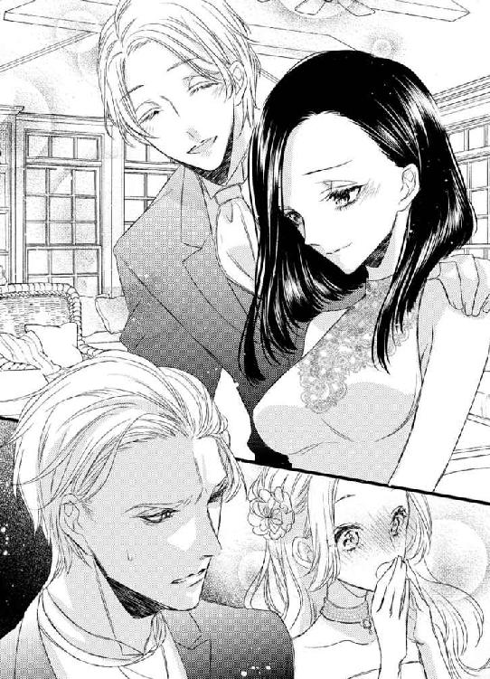
「......その女性は...、どう見ても日本人にしか見えないが？」
強ばった表情のまま、何とかジャックは口を開く。
「舞亜は父の後妻になるはずだった女性と父の間にできた子供なんだ。義母は、僕は敢えて彼女を『母』と呼ぶが、彼女は日本人で、そのことで一族の反対にあった。結婚はできなかったが、父は妻として迎えたし、僕も義母として歓迎した」
フレッドの声だけが、妙に明るく、説明を続ける。
「結局義母さんは舞亜を連れて日本へ戻ってしまったけれど、僕達は血の繋がった兄妹なんだよ。親友であり事業の共同経営者であるジャックと、未来の妻となるメアリには正式に紹介したかったんだ」
「そうだったの。それじゃ、私達姉妹になるのね。でもどうしてすぐに紹介してくれなかったの？ 最初から教えてくれればよかったのに」
メアリの疑問はジャックも問いたいことだっただろう。
彼はじっとフレッドを見つめていた。早く『ジョークだ』と言って欲しいみたいに。
「身内の恥を話すのは気が引けるが、間の悪いことに義母の結婚に反対していた親族が日本に来ていてね」
「......マーガレット伯母さん、か？」
「ジャックは会ったね。そうだ。伯母は、人前でも義母や舞亜を他人のように扱った。聞き苦しい言葉で傷つけたこともあった。伯母には、舞亜と会っていることを知らせたくなかった。舞亜が僕を呼び寄せたと誤解されたくない。それに、伯母から君達が舞亜のことを悪く聞かされるのは避けたかった。会えば彼女が素晴らしい女性だということはわかるだろう。二人が彼女を知ってから、全てを打ち明けた方がいいと思ったんだ。それに、ジャックはそういうことが嫌いだからね、伯母とケンカをされても困る」
「伯母様は私も嫌うかしら？」
私から離れ、不安げに訊くメアリをフレッドは抱き締めた。
「もしそうなっても、僕は君と結婚するよ。どうせ会社を立ち上げたら暫く日本に住むつもりだ。雑音も届かないさ」
ジャックは、そんな二人を呆然と見つめていた。
あなたの頭の中がわかるわ。
今、必死になって答え合わせをしているのでしょう？ そして自分のしたことを悔いているかもしれない。
私にどういう態度を取るべきか、悩んでいる。
「どうした、ジャック。そんなに驚いたのかい？」
「......ああ。驚いた」
「でも、僕らがステディな関係なのは察していただろう？」
そっちじゃない、という彼の表情も、浮かれているフレッドは気づかない。
「さあ、シャンパンを開けよう。僕らの婚約を祝ってくれ。座ってメアリ」
「フレッド、彼女のお化粧を直してあげなくちゃ。あなたが驚かすから、涙で化粧が流れてしまってるわ。さ、行きましょうメアリ」
困惑と後悔に包まれてるジャックを、私は置き去りにした。
親友の妹を強姦したことは、彼にとって大きな罪悪感を生むだろう。そうでなければ困る。
私が受けた傷の何分の一、何十分の一でも、あなたは傷つくべきだわ。
私が流した涙の分だけ後悔するべきよ。
「舞亜はこれから私のお姉さんね」
「兄と結婚するなら、私があなたの妹よ」
「私を姉と認めてくれるの？」
「もちろん。こんな可愛らしいお義姉さんなら大歓迎。メアリこそ、私を義妹として見てくれる？」
「私、舞亜が好き。初めてできる姉妹が舞亜で嬉しいわ」
メアリがいるから、笑っていよう。
彼女の人生の一番幸福な日だもの、水を差したくない。
二人のことは心から祝っているのだから、その気持ちだけを伝えよう。
「顔を洗ってきて。下地からお化粧し直しましょう。ああ、まずこれを言わなくちゃね。『婚約おめでとう』」
花のように微笑むメアリ。
羨んではいけないと思いつつ、やはり羨ましいと思ってしまう。
彼女が愛する人と婚約するから？
いいえ、違うわ。
「ありがとう、舞亜」
彼女が、ジャックの一番だから。
彼のあの行動の理由が、『私』ではなく『メアリ』だから。いっそ、私が嫌いで手を伸ばしたのならそれでもよかった。彼が『私』を見ていたのだから。でも彼は『メアリ』のために動いた。私のことなど、気にもかけていない。
今後悔しているのだって、『フレッドの妹』に大変なことをした、というものだろう。
「幸せになってね」
「ええ」
それがわかっているから、とても悲しかった。
お化粧をし直したメアリを連れてリビングに戻ると、フレッドがシャンパンを開けた。
グラスを掲げ、二人の未来に乾杯する。
豪華な料理の理由は婚約パーティ。もし失敗したら残念会のつもりだったらしい。
メアリがフレッドの隣に座るから、仕方なく私はジャックの隣に座る。
ジャックは、殆ど口を開かなかった。
フレッドは、それを妹想いの彼がメアリの婚約にショックを受けたせいだと思い、慰めの言葉を口にしていた。
自分達も兄弟になるのだから、これから長い付き合いだ。黙っていて悪かったが、君ならきっと気づいていると思っていたんだと。
メアリは私に興味を示し、私や私の母のことを失礼にならない程度問いかけてきた。
隠す必要もないので、正直に全ての事情を説明する。
父はとても母を愛していたことや、フレッドが母を歓迎し、私のこともちゃんと妹として扱ってくれていたこと。生まれたのはイギリスで、子供の頃はそちらで過ごしていたこと。
それでも、母は一族に受け入れられないことが辛くて、容姿が日本人に近い私を連れて日本へ戻ってしまったこと。父を想い、病に倒れ、亡くなったこと......。
今は祖父母と暮らし、この暮らしに不足はないのだということも、ちゃんと言っておいた。私は決して不幸ではないのよ、と。
「不幸な出来事はあったけれど、舞亜は愛されていたのね。もしも私が日本で暮らしたら、毎日会いましょう。私にもっと日本のこと、教えて」
「喜んで。早く私を『叔母さん』にして、愛する人を増やしてね」
「気が早いわ......」
明日発つことを心に決めていたので、シャンパンは苦手だからと最初の一杯だけしか飲まなかった。
料理は美味しくて、メアリとの会話も楽しかったけれど、意識はずっと隣に座るジャックの方へ向いていた。
隣に彼が座るのはこれが最後かもしれない。こんなに近くで彼の声を聞くこともなくなるだろう。次の出会いは、淡々とした儀礼的なものでしかない。いいえ、次があるかすらわからない。彼は、意図的に私を避けるかも。
それでも、目を合わせることはできなかった。
彼も私に声はかけず、私も彼を見ない。
彼はフレッドと、私はメアリと話し続けていた。
食事が終わると、飲んでいないけれど、幸せに酔っているメアリにあてられて、少し自分も酔ったかもしれないと言って私は立ち上がった。
「もう？」
「恋人と二人きりになりたい人を引き留めるほどヤボじゃないわ。フレッド、庭のテーブルに彼女を連れて行ってあげたら？ 今夜はきっと月が綺麗よ」
彼等が先に席を立てば、ジャックと二人きりで残される。だからその前にこちらから提案して部屋へ戻る口実を作った。
「せっかくああ言ってくれてるんだから散歩しようか。メアリを借りるよ、ジャック」
「ああ。私はもう少し一人で飲んでる」
まだ時間は早いけれど、おやすみなさいを言い合ってそれぞれに別れる。
フレッドとメアリは庭に、私は自室に、ジャックはその場に残った。
重い足取りで部屋へ戻り、私はベッドの上に腰を下ろした。
意外なほどあっさりと、種明かしは終わり。
ジャックの驚いて固まった顔を見られただけでも、一矢報いたと思うことにしよう。
彼が私に謝罪しなくても、罪悪感に苛まれて悩み続けることが彼の罰。彼は親友の顔を見る度、フレッドが私を語る度、痛みを感じるだろう。
それが私にすまないという気持ちではなく、自分が悪いことをしたという反省であったとしても。これで彼が私を簡単には忘れないというだけでも、どこかほっとしていた。
ほっとした、というのも変ね。
暴漢なのに、あんなに酷いことをされたのに、私ったら彼の心に爪痕を残すことばかり考えてる。
「...ドレスが皺になるから脱がなくちゃ」
ドレスを持って帰ろうかここに置いていこうか悩んでいると、ドアをノックする音がした。
「はい？」
てっきりメアリだと思って無防備にドアを開ける。
だがそこに立っていたのはスーツ姿のジャックだった。
「舞亜」
反射的にドアを閉める。けれど彼が身体を入れる方が早かった。
「出てって。声を上げるわよ」
「君に謝罪をしにきた」
「謝罪？」
「君にすまないことを......」
「やめて、今更」
私は彼を押し出してドアを閉めようとした。
「舞亜、聞いてくれ」
「聞きたくないわ！ あなたが私に何をしたか、私がどれほど傷ついたか、わからないわけはないでしょう？」
「理由があるんだ」
「ええ、理由はあるでしょうね。あなたの大切な妹のため、恋のライバルを排除しようとした。身勝手な理由が。私がだれにもあのことを言わなかったからって、あなたを許したと思わないで。私はフレッドとメアリのために口を閉ざしているだけよ。決してあなたのためじゃないわ。自分の親友や兄が、あんな酷いことができる人間だと知ったら、二人が悲しむから我慢しているだけよ」
ドアの隙間に手をかけたまま、彼はまだその場に留まった。
「君が......、フレッドの妹だとは知らなかった」
「私は言ったわ。あなたは聞いてくれなかったけれど」
「君達は兄妹には見えなかった」
「ええ、でもその説明すら聞こうとしなかった」
殊勝な顔をしても、だめ。
あなたは私に悪いことをしたから謝罪に来たわけじゃない。友人の妹だから来ただけだとわかってるのよ。
「謝らなくてもいいわ。別に悪いと思っていないんでしょう。あなたはフレッドに申し訳ないと思ってるだけよ。私に、じゃない」
「違う。本当に......」
「出てって！ 今夜はもう疲れたの、ゆっくり眠りたいのよ！」
苛立って、つい声が大きくなる。
いけない。あの二人に聞かれたら、何かと思われてしまう。
「あなたの望みは叶ったでしょう。フレッドはちゃんとメアリを選んだわ。あなたの妹さんはあなたの手を離れた」
「そうか、あの時のフレッドの電話も、そういうことだったんだな。君が手を離れるまで、というのは」
「答え合わせをしたいの？ そうよ。フレッドは妹としての私を愛しているし、私も兄としてのフレッドを愛してる。私達がハグしたりキスしたりしたのは兄妹だから。これでいい？」
「どうしてあの時、恋人だなんて言ったんだ。あの時君が恋人のためと言わなければ......！」
何故私が悪かったように言うの。
悪いのはあなたなのに。
「あなたが先に誤解しただけよ。私から言ったわけじゃないわ。ただ、あのグラスをフレッドに贈りたかったから否定しなかったことは認めるけれど。私が本当にフレッドの恋人だったら、いいえそうでなくても、あなたのした事は最低のことよ」
それが事実でしょう。
「それはそうだ......」
「納得したら行って。あなたと話すことは何もないわ。フレッドとメアリのために、あなたのしたことはこれからも黙っていてあげる。でもそれは許すことではないと覚えていて」
「わかった。だが......」
「あなたが私に何を言っても、全て遅いのよ」
いつも、不遜なほど自信に満ちていたジャックの顔が叱られた子供のように目を伏せ、申し訳なさそうにする。
でもだめ。
許しはしない。
「おやすみなさい、ミスター。これから兄をよろしく」
「舞亜」
睨みつけると、彼は静かに息を吐き、引き下がった。
「わかった。今夜はこれで下がる。だが君に言いたいことがあるんだ。ちゃんとした機会を設けて、聞いて欲しい」
返事はしなかった。
彼が下がってくれたので、ドアを閉め、カギをかけた。
「う......」
涙が溢れる。
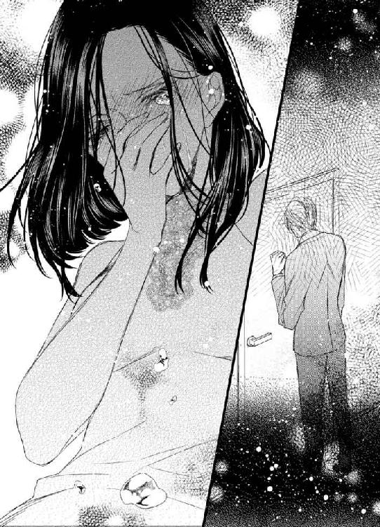
今の謝罪を、あの夜に聞いていたら、彼が自ら自分のしたことを悔いたと思ったかもしれない。でも今では遅い。
今謝罪されても、私に悪いことをしたと思ってくれたとは信じられない。フレッドと上手くやるために頭を下げにきたとしか。
それに昼のキス。
あんなことをして悪いと思っていたのなら、あんなキスはしなかったわ。
フレッドに合わせる顔がないだろうとまで言ったのよ。
なのにどうして、私は彼を憎めないの？
ドレスを脱いで夜着に着替える。
シンデレラだったら、ドレスを脱いで日常に戻っても、いつか王子様が迎えにきてくれたでしょう。でも私はシンデレラじゃない。
母のドレスを脱いで、東京へ戻ったらただのＯＬに戻る。
そして王子様は迎えになど来ないのよ。
「これが、現実だわ......」
虚しく響く自分の声は、自分に言い聞かせるためのもの。
夢を見てはいけない。叶わなければ結局悲しみが募るだけだから。
そう言い聞かせるための......。
人工の光のない濃い闇に、グレイの光が射す。
遠く東の空が明るくなりはじめると、朝もやがかかった山の稜線がだんだんとくっきりと浮かび上がり、一瞬の影絵になった後、美しい風景に変わる。
キラキラと宝石のように闇の中にちりばめられていた沢山の星は息をひそめ、また自分の出番が来るまでは太陽の光の中に呑まれて消える。
白いだけの光はやがて藤色になり、オレンジになり、辺りをすっかりと『山の景色』に仕上げる。
暗いうちに目を覚まし、シャワーを浴びた後、窓辺でずっとその様を見ていた。
世界という広くて大きいものが、ほんの短い間にすっかり姿を変えてしまうのは、何て不思議なことだろうと。
何も変わらないと思っていることも、こんなふうにある日突然全て変わってしまうのかもしれない。
夜から朝へ。
闇から光へ。
平凡な幸福から、最悪の不幸へ......。
荷物を纏めた後、私は短い手紙を書いた。
相手はフレッドだ。
メールもあるのにあえて手紙にしたのは、出る時にはちゃんと連絡したという意思表示と、それが兄に伝わるのは兄が私を起こしにきた時というタイムラグが欲しかったからだ。
『昨日言ったけれど、仕事の都合で東京に帰ります。メアリとの結婚、心から祝福します。式に呼んでもらえるのを楽しみにしてるわ。それじゃ、また』
短い、でも不安を感じさせないようにした文をもう一度読み直してから、整えたベッドの上に、置く。
起きて来ない私を心配して部屋に入れば、一番にそこへ足を運ぶだろうから。
「六時か......」
時計を見て時間を確かめ、スーツケースを持って部屋を出る。
タクシーは、昨夜のうちに手配していた。私道に入らず、国道で待っていてくれと頼んで。
電車のチケットは買っていなかったが、この早さなら空席はいくらでもあるだろう。
スーツケースが音を立てないように、重たいけれど引っ張らずに持って歩いた。
階段を下りてリビングに出ると、昨夜の名残がまだ散らかったまま。
ほんの数日の間に、何ていろんなことがあったのかしら。
どの瞬間も、二度と味わえない思い出だわ。よくも悪くも。
お酒を飲んだ翌日だから、三人ともまだ夢の中だろう。誰にも気づかれないうちに、出て行かなくては。
メアリやフレッドに引き留められたら決心が鈍ってしまう。
ジャックに......、いいえ、彼は引き留めたりなんかしないわ。引き留めても、私にいて欲しいからじゃなく、二人が言うからそうするだけ。
忘れよう。
この別荘を出たら、全部。
いつかフレッドの結婚式でまた顔を合わせるかもしれないけれど、その時はまるで初めて出会ったかのような顔をしよう。
「さよなら」
玄関から外へ出た時、私は室内に向かって呟いた。
「さよなら、始まらなかった私の......」
恋、とは言わず、ドアを閉じる。
冷たい高原の朝の空気の中、タクシーに向かって歩き出す。
さよなら、ともう一度心の中で繰り返して。
「暑いわ......」
扇風機のスイッチを止めて、クーラーのリモコンのボタンを押す。
省エネしようとなるべくクーラーを使わないようにしていたけれど、軽井沢の高原と比べると、東京の夏は暑いだけじゃなくてじめっとしている。
蒸し器で蒸されるシュウマイって、こんな気分だわ、と思うくらい。
東京へ、もどってきても、『おかえり』と言ってくれる人はいなかった。
祖父母はまだ海外だし、せっかくとった夏の休暇をフイにしてまで出勤する気にはならない。取り直しはきっときかないだろう。それなら、暇を持て余すのも一興とするしかない。
戻ってきた日、荷物も解かず風呂に入って夕方までぐっすりと眠った。
起きると、携帯電話にはメールと着信が幾つか入っていた。
どれもフレッドからだ。
どうして何も言わずに帰ったんだ。
昨夜のうちに一言だけでも言ってくれればよかったのに。
メアリも心配してるから、一度連絡しなさい。
心配させたいわけではなかったので、『仕事でメールが見られなかったの、返信遅くてごめんなさい』と前置きして、仕事が急ぎだったのだと言い訳した。
昨夜は二人があまりに幸せそうだったので、水を差したくなかったの。
どうせ言っても耳に入らないくらい二人の世界だったでしょう？
日本人はワーカーホリックなのよ。
そんなことを書いて送った。
それでもフレッドは諦めきれなかったようで、休暇が取り消しになったとしても、日曜は休みだろうから、土曜に泊まりに来なさいと返信があった。
でも、一晩だけのためにわざわざ電車を乗り継いで軽井沢まで行くのは疲れるわ、とこれは半分本当の気持ちで答えた。
結局、何度かのやり取りの後、私の都合がついたらまた連絡するということで決着した。
ワーカーホリックというほどではないし、仕事を休んでもしたいことがあるわけではない。
友人と遊ぼうにも、他の人達はみんな働いているわけだし、休みを取ってる人はそれぞれ自分の休暇を楽しんでいる。
持て余す時間は、部屋の掃除と読み溜めていた本を読むことと、見たいと思っていたＤＶＤを見ることで潰すしかなかった。
「無趣味だわ」
我ながら情けない。
それも二日続けると、もう飽きてしまった。後はもう、ただごろごろするだけ。
こんなところを見られたら、お祖母ちゃんに怒られるわね。
でもあと一週間近く、休みは残っているのだ。
何かもっと建設的なことをしないと。
そう、何かしないと。
ぽっかりと時間が空いてしまうと、『彼』のことを思い出してしまう。
出会った時の、凛々しい紳士としての姿。
妹のことを話す時の、ちょっと可愛らしい態度。
再会した時の冷たい顔。
恐ろしかったあの夜。
最後の、すまなさそうな視線。
いいところも、悪いところも、次々と思い浮かぶ。
仕方ないわよ。
あんなにカッコイイ人には会ったことがなかったのだもの。あんなにインパクトのあることをされたこともなかったのだもの。
どんな形であれ、彼が私の初めての人だったのだもの......。
思い出すと、胸が熱くなり、また会いたいと思わせた。その反面、憎らしく、二度と会いたくないし思い出したくもないとも思った。
忘れなきゃと思うのに、忘れるにはまだまだ時間がかかることはわかっていた。
彼のことを頭から追い出すためには、何かしないと。
でもその『何か』って何？ 彼のことを忘れるほどのことなんてあるかしら？
色々考えて、私はメアリのために浴衣を縫うことにした。
針仕事は無心になれる。作り方はお祖母ちゃんに習ったし、学校の授業でもやった。今時はネットで『浴衣』『作り方』で検索すれば幾らでも出てくる。
突然帰ってしまったことを、きっとメアリは気に病んでいるだろう。
手作りの浴衣をプレゼントすれば、私が彼女を嫌ってないとわかってくれるに違いない。
朝一番で買い物に出掛け、外国の人も気に入るように、今風の明るいデザインの反物を買って戻る。
動きやすい服に着替え、パソコンと記憶を頼りに道具を広げる。
誰もいない家だから、座敷を好きに使えるわ。後で、フレッド達はいつ帰るのかを確認しよう。
そう思って畳の上に反物を広げた時、携帯が鳴った。
「またフレッドね......」
せっかくのやる気を削がれ、ため息まじりに携帯電話を手にする。
メールはやはりフレッドからだった。
だが内容は、予想もしてないものだった。
『舞亜、仕事が忙しいところにすまない。実は大変なことが起こってしまった。メールでは説明できないので、夜にでも会ってくれないだろうか？ 僕が東京に行くから』
大変なこと？
ジャック達を置いてまで東京に出てくるなんて、何があったのかしら？
急に不安になり、少し悩んだ後、すぐに返信した。
本当は今頃会社にいる時間なのだから、すぐに返信はできないはずなのだけれど、そんな場合ではない。
『大変なことって何？ 時間は作れるけど、何があったの？』
フレッドからの返信は、早かった。
それだけ問題が大きいのかも。
『メアリの身体のことだ。同じ女性のお前にしか相談できない。頼むよ』
「まあ、メアリのこと？」
予想外の問題だわ。
しかも兄であるジャックがいるのに、私にだなんて。
まさか......、赤ちゃん？
いえ、フレッドに限って結婚前にそれはないわね。真面目な人だもの。それに、そういうことなら、二人は結婚するのだし、嬉しい報告となっただろう。
では何？
もしかして彼女はとても重い病だったの？
もしそうなら......、ジャックの過保護さもわかる。許しはしないけど、理解はできる。
いいえ、そんなこと考えてはダメ。
メアリはとても健康そうだったわ。これから結婚して、フレッドと家庭を築くのよ。
『わかったわ。今夜来れるなら、時間を作ります。明日なら何時でも時間を指定して。昼間でもいいわ』
早く事実が知りたくて、私は即座にメールした。
『わかった。それじゃ、今夜八時。グレイスホテルに宿を取っておくから、フロントで訪ねてきてくれ』
今夜八時ね。
了承のメールを返信し、私は座敷に広げた浴衣の生地を見た。
ピンクのドレスを着ていた彼女を思って買った白地に淡いピンクの紫陽花柄の浴衣。これを仕立てて彼女に渡したい。
メアリの喜ぶ顔しか見たくない。
「用意しなくちゃ」
まだ昼を回ったばかりだったけれど、気持ちが逸って、私は出掛ける支度を始めた。
動いていないと落ち着かなくて。
グレイスホテルは、ラウンジのフレンチトーストが有名で、女性の憧れでもある外資の高級なホテルだった。
会社帰りだからスーツにしようかとも思ったのだが、その場に合った服装の方がいいだろうと、『一旦家に戻って着替えてきた』設定で、ブルーのワンピースで出掛けた。
ロビーは都心の大きなビルの上層階。
エレベーターに乗ってロビーフロアに到着すると、落ち着いた色合いのカーぺットが敷かれ、ガラスのオブジェが飾られた広い場所に出る。
私は真っすぐフロントに向かうと、目的を告げた。
「ここに宿泊しているフレッド・バークレー氏にお会いしたいんですけど。お部屋の番号を教えていただけます？」
黒いスーツの男性は慇懃な笑みでパソコンを操作した。
「失礼ですが、お名前は？」
「岸田舞亜です」
「岸田様でございますね。窺っております。バークレー様は二十三階の二三〇一号室でございます。ご連絡さしあげておきますので、どうぞ直接お部屋の方へいらしてください」
「ありがとう」
「エレベーターはあちらでございます」
ここからはホテル専用のエレベーターなのか、さっき乗ってきたのとは違うエレベータを示される。
足音を吸い取る絨毯を踏み締め、そちらに向かい、２３と書かれたボタンを押す。
ふわりとした上昇感は、不安な気持ちを煽った。
ああ、大丈夫かしら？
せっかく二人は幸せを手に入れたばかりなのに、どんな問題が起こったのだろう。
到着し、扉が開くと、案内板を見て部屋を確認する。このフロアには部屋が四つしかないらしく、エレベーターを出てすぐ右側の扉が目的の二三〇一号室だった。
茶に金の縁取りのあるドアの前に立ち、チャイムのボタンを鳴らす。
少しの間があって、ドアが内側へ開く。
「フレッド、メアリのことって......」
だが、迎えに出たのはフレッドではなく、何と白いサマーニットを纏ったジャックだった。
一瞬身体が強ばり、逃げ出したい気分になる。けれど、問題がメアリのことなら、彼がいても不思議はないのかもしれない。
私は深呼吸を一つして、彼を見返した。
一度好きになってしまった人を嫌いになるのは難しい。
忘れるにはまだ時間が短い。
でもそれを知られたくない。
「フレッドは？ 中？」
ジャックは紳士的に扉を大きく開け、通りやすいように自分は脇へ退いた。
「奥へどうぞ」
大丈夫。彼にとって私は『フレッドの妹』なのだから、もう変な真似はされないわ。
私は招かれるまま中に入った。
フロアに部屋数が少ない時からわかっていたけれど、部屋は豪華なスイートルームだった。
正面の大きな窓からは、眼下の街が一望できる。
その前のレザーのコーナーソファには誰もおらず、ガラスのテーブルの上にはコーヒーの用意があったが、置かれているカップは二つだけだった。
「......フレッドは？」
「フレッドはいない」
「来られなくなったの？」
「いいや、最初からいない。今頃は、メアリと二人の夜を過ごしているだろう」
「どういうこと？」
「私が、彼に頼んで芝居をしてもらった」
「芝居？ じゃ、メアリの一大事って......」
「嘘だ」
「よかった......」
「よかった？」
「もし彼女に何かあったらと思って、メールをもらってから気が気でなかったの。彼女に問題がなくてよかったわ」
ジャックは何故か不機嫌な顔をした。
「君は、私に騙されたことよりメアリの無事を喜ぶのか」
言われて、そのことに気づく。
「そうね。人を騙して呼び出すなんて悪いことだわ。フレッドがそれに手を貸したというのも、怒るべきことね」
メアリのことが嘘なら、私がここにいる理由はない。
「舞亜、座ってくれ」
「どうして？」
「話がある」
「話すことなんてないわ。私、帰ります」
「舞亜」
戸口へ向かおうとする私の腕を掴み、ハッとしてすぐに放す。
「乱暴はしないと誓う。どうか、座ってくれ」
私に触れることが、私を怯えさせるとわかっているから、手を放してくれたんだわ。
「少し、よ」
そんな彼を邪険にできない私は、愚かな女ね。
ソファに座ると、彼は銀のポットからカップにコーヒーを注いで私に差し出した。
ミルクと砂糖をこちらへ寄越し、自分の分も注ぐと、離れた場所に腰を下ろした。
手を伸ばしても届かない距離。
「君に......、謝罪をしたかった」
「それはもういいと言ったでしょう」
「いいや、どうしても言わなければならない。そのために私はフレッドに事実を話した」
「フレッドに話した？」
「私が...、君を彼の愛人だと誤解して、『暴力』をふるったと」
彼は『暴行』とは言わず『暴力』という言葉を使った。
日本語が堪能な彼ならば、その違いはわかっているだろう。つまり、強姦しようとしたということは言わなかったが、私を害したことは告げた、という意味だろう。
「フレッドには殴られたよ」
「フレッドがあなたを殴ったの？」
信じられない、あの温厚な兄が人を殴るなんて。改めて彼の顔を見ると、確かに左の頬が少し赤くなっている気がする。
「大丈夫？ 痛まない？ 薬は塗ったの？」
「殴られるようなことをしたのだから仕方がない。私でも、きっと同じことをするだろう。彼には、その権利があった。そして私がどうしてそんなことをしたのか、ちゃんと説明した」
「あなたがメアリをいかに愛しているか、ね」
「いいや」
「『いいや』？」
彼は真っすぐに私を見た。
曇りのない青い目。
見つめ合うことが苦しくて、思わず視線を逸らしてしまう。
「メアリの恋のために、確かに君という女性は不都合だった。そう考えたことは認めよう。けれど、私が君を襲ったのは、メアリのためじゃない」
「じゃあどうして？」
「私の嫉妬だ」
「嫉妬？」
「そうだ。私がフレッドに嫉妬したんだ」
「何故？」
「全てを正直に話すから、聞いてもらえるだろうか？ 弁解するわけではない。だから、話を聞いた後に君が何を思うかは君の自由だ。ただ、君を侮辱したのではないことだけ、わかって欲しいんだ」
静かな声。
出会った時のような、落ち着いた態度。
これが、本来の彼なのだと思えた。
時間が巻き戻ったように、胸が騒ぐ。
「いいわ。聞きます」
コーヒーに口を付け、心を落ち着かせ、顔を上げて彼の目を見つめ返した。
「ありがとう」
彼が安堵したように小さく笑う。
その笑顔に、また胸が鳴る。
「初めて君と出会った時、私は君に惹かれた。理知的で、快活なその様子に、好意を抱いた。君が見つめていたグラスに手を伸ばしたのは、話すきっかけが欲しかったからだ」
え......。あれは、偶然ではなかったの？
「けれど、残念なことに、君には恋人がいると言われた。それでも、日本人はボーイフレンドでも恋人ということがある。そんなに深い付き合いでないのなら、私にもチャンスがあるかもしれないと考えてお茶に誘った」
「メアリのことは......口実？」
「いや、そのことについては悩んでいた。私は、あまり女心に明るくなくてね。君なら、きっと的確なアドバイスをくれるだろうと思った。メールのアドレスを交換し、メアリとフレッドのことが片付いたら...、私の考えではきっとこの旅行中にフレッドは結果を出すだろうと思っていたので、そちらがまとまったら、君を口説こうと思っていた」
ま...あ......。
これは本当のことかしら？
ジャックが、最初から私に好意を抱いてくれていたなんて。
「軽井沢の駅で、私は君が一人で立っているのを見た。何という偶然かと喜んだ。だが、君はフレッドと抱き合い、彼の車に乗った。その時、私の誤解が始まった。君が言っていた恋人はフレッドのことなのか。フレッドはメアリを愛しているのではないのか。彼はメアリを妹のようにしか思っておらず、君を私達に紹介するために日本へ呼んだのはないか、と」
彼は努めて落ち着いて話そうとしていたが、声はだんだんと感情的になっていた。
「いや、そんなはずはない。イギリスでの二人は、いつ婚約を発表してもおかしくないほどの仲だった。それに、君がフレッドの恋人とも思いたくなかった。だから、君がフレッドの優しさを誤解して、自分が恋人だと思いこんでいるのではないかと思ったんだ」
「私に、『虚言』と言った時ね」
「思い込みなら、それを正せば君はフリーになると思ったんだ。だがフレッドは君を特別に扱った。あの礼儀正しい彼が舞亜のことだけ『お前』と親しげに呼んだ。君と共に時間を過ごせば過ごすほど、私は君に惹かれていき、同時にフレッドに対する不信感が生まれた。君を選んだのなら、何故恋人とは紹介しないのか。恋人でないのなら、何故君を自分のもののように扱うのか」
「妹だから、よ」
私の言葉にフッと彼は笑った。
「今は、納得するよ。だがあの時はそう思えなかった。教会で写真を撮った時、並んで立つ君達は兄妹というより恋人にしか見えなかった」
「あの写真は、イギリスの父に送るために撮ったのよ」
そうか、というように頷く。
「マダムマーガレットに会った時、彼女は私に聞こえないように君の名前を口にした。『あなたまさか舞亜に会いに来たのじゃないわね？ 彼女はもうあなたとは関係のない人なのよ』と。それで私は更に誤解を深めた。過去に、君達は恋人だったのかもしれない。親族の反対にあって別れ、彼はメアリを選んだのではないか、と」
「伯母さんは、私の母が生んだ子供が家を継ぐことになるのを恐れたの。日本では財産は子供に平等に分配されるけれど、イギリスでは一人だけが相続するのでしょう？ バークレーの爵位や財産が、外国人の子供に渡されるのが嫌だったの」
「たとえ外国の血が入っていても、バークレー氏の子供であるなら、そんなものは関係ない。その資質があるものに譲られるだろう」
彼は怒ったように言った。
その様子に苦笑してしまう。
「フレッドはあなたがこのことに対して酷く怒るだろうと言ってたわ。だからあなたには内緒にしようって。それは正しかったわね」
「確かに、君達母子の扱いを聞いた時は怒りに包まれたよ。貴族なんて、大昔、ちょっとケンカをするのが他の人より強かった者が生き残ったという称号に過ぎないだろう。昔は皆、戦争で領地を手に入れていたんだから」
「そんなこと、伯母さんに聞かれたら怒られるわ」
「別に私は気にしない」
胸を張る彼に、今度ははっきり笑ってしまう。子供みたいだわ、と。
この人は、時々子供っぽくなるのね。そこが好きだわ。
......好き。
「とにかく、フレッドが親族のせいで君を捨てていながらこっそりと君と付き合い、山の中に一人で放り出しても平気な顔をしていると思ったら、腹が立った。私なら、そんな真似はしないのに、と。君が...、あの別荘で一人で寂しい思いをしてるのでないか、と思うといても立ってもいられなくて、仕事の用事だと言って軽井沢へ戻った」
私のため？
「それなのに、君はフレッドの名前を呼びながら飛び出してきた」
「だって、あなたがメアリを置いて戻るなんて考えられなかったから......」
ジャックにも自覚があるのか、少し頬が染まる。
「あの時は、舞亜のことしか考えていなかった。それに、メアリにはフレッドがついているから大丈夫だろうと思っていたし」
どうしたらいいんだろう。
彼の謝罪など受け付けないと言っていたのに、彼の告白に心が動き始めている。
ジャックは、保身のための嘘をつくような人ではない。だからこの言葉が全て真実だと信じられる。
信じてしまうと、彼に対する怒りが薄らいでしまう。
「愛情がメアリに移っているのに、それを認めているのに、まだ君がフレッドの側にいる理由が考えられなかった。だから、金銭的な結び付きではないかと邪推した。そのことは、本当に申し訳なく思っている。私は君を侮辱した、すまなかった」
彼は深々と頭を下げた。
「あの時、もし君が金銭的なことでフレッドと繋がっているなら、私でもいいではないか、という気持ちが生まれた。私なら、恋人は舞亜一人だけと誓える。金銭的にフレッドに劣るものはない。だから、彼と別れて私を選んでくれと思った。君から別れを言い出せば、彼は君を忘れると言った。それなら、君の背中を押すのは私だと思った」
話題があの夜のことに移ると、私の顔から笑みは消えた。
「フレッドはメアリを選ぶ。舞亜を別荘に一人残してメアリの元へ急いだのが証拠だ。彼に捨てられる前に、君から彼に別れを告げればいい。君が、私を選んだことにすればいい。フレッドに渡したくなかった。君が彼の名を口にするたび、私のものになれ、と......」
彼はそこで言葉を切って長いため息をつき、額に手を当てた。
「今思い出しても、自分の愚かさに死にたくなる。君が初めてと知った時、私は君が純粋に、子供のようにフレッドを慕っているとまた誤解した。と同時に、君に触れた初めての男が自分であることに喜びも覚えた。君の寝顔を見た時、舞亜はまだ子供なのだ。だったら謝罪し、これから時間をかけて愛を告げればいいと思った」
「愛......？」
「君を、愛してる。愛してもいない女性を抱くことはない」
「そんなこと、あなたから一言も聞いてないわ！」
「翌日、キスしただろう。君が『愛があれば』と言ったから、私なりに愛情を示したつもりだった。私が本気で君を欲しがっているという証に」
あのキス。
『もし私が性欲の塊だったら、ここで君の服を引き裂いてるところだ。私は理性の塊だ。今のキスで...ッ』
言いかけてた彼の言葉を私が止めたのだ。
もしあのまま言わせていたら、彼はなんと言うつもりだったの？ 今のキスで愛があるとわかっただろう、とでも言うつもりだったの？
「やり直せる、と思っていた。君が私を憎んでも、嫌っても、それでフレッドよりも私の方に注意を向けてくれるなら、時間をかけてやり直そうと。だが、全てが誤解だったと、君は彼の妹だったと知って、私は自分が何をしたのかにやっと気づいた。君の言葉も聞かず、自分勝手に思い込み、君を傷つけた。そのことを謝らなければならないと思った」
あの夜、この人が私の部屋を訪れたのは、『フレッドの妹』に対する謝罪ではなく、『私』に対する懺悔だったのね。
「追い出されて部屋に戻ってから、明日になったら、落ち着いてもう一度話をしよう。許してもらえるまで謝罪しよう。なのに君は目覚めると姿を消していた。あの時のショックがわかるか？ 私は君がどこに住んでいるのかも知らなかった。メールのアドレスは知っていたが、あの態度では連絡を取ってもらえるとも思えなかった。だから...、私は全てをフレッドに話したんだ。私が君を邪魔者のように扱い、暴言を吐き、傷つけた。その謝罪をしたいからなんとか連絡先を教えてくれと」
「フレッドを、怒らせても私と会いたかったの？」
「会いたかった」
間を置かずに返される言葉。
「私が君を愛してることも、正直に告げた。今更愛されるとは思っていないが、せめてこの気持ちだけは伝えさせて欲しいと」
指先が、痺れる。
この気持ちを、何と表現すればいいのだろう。
泣きたいような、笑いたいような、怒りたいような複雑な気持ちを。
「初めて会った時から、君のことが好きだった。私がしたことは君を傷つけるだけだったのはよくわかっている。それでも、私は君を愛してる。許さなくてもいい。知って欲しいだけだ。君を凌辱したかったのではなく、愛しいと思ったから手を伸ばしたのだと。君を侮辱したかったのではなく、欲しいと思っただけなのだと」
「それでも......、あなたのしたことは身勝手だわ......」
声も震えてしまう。
「そうだな」
ジャックの切ない笑み。
「......後になって『ああだった』『こうだった』と言うのは卑怯よ。私と違って、言わずにいなければならない理由もないのに」
項垂れ、真摯に反省する姿。
「その通りだ」
この人はやっばり誠実な人だった。誠実な人が、あんなことをしてしまうほど私に気持ちを向けていてくれたのかと思うと、怒ることなんかできない。このまま立ち去ることなんかできない。
「だったら、言って......」
「舞亜？」
「後じゃなくて、今言って。あなたが私をどう思っているのか。言葉にして」
ジャックの目が、少し大きく開かれ、ふっと微笑みに変わる。
怒るのではなく、涙ぐんでしまう私の気持ちを察したかのように。
彼はソファから下りて私の前に跪いた。
手を差し伸べて、私の手を取る。
もう一方の手を自分の胸に当て、騎士が誓うように背筋を伸ばして言った。
「君を愛している、舞亜。私の誤解を許してくれるのなら、どうか私と恋を始めて欲しい。その細い身体を、私のものにさせて欲しい。君以外の恋人は作らないし、一人にさせないことも誓おう」
世界は、一瞬で変わる。
私を不幸にすると思った人が、私を幸福へ誘ってくれる。
いいえ、最初から、私はこの人に心惹かれていた。どんなに酷いことをされても、嫌うことも憎むこともできなかった。
それが唯一の答えだわ。
「恋を始めたりできないわ」
「舞亜」
自分の思惑が外れたと焦る顔。
これぐらいの意地悪は許して。
「だって...、私もずっとあなたに恋をしてたから。もうとっくに、恋は始まってたの。早く私があなたの誤解しているような立場ではなく、フレッドの妹だと告げて、あなたに気持ちを打ち明けたかった」
朝の光が暗い夜を美しい朝焼けに変えるように、戸惑っていたジャックの表情がみるみる喜びの笑みへ変わってゆく。
「互いに想いあっているなら、これは恋人のキスだ」
握っていた手を引っ張り、私を抱き寄せて口付ける。
あの時と同じ、舌を使った深いキス。
ゆっくりと、私を求め、望む口づけ。
腕は痛いほど強く私を抱き締める。
彼とキスするのは初めてではないけれど、私の手が彼の背に回るのは初めてだった。
私が彼を受け入れているとわかると、キスは更に激しく、長くなる。もっと、もっと、この口づけが現実だと信じさせて欲しいというように。
私も同じ気持ちだった。
「私はまだ、性欲の塊などではないという証明を見せるべきか？ それとも、どれほど恋人を愛しているかを示しても構わないかい？」
唇を離して問いかける彼に、私は正直な気持ちを打ち明ける。
「あなたの気持ちを示して欲しい。......でも怖いわ」
するとジャックはもう一度私を、今度は優しく抱き締めて誓った。
「もう愚かなことはしない。君を怖がらせたりしないと約束しよう」
と...。
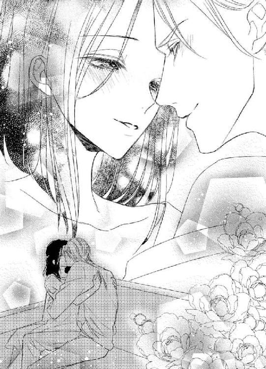
ドキドキした。
彼が紳士的であればあるほど、緊張した。
ジャックは私を抱き上げてベッドルームへ運ぶと、ベッドに下ろし、シャワーを浴びてくると言って部屋を出た。
猶予時間。
こういう時、女性はどうすればいいの？
経験を重ねた女友達の話を聞いても、こんなことは教えてもらわなかった。
女性誌やテレビで言ってるような大胆で積極的な行動は自分にはできそうもない。
彼が出て来るまで、ベッドを下りたり、また乗ったりして部屋の中をうろうろする。
少し濡れた髪に白いバスローブを羽織った彼が戻って来ると、もう緊張は頂点に達していて、見返す目が涙目になってしまう。
「シャワーを浴びておいで。もし今日がダメだと思うなら、服を着て戻ってくといい。だが私に抱かれてくれるなら、バスローブを着てきなさい」
優しく抱き締め、額にキスして彼が言う。
私はバスルームへ向かうと、思わず扉にカギをかけた。
彼が入ってくるわけはないのに。
壁一枚隔てているというのに、服を脱ぐのが恥ずかしい。
髪は濡らさない方がいいわね？ 身体は洗うとしても、バスタブに浸かった方がいいのかしら？ それともシャワーだけでいいの？
待たせると怒る？
どれだけ時間をかけていいの？
悩んで、私はシャワーだけにした。
時間をかけると自分の決心が鈍ってしまいそうだったから。
彼との最初の夜は最低だった。一方的に貪られるだけの行為は恐怖だった。
ジャックとの間に愛があるとわかったからには、その思い出を早く払拭したい。だから彼の望みに応える気になった。
これが本当の『初めての夜』になるだろう。
そう思うとまた緊張してしまう。
シャワーを終えると、今度は下着を付けるべきかどうかを悩み、結局ブラとパンティを身につけた上にガウンを羽織った。全裸で男の人の前に出る勇気はなかったので。
そっと扉を開け、部屋を窺う。
部屋は静かだった。
ベッドルームまで行き、ドアを開け、中を覗く。
ジャックは、物音に気づいてこちらを向き、私の姿を見て顔を輝かせた。
「舞亜」
恥ずかしい。
逃げ出してしまいたいくらい恥ずかしい。
「嬉しいよ」
抱き締められ、キスされ、また抱き上げられる。自分の足で歩けるのに、そうしないと私が逃げてしまうとでも思ってるのかしら。
「とても綺麗だ」
ベッドに下ろされ、またキス。
「まるで夢のようだよ」
私もそう思う。
「緊張してる？」
「ええ......」
「安心するといい。無理なことはしない」
「私は......、何をすればいいの？ 何もわからないわ」
「何もしなくていい。私を感じてくれればそれだけでいい」
「でも......」
「シッ、黙って。もういいんだ。言葉は誤解を生む。もう間違いはおこしたくない。私は君を愛してる。君はそれを受け入れてくれる。今はそれだけでいい」
何度も繰り返される甘いキス。
湿った髪に、頬に、唇に。
私を抱いていた手が、そっと力を入れて身体をベッドの上に押し倒す。
心臓の音がうるさい。彼にも聞こえてしまうんじゃないかと思うくらい。
仰向けに倒れた私を覗き込むように上から見下ろすから、金色の彼の髪が一房はらりと落ちて、ちょっと崩れた感じになる。いつもきちっとしているジャックが乱れた姿を見せるのが、色っぽい。
クールな青い瞳が熱っぽく私を見つめる。
ゆるく着た彼のバスローブから、引き締まった、筋肉の付いた胸が見えると、私の中の『女』がゾクリとした。
彼の顔が首元に埋まり、キスでバスローブをはだけさせる。
合わせ目から滑り込んだ手が、ブラジャーに触れて止まった。
やっぱり、付けてきてはいけなかったのかしら。
「は......恥ずかしくて...」
言い訳すると、彼は笑った。
「かまわない。プレゼントにリボンがかかっているようなものだ」
身体を起こし、寄り添うようにしながら私の目を見る。
大きくはだけさせることはなく、手だけが中に滑り込む。
彼の手が肩に置かれ、そこにあった肩紐を巻き込みながら外し、腕を撫でる。
仰向けになっているのだから、肩紐が落ちたからと言って変化はないのだけれど、手がそのまま膨らみを掴むと、声を上げてしまった。
「あ」
喘ぎ声というより、色気のない驚きの声。上げてしまった自分が恥ずかしくなる。
布の上から、形を確かめるようにそっと置かれる手。
ただ置かれているだけの手が、ゆっくりと動き出す。
どんな顔をしたらいいのかわからなくて、困惑していると、またキスされる。
手の動きが、緊張を高めながら解してゆく。気持ちは高ぶるのに、身体は融けてゆくような感じ。
身体が熱くなり、意識が彼の手に集中する。
「あ......」
手が遠慮がちに下着の中に入り、直接膨らみを掴む。
今度は、鼻にかかるような甘い声が出てしまった。
私が感じていると知って、ジャックが微笑う。
そして、それが許可の合図であったかのように、胸元が大きく開かれた。
もう一方の肩紐も外され、ブラの中から乳房が引き出される。
膨らみに彼のキス。
唇は突起に吸い付き、舌が先を弄ぶ。
「あ...や...っ」
甘い疼きが全身に走る。
「舞亜は楽器のようだ。いい声で鳴く」
言葉通り、彼の指が私を奏でる。剥き出しになった胸を捕らえ、揉み、その先を指で愛でる。
柔らかなそれを埋め込むように時に少し乱暴に、時に触れているのか触れていないのかわからないほど微かに弾いて、摘まむ。
舌で遊んでいる方も、吸い上げたり、転がしたり、歯を当てたり、様々な愛撫を与える。
「あ......、ぁ...っ。ん...」
その度に私は声を上げ、身悶えた。
ああ、こんな時、手はどうすればいいの？
彼にしがみついていいの？
でも彼のどこに？
それともシーツを掴むべき？
ジャックの手が、私の背中に差し込まれ、ホックを外す。
既に用をなしていなかったものがただの布切れと化す。
「外すよ。肩を上げて」
肩紐を取るためには、上に着ているバスローブも脱がなければならない。でももう抵抗する気も起きなかった。
この前の夜と、感覚は全然違っていた。
敏感な部分に触れられて、あの時も身体には快感があった。生理的に、甘く疼くものを感じたこともあった。
けれど今は、『触れられる』ことで感じているのではなく、『触れられると思う』だけで感じてしまう。
好きな人と、求め合って身体を重ねるというのは、ただ触り合うだけとは違うのだ。
彼にしても、ただ性急に自分の気持ちを満足させるためだけに求めていたあの時と、私を悦ばそう、高めようとしている今とでは触れ方が違う。
愛し合う、というのはこういうことなのかもしれない。
欲望だけでなく、触れるだけでなく、何かもっと別のものがある。
それが『心』なのかもしれない。
「あ......、ジャック......っ」
だが、その切ないほどの気持ちとは別に、感覚は私を快楽に落としこんでゆく。
全身を撫で回され、そこから生まれる快感に酔いしれ、すっかり緊張も消えて愛撫を享受していると、彼はその手を下へと移動させた。
「う......っ」
下着をつけたままの下肢を、手が撫でる。感じる気持ちがそこを濡らす。
「怖いか？」
一度だけ、彼が訊いた。
怖かった。
本当はとても怖かった。
初めての接合は痛みを伴い、恐怖を味わったから。
でも、私は首を横に振った。
「あなたなら......」
こうして胸に触れられるだけでもこの間とは違う。蕩けるように気持ちがいい。それならばきっと、求め合って繋がることは前と違うものになるだろうと信じていた。
「痛くても......、我慢するわ」
「痛みなど感じさせないさ。それほどヘタじゃない」
「......私が初めてではないとわかっているけれど、悔しいセリフね」
何人もの女性に快感を与えてきた、という事実は少しムッとさせた。
「嘘は言わない。けれど、こんなにも愛しいと思って抱く女性は舞亜が初めてだ。君の全てが愛しくて、大切にしたい」
悪びれることなく言って、彼は下着をおろし始めた。
「君が私で感じて、快感に溺れるとこをみたい。私だけが見ることのできる、君のセクシーな姿がみたい」
腰骨を撫でた手がお尻に回る。
「君みたいな女性は初めてだ。強くて、明るくて、料理も上手いし頭もいい。物おじすることもなく、いつも私を真っすぐに見返してきた。ケンカしている時も、ね」
バスローブは、既に身体の下に敷かれた一枚の布になっていた。
この上下着を取られたら、私は一糸纏わぬ全裸になってしまう。そう思うとせっかく消えていた緊張が戻ってくる。
私の身体は彼にとって魅力的かしら？
イギリスの女性に比べて、胸が小さいと思われないかしら？
促され、腰を浮かすと下着は私の脚から引き抜かれた。思わず手で身体を隠したけれど、彼はそれを咎めることはしなかった。
私の手に触れ、ゆっくりと引き剥がす。
「恥ずかしい......」
「何故？ とても美しい」
「お世辞よ」
「そんなことはない。白い肌に淡く色づいた胸。乱れた黒髪が頬にかかる様も日本画のようだし、ここも......」
手が、下生えを探る。
「私を誘っている」
日本人の男性なら口にしないような甘いセリフ。
「舞亜は私の女神だ」
冗談ではなく、本気で言っているのだ。
「私はもう、君のことしか考えられない。他の女性のなど目に入らない。君が欲しい」
彼の膝が脚を割る。
身体が滑り込み、否応無く脚が開かれる。
指は奥へ滑り込み、襞を探った。
入口から溢れた露を指に纏わせ、彼はちらっとそこを見た。
「感じてるね。今日はちゃんと」
もう何も言えず、私は顔を赤くして目を逸らした。
感じていたから。
彼に触れられると、『もっと』という気持ちが生まれていたから。
「恥じらう様もまたかわいいよ」
指は、更に襞を広げ、中に差し込まれる。
指だから、痛みはなかった。
差し込まれた違和感はあったけれど、中で動かされ、引き抜かれ、また奥を求められているうちに、身体の中から蜜が溢れてくる。
「あ......」
卑猥な音が耳に届く。
私が彼を濡らしている。
彼に、濡らされている。
「ジャック......」
「指だけじゃ不満？」
そうじゃないわ。
何か......、変な感じがするの。もっと、今感じているものよりももっと強い快感があると、本能が教えてくれる。それが『欲しい』と思わせるの。
でもそれを口には出せない。
喘ぎ続けて、口の中がカラカラだった。
「あ...っ！」
ジャックは、イタズラするように胸の先をぺろりと舐めると、指を抜き、身体を起こした。
さっきまで、優しく微笑んでいた顔が、急に厳しく引き締まる。
『その時』なのだ、と私にもわかった。
彼は自分のバスローブを脱ぎ捨てた。
逞しい身体が目の前に晒される。
女性とは違う筋肉質な身体、光に透ける産毛。
下半身をしっかり見ることはできなかったが、彼は下着を付けていなかった。
「ジャック......」
険しい顔。
「理性の限界まで、君を想うよ」
低い声。
「だが私を狂わせるほど君が魅力的だった時には許して欲しい。欲望に負けるのではなく、君の魅力に負けるのだと知っていてくれ」
大きな手は私の太腿をつかみ、大きく開かせた。
人目に晒すことのない場所を見られ、身体を捩って隠そうとしたが、腿を押さえている手がそれを許さなかった。
彼の手は私の両腿の上にあるのに、濡れた場所に何かが当たる。
それは、彼が近づくにつれ、そこに押し付けられた。
「あ......、や...っ」
手は腿を離れ、指がそこを広げる。
そして......。
「あ.........ッ！」
全身に、鳥肌が立った。
彼が、入ってくる。
私の中にジャックの一部が埋め込まれる。
痛みはないが、上手く呑みこめないでいると、彼の指が秘部を愛撫し始めた。肉塊を押し当てられた周囲、クリトリス、脚の付け根、腰骨、胸、腹。
その体勢のまま手の届くあらゆる場所に。
「あぁ......」
感覚を溶かすような快感。
彼が欲しい。
私はジャックに手を伸ばした。
掴む場所はなく手が宙を掻くと、彼は前屈みになってくれた。腕はジャックの背に回り、何とか彼を抱き締める。

「love you」
囁く声。
「love、MAIA」
低く響く愛の言葉。
「私も...、me too...」
皮膚は身体の中で一番敏感な場所だと聞いた。
身体の内側や、内臓は、それに比べると鈍感なのだと。
けれど今、私は自分の内側で今までで一番強く彼を感じていた。
擦れる肉。
呑み込まされる彼自身。
広げられた場所で奥を目指して彼が何度も突き上げる。
ゆっくりと、時に激しく。
「ジャック......、ジャック...」
内側から快感が溢れて止まらない。
彼は私を抱き締めた。
求め合って、どちらともなく口づけを交わす。
素肌は直接こすれ合い、彼の熱が私の胸の膨らみを潰す。
彼は更に深く私を貫き、腰を動かした。
その動きがぴたりと止まる。
「あ......。ああ...っ、だめ...ッ！」
ビクッ、ビクッと、痙攣が彼を締め付けると、白く灼けるような快感が頭の中を駆け抜けていった。
もう何も考えられない。
頭の中は彼のことだけ。
今受け取っている快感に翻弄され、彼にしがみつくことしかできなかった。
「ジャック......」
彼の名を繰り返しながら......。
ジャックと恋人になれただけでも、夢のようだった。
彼に抱かれて、女性としての喜びを教えられたことも、それが最高の一時だった事も夢のよう。
夢のよう、ということは現実とは思えないということで、結局泊まってしまったホテルの部屋で、朝、目覚めた時に私は目を開けるのが怖かった。
もしもこうだったらいいな、という私の願望が見せた夢だったのではないか、と。
襲われた時の痛みに対して、昨夜は求められるまま何度も達してしまうほど気持ちがよかったのも、都合のいい夢だったからではないか、と。
けれど、目を開けなくても、感覚はあれが現実だったことを伝えた。
あらぬ筋肉を使って疲れた身体、脚の間の違和感。
素肌に感じる上質なシーツの肌触りと沈みのいいマットに羽根枕。
鼻をくすぐるコーヒーのいい香り。
勇気を出して目を開けると、そこにはやはり夢としか思えない光景があった。
朝の光が差し込む大きな窓の前に、ラフな服装で立ったままコーヒーを飲んでいる、ちょっと行儀の悪い金髪の王子様がいるなんて。
いえ、王子様というよりもっとワイルドで強靭な感じだわ。騎士と言った方が似合うかも。彼は、実力で何かを得ようとする覇者という印象が強い。
じっと見つめていると、金髪の騎士はこちらを振り向き、微笑んだ。
「コーヒーを飲むかい？」
「いいえ。ベッドで飲食はしないの」
「礼儀正しいな」
自分の行動を咎められたと思ったのか、彼は手にしていたカップを窓辺に置いて私の枕元に腰を下ろした。
カップをあんなところに置くのも行儀が悪いけど。
「おはよう、舞亜」
優しく額に受けるキス。
「おはよう」
くすぐったくて、恥ずかしい。シーツの中の私は全裸だったから。
「お腹は空いてないかい？」
「空いたわ。でもその前に、シャワーを浴びて服が着たいわ」
「ありのままの君も素敵だよ？」
「ありがとう。でも食事を届けてくれる人には見せられない姿だわ」
「他の誰にも見せたくないから、身支度を整えることには賛成しよう。ベッドから出て来ないのもそのせいだね？」
彼は寝室のクローゼットからガウンを取ってきてくれた。
胸にホテルのエンブレムの入ったシルクのガウンだ。高級ホテルにはこんなものまで備えられているのね。
私はそれを受け取り、もそもそとシーツの中で袖を通してから身体を起こした。
支えるように、彼が肩に手を回して抱き寄せてくれる。
「身体は平気かい？」
昨夜のことを思い出して、頬が染まった。
「大丈夫よ。気にしないで」
「これからのことを話し合いたいんだが」
「食事のことじゃなくて？」
「違う」
「食事をしたその後のことね。私、もう一度、あの別荘へ行きたいわ。仕事で呼び出されたのは嘘で、休暇はまだ残っているの」
「私から逃げたんだな？」
「...ええ。ごめんなさい」
「いや、私のしたことを思えば当然だ。仕事は嘘だとわかって『よかった』と言うべきだな。だが、別荘へ戻るのは少し間を置いてからにしよう」
「何故？」
「フレッドとメアリは二人きりの時間を謳歌しているだろうし、やっと気持ちが通じ合ったんだ、私達も恋人の時間を楽しみたい」
それは悪くない考えだった。
私達が心から楽しいと思える時間を過ごしたのは、初めて会った時の、あの喫茶室での一時だけだったのだから。
「素敵ね。それで、何か予定はあるの？」
「もし君がよければ、買い物に付き合ってもらいたい」
「ええ、いいわ」
「とても大きな買い物なので慎重に選びたいんだ。それに君にも関係のあるものだ」
「私？」
彼は黙って頷いた。
「わかったわ、フレッド達の結婚祝いね」
「それは二人の式の日取りが決まってからでいいだろう」
「じゃあ、車？」
「もう持っている。向こうで乗ってたのはレンタカーじゃない」
「......会社の備品？」
「専門家に任せる」
他に何かあるかしら？
「降参だわ。全然わからない」
お手上げのポーズを取って負けを宣言する。
ジャックは勝ち誇ったような笑みを浮かべ、私を見た。
「私の家だ」
「家？」
ああ、そういえばメアリを日本に呼び寄せると言ってたわ。そのために家を買うとも。
「それなら、メアリを呼ばないと」
「メアリは関係ない」
「だって、一緒に住むんでしょう？ 彼女の好みを聞かないと」
「メアリの好みはフレッドが聞けばいい。彼女は一度イギリスへ戻って、父に結婚の了解を取らなければならないから、すぐに日本に住むこともないだろう。だが、同居する者の好みを聞くというのは正しい」
「誰かと一緒に住むの？」
ジャックは肩を竦めた。
「だから、君の好みを聞いてるんだ」
にやりと笑う彼の顔を見て、その意味を察した。
「私？」
彼は私の手を取り、強く握った。
「私としては、もっとロマンチックな言葉で、時間をかけてからするべきだと思ったが、もう誤解を生まないように、今すぐ単純明快な言葉で言うことにした」
「......何？」
ああ、これは夢かしら。
現実だと思えない。
「舞亜、どうか私と結婚してくれ」
あまりにも幸せ過ぎて、信じられない。
「君のご両親のことを考えると、周囲が文句を言う前に、はっきりと宣言した方がいいだろう。お祖父さん達が旅行から戻られたらすぐに挨拶に行こう。バークレー氏にも、正式に申し込もう。厭味な伯母さんが文句を言ったら、君は未来のグリーン夫人として言い返せばいい」
「......ジャック」
溢れる涙を指が拭う。
「指輪も買わないとな。式はフレッドの後になるだろうが、先に結婚を宣言したのは向こうだから仕方がない」
どうか、夢なら覚めないで。
こんな、これ以上ないくらい幸福な夢を手放せない。
「返事をくれないのか？」
ジャックが、子供みたいな顔で問いかける。答えなんかわかってるくせに。
「夢みたいだわ......」
「夢じゃない。だから早く言ってくれ」
現実の証しだというようにキスされるから、返事が一瞬遅れた。
「イエスよ。もちろんイエスよ！」
「ＯＫ、君は働きたければ働いていい。私の会社に来たければ来ればいい。だが、私の妻になることだけは確定だ」
偶然の出会い。
再会の喜びのつかの間で、沢山の誤解が私達を遠ざけた。傷つけ合い、涙を流し、怒りを覚え、別れを覚悟した。
でもいいの。
何があっても、今私を抱くこの腕を信じられるから。
優しいキスが私を幸福にしてくれるから。
「さて、ではまずフレッドに電話をかけよう。『よろしくお義兄さん』と言って」
この人を、愛しているから......。
あとがき
皆様、初めまして。もしくはお久しぶりでございます。火崎勇です。
この度は、『夏の嵐 英国紳士の激情』をお手にとっていただき、ありがとうございます。
イラストの旭炬様、素敵なイラストありがとうございます。担当のＮ様、色々とありがとうございました。
初めての現代モノのＴＬ。正直苦労しましたが、新しいことをする楽しみもありました。
幸せを手にした二人ですが、これからまだ色々あるでしょう。まずジャックはフレッドにもっと怒られて欲しいです。そして舞亜の父親にもネチネチいびられて欲しい。（笑）
ジャックの過去の女性とか、イギリスの親族の意地悪とか、実は舞亜の務める会社に彼女狙いの男がいて、ジャックと争うとか。フレッド狙いの女性に負けそうなメアリに加担して恋人のフリしてジャックがヤキモチ焼くとか。結婚するので波乱はいくらでもあるでしょう。
でも、結末はきっと幸せ。何せジャックは舞亜に一目惚れなんですから。
それでは、そろそろ時間となりました。またいつかどこかでお会いいたしましょう。
火崎勇
母が妻を亡くしたばかりのイギリス貴族の男性と恋に落ち、私が生まれた。父は母を愛していたけれど、家族が外国人の女性との結婚を認めてくれず、失意の母は私を連れて日本へ戻り、亡くなった。
けれどその後も父や、先妻の子である兄も私を愛してくれたし、実家の岸田の祖父母も私を愛してくれて、幸せな日々を送っていた。
そして今は、兄、フレッドの友人であり、フレッドの婚約者メアリの兄であるジャックが、私を愛してくれている。
彼はイギリス人で、大金持ちだけれど、父の親族達のように国籍や身分など気にしない。
ハンサムだし、紳士だし、申し分ない恋人。
ただちょっぴり暴君で、独り合点が多いところを除けば......。
私達は夏の休暇、兄さんの別荘で出会った。
色々あって、一旦はそこから去った私だったけれど、全ての誤解が解けたので、もう一度、四人で楽しく過ごすためにその別荘へ戻った。
私をフレッドの愛人と誤解していた彼は、そのことをフレッドに言って酷く怒られたそうなので、再会に気を揉んでいたのだけれど、メアリがその悪い空気を簡単に吹き飛ばしてくれた。
「素敵だわ。私達四人で本当に兄弟になるのよ」
妖精のようにくったくなく喜ぶ彼女の前では、婚約者のフレッドも、シスコンのジャックも口を閉ざすしかない。
「ジャックが舞亜と結婚して、私がフレッドと結婚したら、舞亜がフレッドのことをお兄さんと呼ぶことを咎める人はいないんだわ」
「メアリ、厳密にはフレッドが私の義弟になるんだから、フレッドが舞亜をお義姉さんと呼ばなきゃならないんだぞ」
「あら、日本人は年上を敬うでしょ？ だからだって言えば問題ないわ」
人前でフレッドを兄と呼べる。
それは私にとってとても嬉しいことだった。
「フレッドは私に最高のお義姉さんをプレゼントしてくれたのね」
思わずそう言って微笑んだ。
やり直しの休暇。
二組の兄妹と二組の恋人。
これでもう問題なく楽しい時間を過ごせると思ったのに......。
「舞亜」
メアリと二人、朝食の支度を終えて食卓に料理を運ぼうとしていた時、ジャックが私を呼んだ。
「なあに？」
気軽に振り向いた私は、彼の顔が険しくなっていることに気づいた。
「どうかしたの？」
仕事か何かで深刻なことがあったのかと、慌てて駆け寄る。
「ちょっと来てくれ」
腕を掴まれ、廊下の隅に連れて行かれる。
「ジャック？」
「私は自分の誤解から君を山のように傷つけた。だが私は学習しない人間じゃない」
「......そうね」
何かしら？
今更あの酷い夜の事を謝罪しようというの？ そのことは全て終わったことなのに。
「だから君に直接訊く。どんな答えであっても、君は既に私のものだ。だから怒ったりしない」
と言ってる顔が怒ってるけど。
「何が言いたいの？」
「キッチンでこれを見つけた。君だろう？」
彼が差し出したのは、小さなピンクダイヤのはまった指輪だった。
「まあ、嬉しい。大切なものなの。指輪をつけるのに慣れていないから、調理の時に外して忘れてたのね」
喜んでその指輪を取ろうとすると、彼は指輪を持った手をふいっと高く上げた。
「ジャック」
「大切？ この指輪が？」
「ええ」
「誰からもらったんだ？ フレッドのイニシャルならＦになる。だがこの指輪の内側には愛を込めてＣとあるぞ」
彼の怒りの原因に気づいて、私は笑った。
「舞亜。昔のことを咎めるつもりはない。確かに、これはいい物だと思うが、私のために捨ててくれ。君にはもっといい物をプレゼントしよう、婚約指輪として。約束する」
「あなたから婚約指輪をいただけるのはとても嬉しいわ。でもそれは返して」
「舞亜」
睨む彼を恐れず、近づいてその手から指輪を奪い返す。
「まだその男が忘れられないのか？」
「ええ。一生忘れたりしないわ」
「私は自分の妻になる女性に他の男からの贈り物を身につけさせることは許さないぞ」
彼には悪いけど、妬かれるのはちょっと嬉しいわ。愛されてる実感が湧くから。
「覚えておくわ。でもこれは返してもらうわね。だってこれは大切なお父さんからのプレゼントですもの。 ＣはチャールズのＣ。父さんが娘に愛を込めて贈ってくれた大切なものよ」
笑いながら右の薬指にはめ、それを見せる。
「お父さん......、バークレー氏か」
彼の顔に安堵が浮かぶ。
「あなたが注意深くなってくれて嬉しいわ。これを捨てたりしたら、結婚に反対されるわよ」
「それなら我慢するしかないな」
腕が腰に回され、抱き寄せられる。
「父親からのものでも『我慢』なの？」
「当然だ。父でも、兄でも、祖父でも。私より他の男を優先させることは許さない」
にやりと笑った顔が近づき、唇が重なる。
キスは甘く、私に反論の隙は与えなかった。
「舞亜はもう、私だけのものだから」
独占される喜びを教える私の暴君が愛しくて、そんなつもりもなかったけれど......。
おしまい♥
夏の嵐 ～英国紳士の激情～
電子第１版発行 ２０１６年１月30日
著 者 火崎勇
発行所 株式会社ジュリアンパブリッシング
東京都千代田区九段北１‐５‐９‐３Ｆ
０３‐３２６１‐２７３５
ＨＰ http://www.julian-pb.com/
※本電子書籍は左記の作品に基づき製作されました。
発行 株式会社ジュリアンパブリッシング
チュールキス文庫『夏の嵐 ～英国紳士の激情～』
(初版発行 ２０１５年10月30日)
(c) Yuu Hizaki 2016
※本書の一部、あるいは全部を無断で複製複写（コピー）、転載、上演、放送することは法律で認められた場合を除き、著作権の侵害となるため、禁止します。